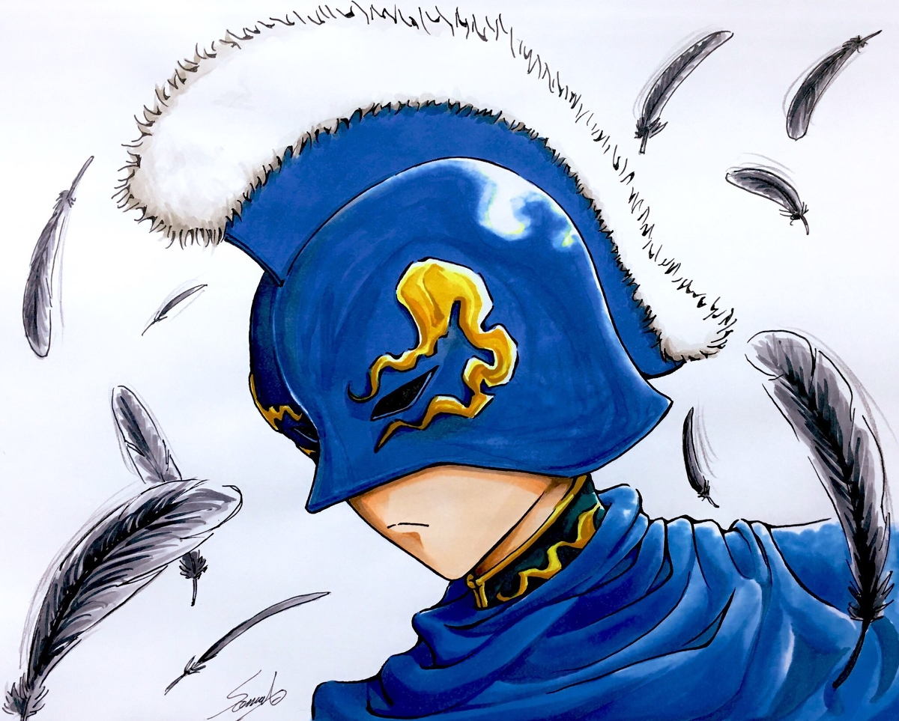
1L留给 黑衣骑士本文的选题是稍微有点偏，毕竟一般谈起危命的复活这个特别篇章，大家首先想到的都会是感情线的分析，既包括新兰的明线、也包括柯哀暗线；不过这里还是要强调一下，危命篇当然是一个红黑对决的主线篇章，黑方的Vermouth和红方的朱蒂都注意到了危命篇发生的一系列事情，新兰哀联袂出演的这场感情大戏周围的观众可是虎视眈眈红黑双方。只有在理解了危命篇背后的主线博弈背景后，才能更好地理解人物所作出的决策以及他们的心路历程。主线分析与情感分析互不分离，这也是名柯这部作品的一大特色。
举例而言，满月篇多次提到Vermouth的照片墙，并给了墙上Sherry、小兰、柯南三人的照片很多镜头。那么，这些照片是什么时候拍摄的？翻开前后漫画进行检查对比，会发现一个令人毛骨悚然的细节：写着Angel的那张毛利兰的照片，很可能拍摄于危命篇新兰柯（哀）三人一起上学的那个早上（具体考证见附5）。换言之，危命篇期间，Vermouth其实一直在跟踪三人，而那一天前后她所看到的“事实”则深刻影响到了满月篇期间红黑双方所做的各项行动。这一暴论是否真的成立将留待正文部分进行讨论。而作为引子，希望大家首先思考一个柯南自己复盘时没想明白的问题（漫画458话帝丹高中学校怪谈）：【贝姐为什么会盯上新出智明、贝姐的目的是什么？】
而另一方面，本文也是想探讨一个问题：【柯哀未来的发展，可以只看柯哀本身吗？】某种意义上，是也不是。任何一段感情，最重要的当然是认清自己的内心。但现实是，人是一切社会关系的总和，在重重干扰因素下，角色并不总能认清自己的内心。而在危命篇这个典型的篇章，我们可以看到，一个人的举动影响另一个人的心态，最终导致每个人都产生了误会。误会是不好的。肯定需要有人先动才可以驱散这些误会，而先动者，未必是柯哀。
本文必然充斥了一些过度解读的地方，不过还是尽量努力做到从漫画原作出发进行推断。
而另一方面，本文也是想探讨一个问题：【柯哀未来的发展，可以只看柯哀本身吗？】某种意义上，是也不是。任何一段感情，最重要的当然是认清自己的内心。但现实是，人是一切社会关系的总和，在重重干扰因素下，角色并不总能认清自己的内心。而在危命篇这个典型的篇章，我们可以看到，一个人的举动影响另一个人的心态，最终导致每个人都产生了误会。误会是不好的。肯定需要有人先动才可以驱散这些误会，而先动者，未必是柯哀。
本文必然充斥了一些过度解读的地方，不过还是尽量努力做到从漫画原作出发进行推断。
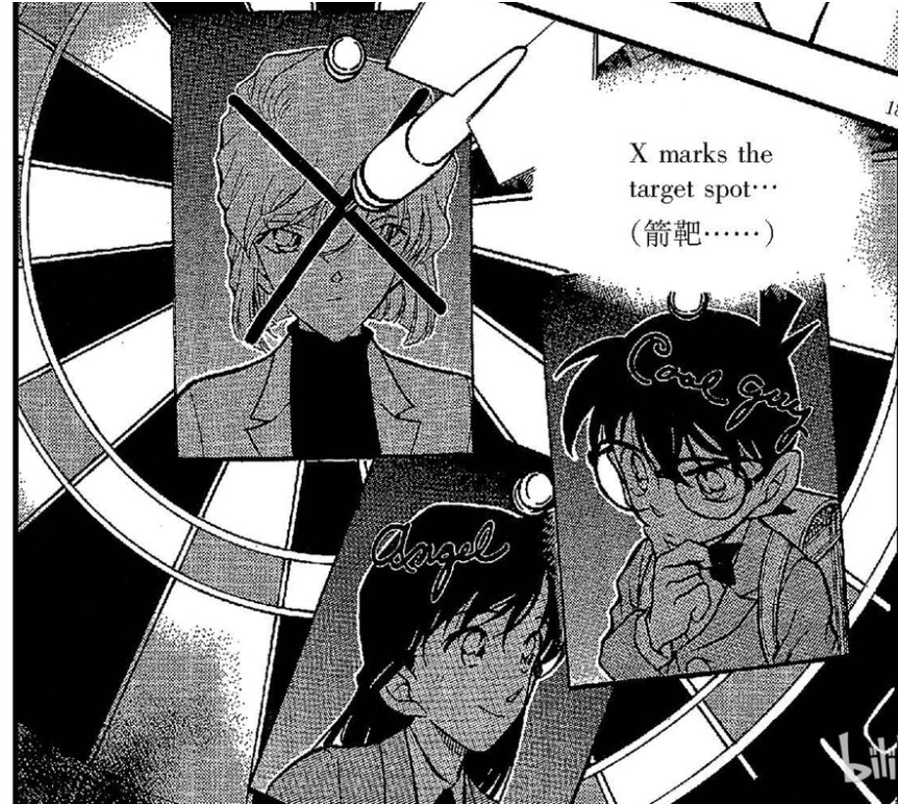
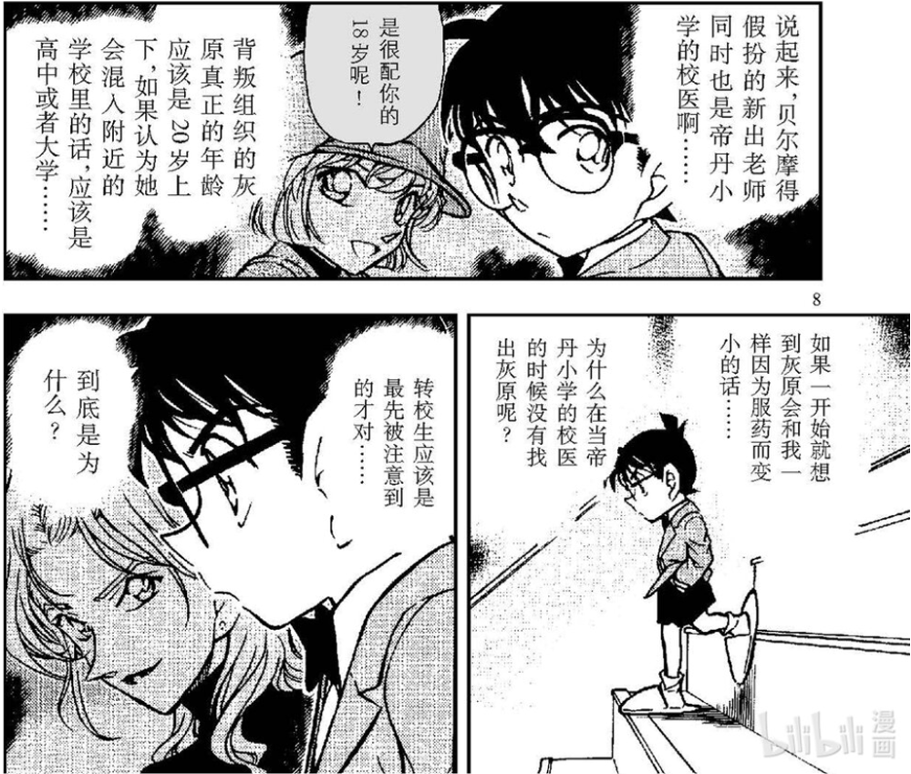
2023-12-03 18:45 | 爆炒风栗:哇这个角度好可，蹲蹲
如果有吞楼的情况可能会延迟一段时间再发送。一些更复杂的推断与讨论（尤其是与主线而非情感线相关的内容）放在了附录部分
目录
1.前奏：偶然又不偶然的再会
2.Vermouth的复活
3.秀朱的复活
4.间幕：命运的三道枷锁
5.毛利兰的复活
6.工藤新一的复活
7.服部平次的复活
8.间幕：命运的三个选择
9.灰原哀的复活
10.江户川柯南的复活
11.尾声：命运的两幕戏剧
附1.宫野志保的复活
附2.有关狭义试药论的一些讨论
附3.有关琴雪、伏雪关系的一些讨论
附4.有关贝雪关系的一些讨论
附5.有关照片墙的一些考证
附6.有关真假新出的一些考证
附7.有关毛衣的一些考证
附8.有关新兰身份梗暗线的一些梳理
目录
1.前奏：偶然又不偶然的再会
2.Vermouth的复活
3.秀朱的复活
4.间幕：命运的三道枷锁
5.毛利兰的复活
6.工藤新一的复活
7.服部平次的复活
8.间幕：命运的三个选择
9.灰原哀的复活
10.江户川柯南的复活
11.尾声：命运的两幕戏剧
附1.宫野志保的复活
附2.有关狭义试药论的一些讨论
附3.有关琴雪、伏雪关系的一些讨论
附4.有关贝雪关系的一些讨论
附5.有关照片墙的一些考证
附6.有关真假新出的一些考证
附7.有关毛衣的一些考证
附8.有关新兰身份梗暗线的一些梳理
1.1 前奏：偶然又不偶然的再会
虽然危命篇作为一个单独的篇章也算得上是优秀，但要全面理解危命篇，还需要结合前后文来看。粗略描述的话，可以按【本厅2——死角——再会——危命——格斗游戏】的顺序来给危命篇定位，另外几篇分别代表了哀线、兰线、组织线和FBI线露出水面的部分（尤其是再会篇与危命篇关系最为密切），而其他插入其中的日常案件也非常重要。
那么在这个定位的基础上，本文对危命篇的评价是：主线意义上雪莉篇到贝尔摩德篇的转折点，优秀的承上启下篇章，在一个剧中不恰当的时间点收束掉了前期的新兰身份梗线，并为后续的剧情发展搭建好了框架。只有在危命篇这个时间点，新兰的【身份梗】是完全成立的，因为红黑双方此时同时盯上了帝丹高中。
再会篇可以视作危命篇的前奏，或者说，危命篇是再会篇的直接后果。再会篇的红黑博弈是遭遇战，双方都没有做好万全准备，但总体来说，柯哀一方吃瘪更大（小哀受重伤+柯南被迫放火逃生）。再会篇的起源是一个偶然，小哀做噩梦，然后柯哀在街上走着的时候看到了保时捷356A。但某种意义上，这也不算是偶然。
为什么小哀在真实遇到Gin之前就会做噩梦？噩梦的理由与本厅2和死角篇相关，两篇所带来的正反情绪，激发了小哀初登场时就已经提过的恐惧设想——组织很快就会发现她，她无比留恋的这块藏身之地、以及好不容易收获的种种感情，将被一同埋葬。为什么柯南在知道是Gin的车之后不管不顾地莽了上去，甚至一度失态吼了小哀？因为死角篇带来的强烈情绪压力，促使他迫切地想找回变大的可能，只要有一丁点线索就会咬住不放，然后这种冒进的战术被现实打脸。
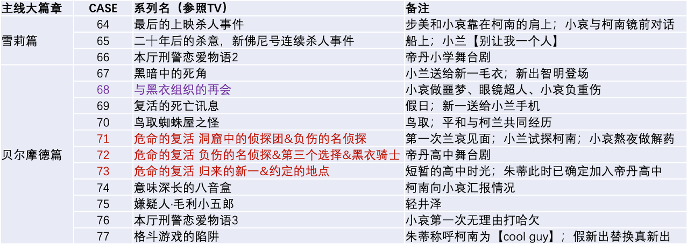
1.2 前奏：偶然又不偶然的再会
从剧情设计的角度讲，既然情绪铺垫到位了，就需要一个突破口。Gin为了给Vermouth接风、共同配合Pisco的任务，从米花方向赶往杯户。Sherry原来的制药厂本身就离这一片不算特别远（坐车的时候可以偶遇新一小兰），怀疑举目无亲的Sherry逃不了太远的情况下，从一些蛛丝马迹推测Sherry在调查自己也算合乎逻辑。也正是在这一章的危机氛围下，小哀和柯南都做出了不一样的选择，小哀露出了高冷面具背后的坚强与柔弱、柯南露出了无敌表象之下的焦躁与不屈，让他们彼此更近了一步。但是，两人都知道，彼此心理上的问题没有完全解决，只是这种思考被黑衣组织的生命威胁暂时打断了。从这个视角来看，必然需要后续篇章来给再会篇收尾，其后的危命篇是小哀救赎柯南，满月篇是柯南救赎小哀。
而这其中隐藏的暗线就是，随着Vermouth和追着她的FBI相继来到杯户、米花附近。红黑博弈从此常态化了，而对再会篇之后一些未解问题的疑虑，则带到了危命篇的舞台上。危命篇时明确提到，朱蒂已经在帝丹高中入职。
同期的日常事件也起到了烘托情绪的作用，危命篇的前一篇就是鸟取蜘蛛屋之怪。武田家的两个小姑娘询问真相时，柯南一度要将罗伯特杀人的手法脱口而出。但看到武田智惠婆婆坚持称之为蜘蛛仙作祟时，他也一瞬间想明白了婆婆这样做的目的（平次从表情上看还没有想明白），露出了复杂的微笑。某种程度上讲，他对小兰的心态，也类似于武田婆婆对孙女们的心态。而小兰则从同一个事件中提取了相反的情绪，促使她和柯南的矛盾在危命篇达到了激化。
这样来看，鸟取蜘蛛篇提到的因幡白兔的传说，其实也是充满了隐喻含义的：隐瞒与欺骗会带来伤痕，如果不能治愈这些伤痕，就永远无法求得姻缘。
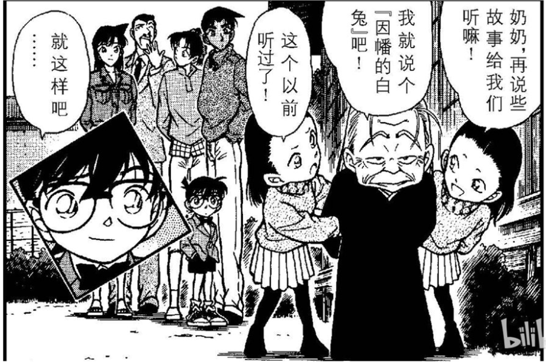
这是危命篇前日常事件的最后一格，武田婆婆用蜘蛛大人的故事向孙女们隐瞒了案件的真相。对比柯兰、平和的表情可以发现明显差异（小兰的表情有点糊，但作者依然通过和叶的视线指向强调要重视小兰的表情）【因幡的白兔】是鸟取本地的真实传说，大致内容为：白兔落难海岛，必须返回陆地，可是苦于没有路桥通行，
于是它心生一计激将法，对海里的鲨鱼说，我们兔子一族数量众多，一定比你们鲨鱼多。鲨鱼听了不服，便把鲨鱼一族统统叫了来。白兔让这些鲨鱼排成一列，从海岛一直排到大陆海岸，犹如架起一座浮桥。白兔跳到鲨鱼背上，一边走，一边数，口里数着鲨鱼的数量，就这样即将走完全程时，白兔的谎言被戳破。愤怒的鲨鱼把白兔扒光了毛，它的伤口又被浸泡在海水中，使得白兔痛不欲生。
传说的大国主听取了白兔撒谎的故事之后救助了它，白兔便降下祝福，让大国主击败了其他竞争者成功迎娶八上比卖。于是，白兔就被奉为姻缘之神。
2023-12-04 03:14 | moonandinfi:该说不说，这个传说为啥我感觉一点逻辑性没有呢2023-12-04 04:28 | 彼岸Edogawa_ai:话说和叶看小兰这格好像“放心不下就是喜欢”那格啊2023-12-04 21:19 | 奥斯丁格理芬:回复 moonandinfi :日本的传说都这鸟样。传说中，天照和月读还有须佐之男，不是眼睛和鼻子，是眼屎和鼻屎。2023-12-04 22:42 | 没字也行:嗯，柯南就是白兔，很合理2023-12-04 22:43 | 没字也行:柯南=白兔，鲨鱼=兰，大国主=哀，八上比卖=新一。故事线完成了


2.1 Vermouth的复活
在谈及这个话题之前，我想先引入一个论断：【危命篇Vermouth在场，但不是新出智明，而是作为第三方存在】，这里不加证明，详细论述请见本文附录部分。那么在这一论断的基础上，危命篇就当真变得凶险万分，走错一步棋都会陷入万劫不复的深渊。
很多读者会有一个误区， Vermouth是柯南的“干妈”，所以她会保护柯南，对柯南是无害的。这一点显然是错误的， Vermouth不能代表整个组织，当她动用组织的资源来保护柯南时，反而会引起组织内其他成员的关注，进而导致柯南陷入危险；即便抛开这点不谈， Vermouth用来保护柯南的方法，也是柯南绝对接受不了的；满月决战很好地向读者展现了这两个问题（ Vermouth逼狼人动手杀人制造案件，想要把工藤新一从阿笠博士家引到更安全幽灵船上，但她没想到怀疑她的组织高层也派了Vodka潜伏上船，差点就害死了工藤新一）。对柯南而言，最优解从来都是、不到万不得已别让组织成员发现（哪怕是Vermouth ）
另一个常见的误区是，满月篇Vermouth的最初目标是Sherry、她是为了接近Sherry才决定盗用新出智明的身份。这一点在漫画中通过江户川柯南自己的推理否决了（ Vermouth很长一段时间内并没有意识到Sherry就在帝丹小学）；作为佐证，在满月决战之前，灰原哀并没有听过Vermouth这个酒名（考证见附录部分）。在Sherry逃出组织前的十八年里， Vermouth从来没有去找过Sherry的麻烦。再会篇组织为抓捕Sherry设了一个局，Pisco甚至一度已经抓住了小哀，但Vermouth对这次抓捕行动却显得兴趣缺缺，不然被警方释放之后，大可问一句Pisco去酒窖干什么。而且在组织视角中，再会篇之后Sherry应该跟着她的骑士一起离开了东京。要抓Sherry留在东京是没有意义的。 Vermouth对Sherry的恨意一开始并没有到非杀不可、不杀寝食难安的地步。
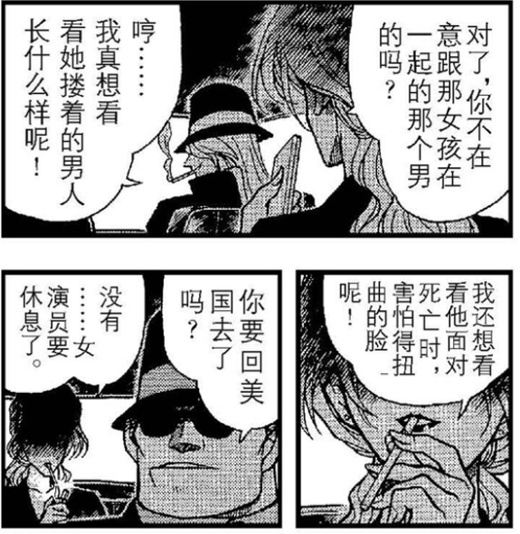
2023-12-04 20:34 | 猫兔💕:这个角度真是太棒了，感觉大家都把“小柯干妈”这个梗玩的太真情实感以至于弱化了贝姐极其利益组织的杀伤力。事实上贝姐的所谓“护崽”做得并不高级，水无篇被琴酒发现贝姐可疑照样举枪质问（且贝姐当时其实没有做出足够合理的解释），如果没有秀一擦屁股，大叔和小柯直接交代在这了。2024-01-30 11:06 | 耶和华仿聚:回复 猫兔💕 :主要是那个时候也没有其他更好的合理解释了吧,那件事情本来就是小柯搞砸了。再具体一点刺激明明可以在琴酒还没开始质问大叔之前就开枪，为什么偏偏得等到贝姐说完后再开枪？要么他自己恶趣味，想玩一玩。要么是他还没到。个人倾向于第1种2024-01-30 11:10 | 耶和华仿聚:回复 猫兔💕 :回复 暗影太阳 :再讲细一点，那时候琴姐听了贝姐的话，已经是打算放弃狙击了，打算拿那一坨窃听器回去，检测上面的唾液。而且后面贝姐也是给了琴酒一个较为合理的解释
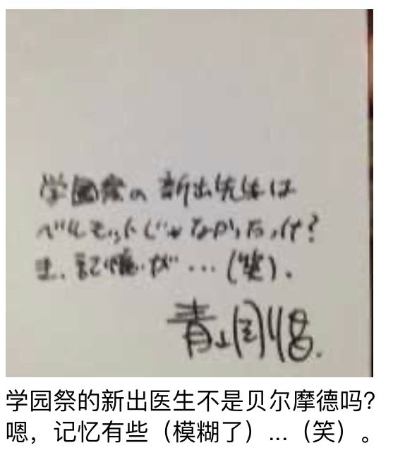
之所以会有读者这样提问，是因为贝姐照片墙上的大部分照片拍摄于学园祭当天（且追击她的朱蒂已经在帝丹高中入职）。但是，同样有一些证据证明真新出也同时出现在了舞台剧现场，详细的论证部分放到了本文的附录部分。本文采取的是【贝姐第三方论】，即学院祭新出为真，但围观舞台剧的路人中有人为贝姐假扮。
2.2 Vermouth的复活
在理清楚这一点之后，我们可以开始思考Vermouth在危命篇前后的行动。她和Gin说要留在日本一段时间，Gin也没有过多过问她在找什么。这里我们可以自然推断，【Vermouth的第一目标就是工藤新一】。正常来说，以她能接触到的信息源（A药名单、行动报告、切身体会），她最初需要调查的是，工藤新一是否死亡。而此时她是无法推断出Sherry和工藤新一在一起的，所以，【漫画中应该有某个事件让Vermouth 确定她可以找到第二目标Sherry 】。
被修改过后的A药名单上明确，工藤新一是已死的。 Vermouth是否会相信这个结果？由她自己的例子可知，A药并非百分百致死，但毕竟新一是第一个服用Sherry版A药的人，很难说药效和艾莲娜版究竟一不一样，尤其是从不致死、冻龄到返老还童还有很长一段路要走（参照Pisco的评价）。Vermouth自然是期望工藤新一还活着的，为了证实这个猜想，她需要找到一个调查切入点，也就是帝丹高中和新一的青梅竹马小兰，类比服部平次当初的思路。而从情感上讲，疼爱小兰的Vermouth想要找个合适的角度看看（新一失踪或死亡后）小兰过的好不好，也是说的通的。
从剧情上看， Vermouth直接盯上的是新出医生。为什么？首先，在死角篇以前， Vermouth当然没有盯上新出智明的理由，而且从Vermouth对死角篇案件的陌生程度来看，她应当就是在死角篇以后、再会篇之时才回到了日本。这期间，其实也只有一个理由让Vermouth选择新出：【因为新出和小兰关系很好】，而且在校外也可以见到小兰。（ Vermouth 不去波洛咖啡厅之类的地方也是有意在和小兰保持一定的距离，太近了反而会引起组织内其他成员的怀疑）
更进一步说，如果只是为了观察小兰过得好不好的话， Vermouth没必要非得偷一个白身份，远远地看一下小兰就够了（尤其是几个月后，她还要去执行卧底MI6的任务，还有别的事情要忙）。 【Vermouth应当是先从小兰身上获取了一定的信息】，认为有留下来继续观察的价值，才正式决定杀死新出、取而代之。否则，如果证据更多指向工藤新一已死的话，身负重任的Vermouth也不至于非要陪小兰玩高中过家家的游戏。
这里引入开头提到的那个论断。 Vermouth在帝丹高中附近听到了一些传闻（工藤新一还偶有出现、会出入毛利侦探事务所之类的），但还没有证实。她考虑过窃取新出智明的身份，危命篇时正在观察他的行事（和基德不同，Vermouth无法做到瞬间变装，长期扮演的角色需要经过一定的调研，所以照片墙上也出现了真新出的照片），刚好那天校园开放，她完全可以随便变装一个路人去学校。
真正让她决定留下来的，是危命篇学园祭亲眼看到了【工藤新一出现，随后又再次消失】，并且推断出原因就是因为小兰。后来，假新出照片墙上出现了宫野志保的证件照、以及柯南及小兰的抓拍。其中，小兰的抓拍很有可能就是危命篇第二天早上在工藤宅门口的场景（当时只有小兰一个人在门口等）。继续跟踪下去的话，Vermouth也会发现这个唐突出现的工藤新一又会在米花酒店唐突消失。
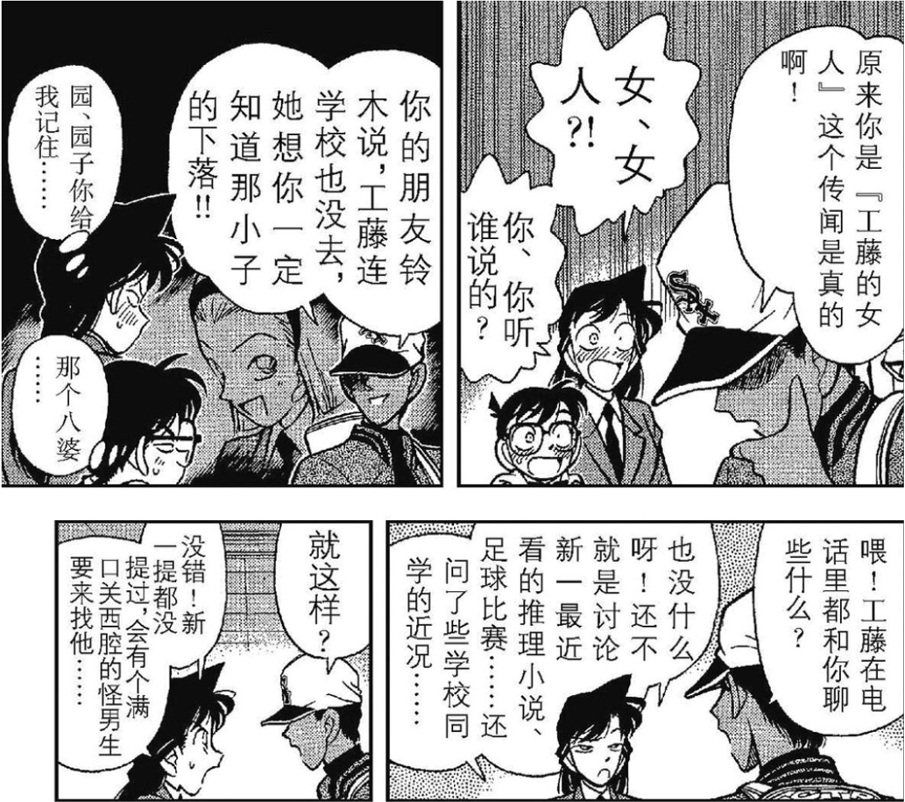
平次当初调查工藤新一的思路就是先学校后事务所
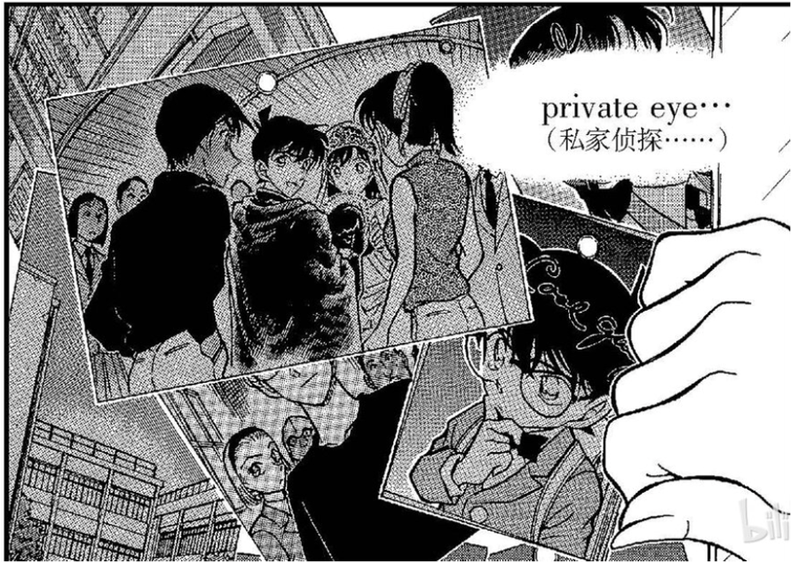
由于学园祭开放校园，校外人士也进入到了舞台剧的现场。新一在危命篇违背约定当众摘下头盔，刚好被Vermouth拍到。这张照片对朱蒂而言没有起到太大用处，但却是贝姐证实【工藤新一还活着】的关键。2.3 Vermouth的复活
柯南的抓拍则要迟滞很多。那张抓拍上柯南身着蓝色小西装，背着小学生书包。而在再会篇之后、危命篇之前，几个案子都是发生在外地或假日，没有柯南背书包的场景。事实上，一直到漫画270话格斗游戏篇之前，小西装和书包都没有同时出现过。从逻辑顺序上讲，柯南的抓拍时机应当在小兰之后。 Vermouth是先盯住小兰，过了一段时间才开始着重关注柯南的（而非相反）。
漫画270话格斗游戏篇通过台词可知，新出智明从篮球社转到话剧社，直接原因当然是Vermouth打不了篮球；同理，这一话可以视作Vermouth谋杀新出一家、替换新出智明的标志。此时， Vermouth可能已经开始用【coolguy】称呼柯南，但并未开始与柯南的直接接触，观察重心依然在帝丹高中及小兰身上。287话神秘乘客篇开局， Vermouth对Gin提到，【（要找的东西）本尊还没有找到】；随后是假新出为帝丹小学体检；然后是跟踪柯南一行人的行踪上了公交车。
无论这里“要找的东西”理解成第一目标还是第二目标，小学体检都是一个关键点。小学体检时， Vermouth可以获取柯南的血液、指纹等信息。而危命篇时，工藤新一在舞台剧道具上留下了自己的痕迹。两项比对即可确证【工藤新一就是江户川柯南】。当然，莎朗可能本来就见过新一小时候的照片，体检只是起到确证作用。而在这种工藤新一变小这种确证的基础上，结合危命篇工藤新一再次出现，则可反推出，【逃亡中的Sherry就在柯南身边】，所以他才拥有短暂变大的能力。
我个人倾向于认为， Vermouth锁定柯南并非一蹴而就的，而是花了一定的功夫，直到神秘乘客篇才最终确信。也是因为这个原因，危命篇和神秘乘客篇Vermouth的心态截然不同，在看到工藤新一还活着的时候， Vermouth更多是欣喜；而意识到坏女人Sherry正藏在柯南身边的时候，则是真正动了杀心。故而在公交车上，小哀感受到了极其强烈的酒气。
莎朗和有希子的友谊、以及其在演艺圈的成就都并非虚假。也许她真的经历过一段时间的正常人生活，有过自己的事业与追求。但是，莎朗的葬礼送走了这份正常人的生活，再会篇与危命篇则舍去了克莉丝的名字。再会篇是克莉丝最后一次公开露面，从危命篇开始，克莉丝标志性的低马尾不见了。随着莎朗、克莉丝两个白身份被相继放弃，这个女人重新浸入了黑暗的深渊，名为Vermouth的恶魔复苏了。红黑对决的浪潮也将逐步走上高峰。
2023-12-04 01:28 | 猫兔💕:贝姐不打篮球忽然笑出声2023-12-04 12:47 | 洛菲斯♬:贝姐什么都会身手了得样样精通 但是不会打篮球
回复 猫兔💕 :打篮球时容易和其他人产生身体碰撞，有可能被发现不是新出或不是男人2023-12-04 22:51 | 没字也行:回复 猫兔💕 : 体型不一样，满月篇是贝姐充气成的新出，怎么打篮球.....包括足球这些运动2024-02-26 11:27 | SissySkyAi:之前有部分人认为:贝姐因为A药的缘故，所以怨恨宫泽一家，进而想杀哀酱！ 根据你上面的论据，我觉得应该是:贝姐知道哀酱在柯南身边，而一旦哀酱被抓，无论柯南身份是否暴露，大概率要被组织灭口。为了保护亲儿子，所以贝姐对哀酱的杀意才那么重！
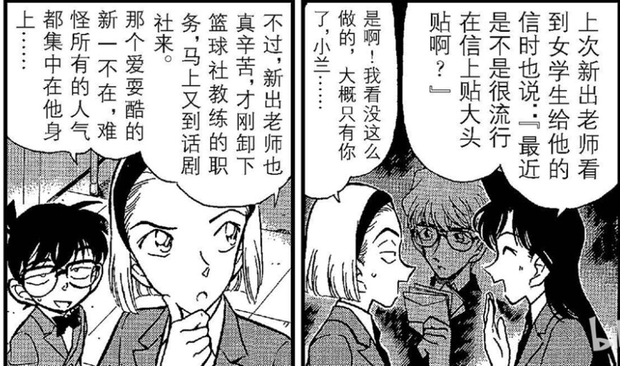
格斗游戏篇提到新出智明变更社团是假新出鸠占鹊巢的标志
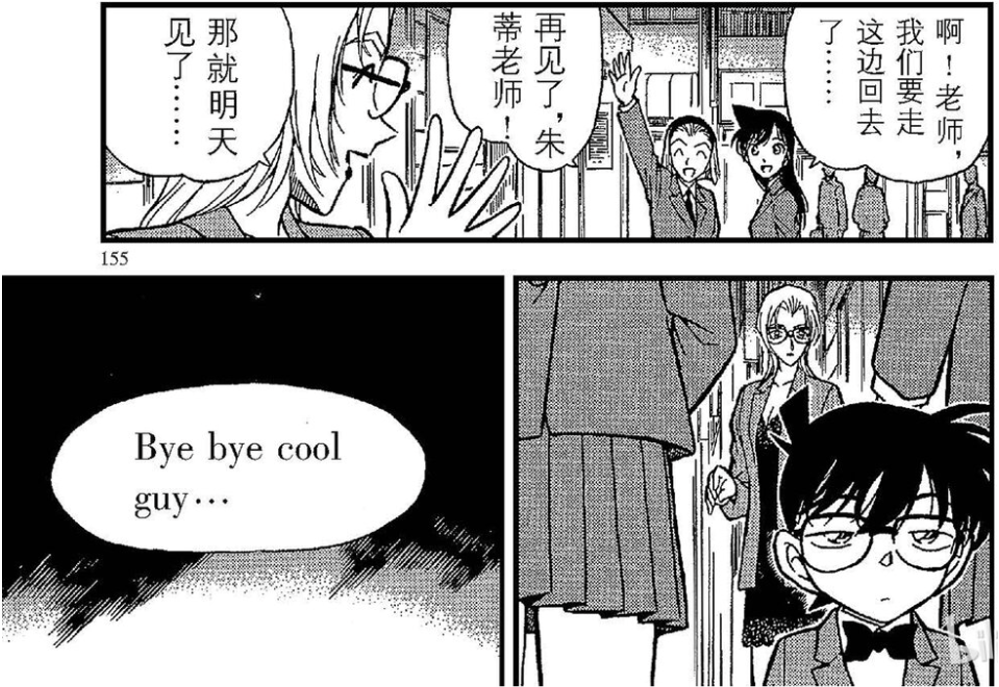
朱蒂在不了解原因的前提下称呼柯南为【cool guy】，此时贝姐的照片墙已经拍摄完毕并被复制到朱蒂公寓故而贝姐拍摄柯南照片的时机应当在危命篇之后，格斗游戏篇之前
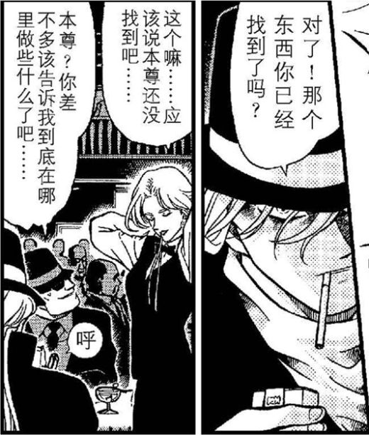
这里的本尊有两种解释，Sherry或工藤新一；本文倾向于后一种解释，因为此时贝姐已经拍摄过柯南照片并写好批注，但还没有直接证据证实。紧接着，假新出前往帝丹小学做体检。
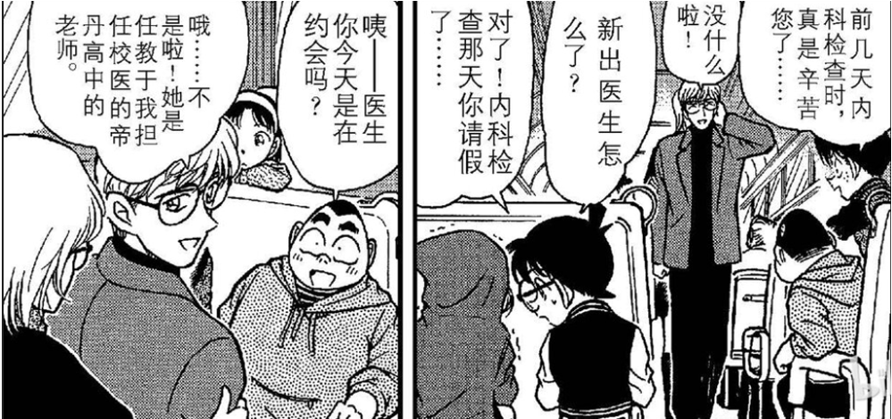
这次体检小哀没去，逃过一劫。后续柯南自己复盘时最不能解释的也是这一点，如果贝姐一开始就已知变小并且第一目标为Sherry，就应该严格筛查没参加体检的帝丹小学学生。当然读者视角知道纽约篇发生的事情，贝姐的第一目标实际上是新一，从【新一=柯南】+【柯南能短暂恢复为新一】两点才反推出Sherry在柯南身边，但最开始贝姐还没立刻意识到Sherry也变小了。
3.1 秀朱的复活
相对于Vermouth，朱蒂的行动则较为明确。危命篇时，朱蒂已经入职帝丹高中，且大概率在舞台剧现场（当时警方封锁了消息，本身窃取了警界高层身份的Irish不谈，其他人不一定确切知道新一现身过）。朱蒂的目标也很明确，就是紧盯着Vermouth不放。莎朗葬礼后，朱蒂通过比对指纹的方式，确定了【莎朗=克莉丝=20年前灭门案的凶手】；相反， Vermouth不知道朱蒂这个人，也不知道朱蒂已经推断出冻龄、易容术等关键信息。甚至一开始Vermouth还不知道克莉丝这个白身份已经暴露了，在杯户酒店和接近新出医院时依然在使用这个身份。
因此，在剧情前期，朱蒂是占有先机的，而她的表现也堪称优秀。通过克莉丝的行动轨迹，朱蒂推断出新出智明有被谋杀的风险，提前与之进行联络，打乱了Vermouth 原有的部署。朱蒂入职高中的直接原因应当就是和真新出接触，没有长期潜伏的打算，学生们评价其最初的课程非常沉闷。（顺带提一下，朱蒂甚至抢在了Vermouth 动手之前用车祸的方式送走了新出一家， Vermouth 连动手杀人的机会都没有，也是因为这个原因，真新出并没有切身感受过Vermouth的恐怖，反而会怀疑她是否真的是坏人）
假新出鸠占鹊巢后，朱蒂成功潜入宅邸，翻印了Vermouth的照片墙，结合自身在危命篇的观察，确定了Vermouth的两大目标：Sherry和柯南，以及接近这两大目标的一个契机：小兰。在FBI大部队尚未到来的情况下，朱蒂独自侦查锁定了柯南，而找到Sherry则已经超出了不知情者的极限，一时没有锁定目标倒也不必苛求。
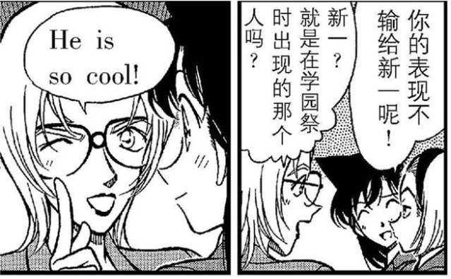
学园祭舞台剧时，朱蒂有可能混在了后方的观众里，也注意到了工藤新一出现

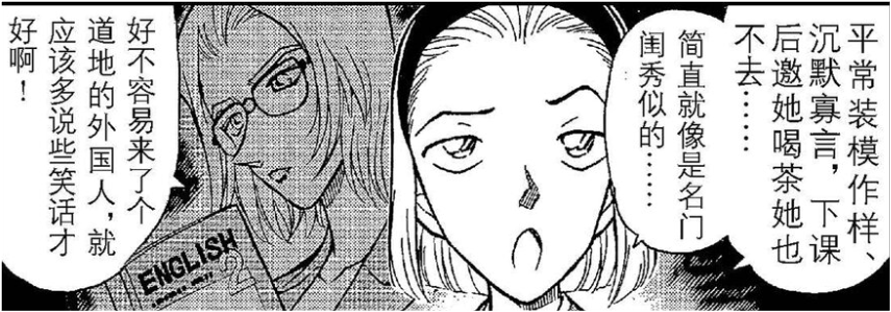
危命篇的同时，朱蒂已经在帝丹高中入职，但其最初表现得沉默寡言、讲课乏味，和后期判若两人。一个可能的推测是，朱蒂一开始是打算来帝丹高中找被盯上的真新出接头的，原本没有常驻的打算。
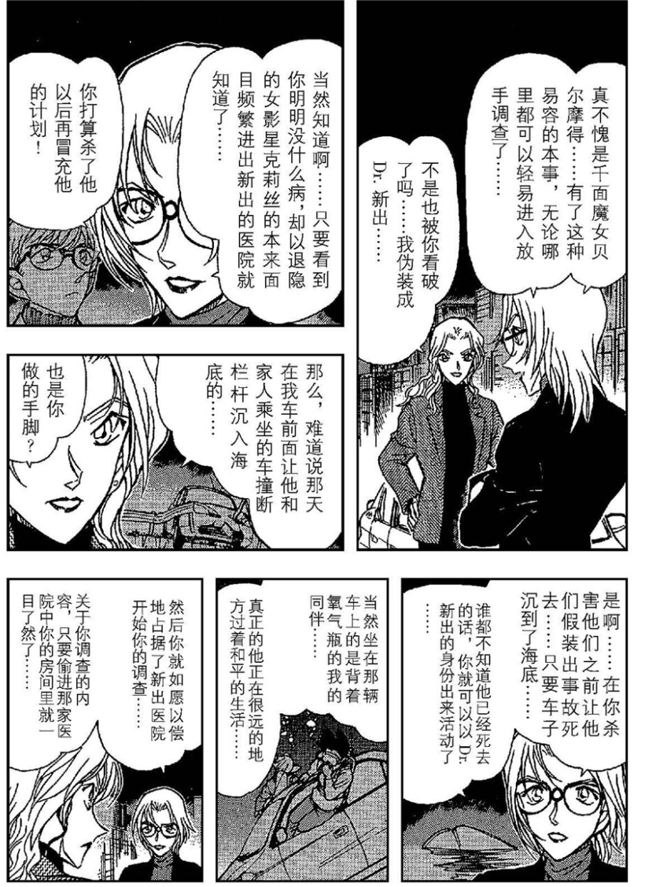
朱蒂抢在贝姐动手前导演了一场车祸，拯救了新出全家。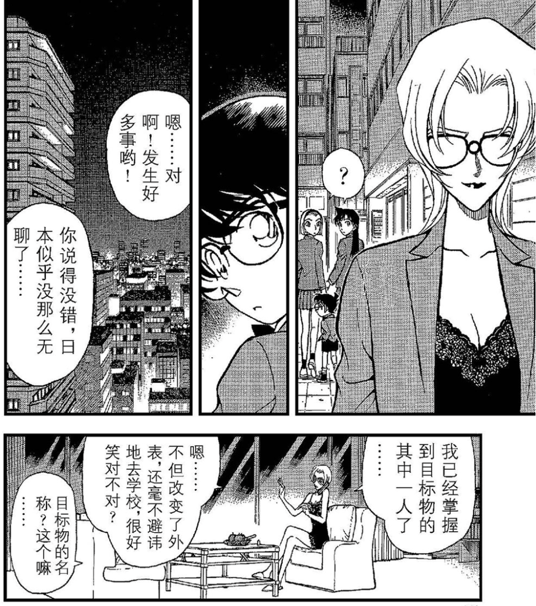
贝姐的照片墙上有三张照片写好了批注，其中小兰没有什么隐藏身份、并且还没有被杀掉，但保险起见，朱蒂后面还是安排了一部分FBI来保卫侦探事务所。朱蒂这里对话提到的【目标物的其中一人】指柯南，第二个【目标物】指贝姐。至于剩余未找到的一个目标物Sherry，由于贝姐也只有证件照，此时两人还在寻找过程中。3.2 秀朱的复活
真正有问题的是秀一，最初的一段时间内，秀一的状态是很差的。他作为曾在黑衣组织内卧底三年的老牌卧底，不反思自己暴露的原因、不传递自己知道的情报，反而让FBI的行动由主动变成了被动。最直观的问题是，没有秀一的情报支持，朱蒂自己一直不知道他们正在追查的就是秀一之前卧底过的黑衣组织，给Vermouth另外取了一个【RottenApple】的代号，也不知道【RottenApple】在找的Sherry就是她的情敌宫野明美的妹妹。
甚至于说，神秘乘客一篇，三人同时上了公交车。 Vermouth已经忘记了朱蒂是何许人也，但对于大名鼎鼎的赤井秀一可谓记忆犹新；相反，赤井秀一此前却并不知道Vermouth是谁，不知道眼前这个人就是他曾经交锋过的银发杀人魔。如果说之前Vermouth还不确信有人追到日本来了，见到赤井秀一那张脸的时候就全明白了，后半场开始主动权就被Vermouth抢了过去。说到底，赤井秀一作为一个已经暴露了的前卧底，就不应该再去做跟踪这样隐匿的事情，尤其是跟踪过程中既不化妆、又大咧咧地使用真名，实在是有失专家风范。
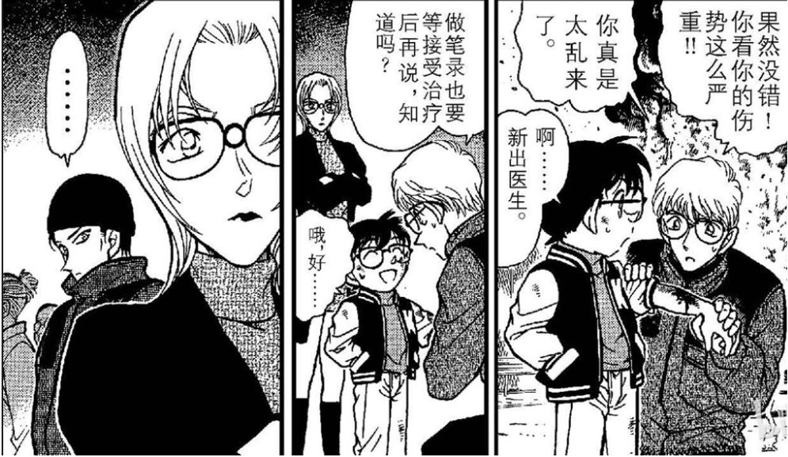
FBI在已知假新出身份的前提下迟迟不收网，主要还是顾虑Vermouth要找的目标，担忧逮捕Vermouth 之后，两个目标可能会被同伙们灭口，所以希望能沿着Vermouth的思路，赶在她之前先找到这两个目标并保护起来。格斗游戏篇朱蒂在试探过柯南之后汇报找到了其中一个目标。神秘乘客篇，赤井秀一汇报“目标物尚未现身”，实际上就是指没发现Sherry的踪迹（侧面证实了秀一没认出车上的小红帽哀）。四台保时捷篇，朱蒂最终确定了第二个目标就是灰原哀，随后就向帝丹高中申请了辞职（尽管她还不知道为什么这个小姑娘会是组织追杀的目标）。3.3 秀朱的复活
FBI作战的失败之处就在于，在毛利侦探事务所上浪费了太多精力，反而是自身的底细被敌人摸得一干二净。归根到底，FBI是在不知情的前提下以小兰为切入点进行调查的，先入为主地担心Vermouth会对小兰不利。而这一切又可以追溯到朱蒂在危命篇看到的舞台剧。朱蒂意识到， Vermouth紧盯新出就是看上了新出和小兰很亲近。果不其然舞台剧之后不久，新出全家就出事了。而对朱蒂来说，舞台剧上的工藤新一就是一个简单的乱入角色、她后续也没有在这上面投入更多关注。
这里有一个额外的点需要提醒，即使到了满月篇的最后，以朱蒂为代表的【FBI并不知道变小药的存在，不知道柯南=新一、小哀=志保】。这个秘密柯南并不只是在隐瞒黑方，同样也在隐瞒传统意义上的红方。如果柯南与小哀的更多信息被FBI这样的强力机构所得知，对他们两人都未见得是好事。只有赤井秀一因为个人原因提前明确【小哀=志保】，但他对【柯南=新一】的怀疑也要到很后面去了。
那么，不知内情的朱蒂在看着危命篇那一幕剧的时候，在想什么呢？二十年宿仇即将得报的兴奋、对Vermouth行动的不理解与困惑、又或者是对新出智明和小兰未来命运的担忧？至于赤井秀一，他的心已经死掉了，但在这之后的深入调查中，仇恨的火焰重新被点燃，驱使着他成为一枚划破黑夜的银色子弹。满月篇秀朱两人还要进行更多的磨合，但在危命篇的时间点，两人至少可以说见到了摆脱过去束缚、走向未来胜利的一点微光。
4.1 间幕：命运的三道枷锁
在进入下一个问题之前，我们不妨先聊一聊危命篇提到的三个“日常”案件。我们把案件中的敏感要素提取出来，罗列如下：
案件①：银行劫案、内讧、危险勿近、好奇心、撞破秘密、灭口、枪击、将棋
案件②：发明新药、理论反例、滥用药物杀人、医生的女儿、厉声拒绝、骤雨、毒杀、硬币
案件③：二十年前、觊觎技术、假意合作、恶意并购、父辈以自杀为武器、子承父业、假面与眼睛、黑暗中一束光、消音器
我们这里姑且放下将棋、硬币、消音器主线三件套不谈，只看一下其他要素，刚好能够描述宫野家两代人的命运：
案件①→宫野明美参与银行抢劫、随后内讧、死于枪击
案件②→宫野志保发明新药，存在理论反例并宣告其死亡，反对组织滥用药物杀人，在雨夜逃亡
案件③→宫野厚司的理论遭到组织觊觎，白鸠被恶意并购，研究所大火被定性为自杀，女儿继承了事业，走上了相似的道路，这也许是宫野一家的宿命
重组一下这些要素，同样可以用来描述工藤家两代人的命运
案件①→工藤新一因为好奇心撞破了组织的秘密，被灭口
案件②→江户川柯南是现行A药的反例，一旦被发现就要被杀死
案件③→工藤优作先破解谜题再求婚，解谜先于恋情是工藤一家的宿命
这些要素反过来同样可以描述黑衣组织的行动纲领：
案件①→秘密高于一切，知情者必须灭口（再会篇将吞口重彦和Pisco灭门）
案件②→实际上在追求一种前所未有的新药，关注服药者情况（给工藤新一喂下A药，关注其生死）
案件③→组织内存在世袭机制、惯于使用假脸示人、有问题的眼睛是凶器（满月篇以及羽案）
4.2 间幕：命运的三道枷锁
这些案件本身确实是意外，但也是作者所做的剧情铺垫，适用于（米花世界中的）普通人日常的逻辑，当然也适用于红黑对决。同时，作为故事的主角和解谜者，柯南的行为明显受到了这些案件所带来的情绪影响，变得越来越焦躁。尤其是，案件①中柯南是因为知道太多导致腹部中了一枪（这是他在漫画中受到过最重的伤），醒来之后第一句就是【我怎么还活着】。侦探是好奇心的动物，想必即使哪一天真的因为好奇心而死，柯南也不会后悔。
但是，他不愿意将身边的人卷进这种危险的命运中。他没办法永远守在任何人身边，一旦他先死去了，活下来的知情者就要独立面对明枪暗箭。就像是案件①中柯南昏迷之后，少侦三小只就要独立去与穷凶极恶的匪徒周旋（当然，他们交出的答卷很漂亮）。而在病床上，面对是否告诉小兰真相（将她牵扯进红黑对决中）这个问题，他变得无比犹疑与挣扎。同理，案件②之后，工藤新一第二天的行动相对而言收敛了很多，破案时甘愿扮作一个年轻警官；案件③之后，柯南带着苦闷至极的心情回到了小兰身边，但不愿意承认自己先去破案而不是争分夺秒告白是一种错误。
某种程度上讲，这三起案件昭示了紧锁在柯南、小哀、以及主角团命运之上的三道无形枷锁。为什么柯南不能向小兰坦白，与小兰长相厮守？因为这三道枷锁。为什么小哀不愿向柯南表露自己的心意，直言自己所知道的组织内幕？因为这三道枷锁。为什么故事不能在危命篇就走向结局？因为这三道枷锁。
换言之，危命篇的感情线进展看似被意外案件屡屡打断，实际上从创作层面讲，这是一种【前面的区域以后再来探索吧】的警告，在故事中的三道枷锁还没有解除的前提下，主角们无论怎样选择，都逃不出命运的漩涡。
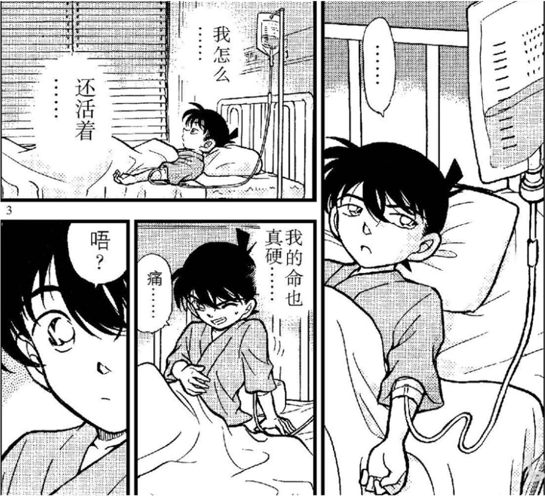
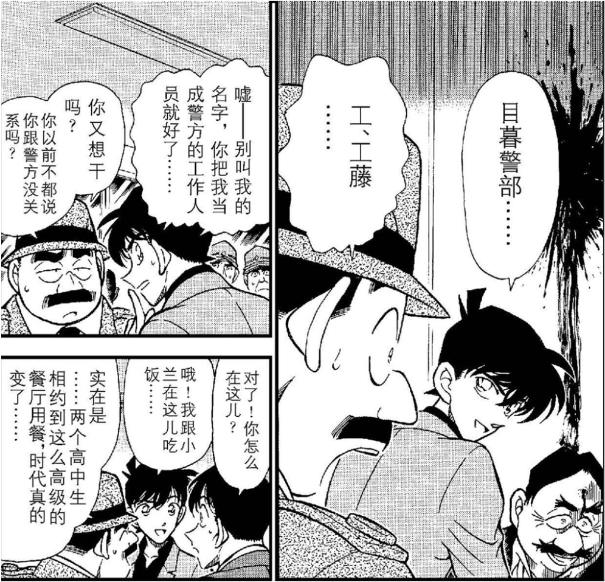
危命篇第二天的案件，新一相对来说就收敛了很多，甘愿作一个普通警员
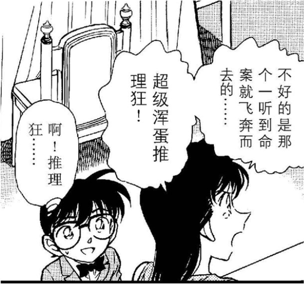
虽然柯南（新一）这里确实对小兰有愧，但是并不认为自己赶去推理破案是错误的5.1 毛利兰的复活
首先，回到毛利兰视角，我们对她了解多少？以危命的复活为界，可以粗略的区分出早期小兰和中晚期小兰，两者的直接区别是，早期小兰很大一部分思考是藏起来的，中晚期小兰的绝大部分思考（包括对新一身份的怀疑）都是展示给读者的，少数隐藏起来的思考也会在本系列末尾或下个系列迅速揭露（典型的例子就是天空树篇），完全隐匿的思考所占比例快速下降（例如水族馆篇为什么小兰要跟去）。
当然，随着短篇转长篇，小兰的人设确实有一些突兀的转折，相比起其他人物来不太好分析，不过我们这里姑且把这些人设视为一个整体，即小兰性格的不同面。那么早期小兰最重要的一次转折与思考，即是从“走投无路的名侦探”开始，到“危命的复活”结束，长达120话剧情内的新兰身份梗剧情（详细梳理见本文附录部分）
而在“走投无路的名侦探”之前、故事最初的一百余话剧情中，小兰的形象则称为“摇摆期”，也是角色性格浮动最剧烈的时期。以多罗碧加新一失踪为原点，最初的一周内，小兰最关心的是新一的生命安全（她还记得一起坐云霄飞车的两个黑衣男子），第一卷末尾，小兰接到了新一的报平安电话，从此没有再在这个方面继续思考。
在摇摆期中，有时小兰会怀疑新一失踪是去和其他女孩卿卿我我了（职业足球选手恐吓事件），有时会怀疑新一是在故意不想见她（卡拉OK事件），也会像普通高中女孩一样喜欢出游、为能见到明星或帅哥而欣喜。在变小之后不久，小兰也怀疑过柯南的身份（每月一件礼物事件），阿笠博士帮忙遮掩过去之后。也就看似放下了这件事，没带有太多心理负担。
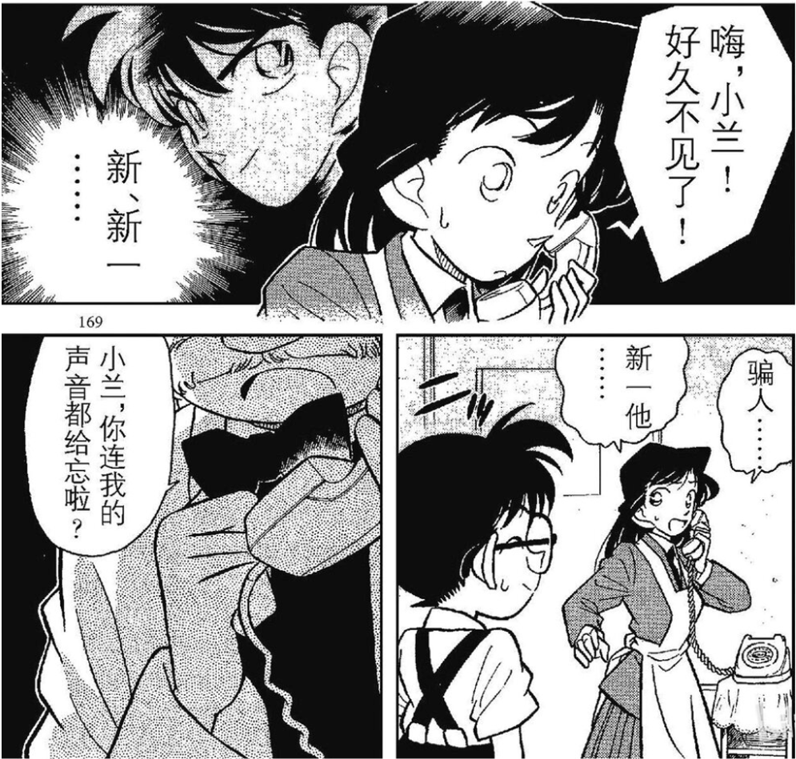
5.2 毛利兰的复活
转折点在服部平次初登场的外交官杀人事件。平次点出了新一电话中的疑点【没有过问小兰的事情→其实就在小兰附近关注着她】，而这一案中由于意外，工藤新一临时变大，并与小兰进行了短暂的交流。针对平次替小兰提出的那个问题，新一回复【都是柯南告诉他的】，并试图以【只要听到小兰的声音就知道她过得好不好】糊弄过去。小兰本身没有接这个话茬，看到身体不适的新一，转而去叫医生，但是，最后只看到了蜷缩在大人衣服内的柯南。下一个案件中，服部凭借这些信息推理出了【柯南=新一】，还威胁要告诉小兰。
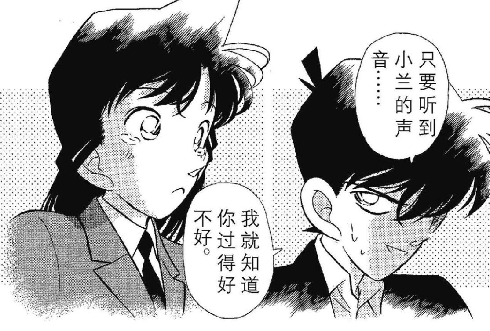
那么对于小兰来说，她真的相信【只要听到小兰的声音就知道她过得好不好】这句“情话”吗？她的所思所想没有展现给读者。几个事件后，她注意到了摘下眼镜的柯南和小时候的新一很像，凭借直觉认定【新一服用了奇怪的药变成了新一】，以及【阿笠博士是共犯】。但是，她还不知道新一这么做的理由，难道真的是为了捉弄她吗？她配合柯南解决了九十九元康案，拉着柯南避开了其他人，在落叶缤纷中发出了自己的质问。她想要听到怎样的回答呢？
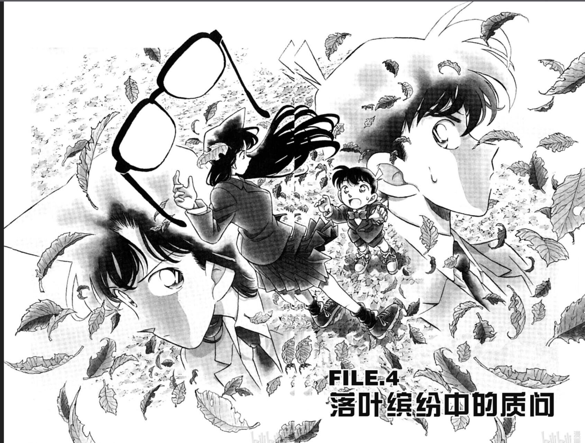
有希子的突然出现帮助柯南解了围，或者说，给了小兰一个台阶下。小兰露出了复杂的眼神与勉强的微笑。有希子给出的是证辞而非证据，并没有完全说服小兰。但足以让小兰明白，【新一不想告诉她这样做的理由】，以及【新一并没有瞒着他视为家人的人】。柯南去群马转了一圈回来之后，小兰借着柯南瞒着她外宿的事情对柯南发了一顿火，但还是装作不知道柯南的谎言。新兰身份梗暗线也就此展开。
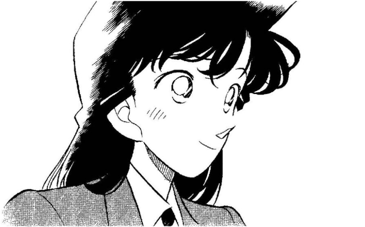
偏偏紧接着的“滑雪别墅案”，柯南和阿笠博士立刻犯下了错误，在电话中直接称呼“新一”这个名字。柯南借小兰之口破解了这个案件，揭穿了米原老师。案件结束，小兰对着柯南呼喊“新一”这个名字，伏在他的肩头痛哭。这个案件和之前连续发生的“暗夜男爵案”“六月新娘案”相互照应。总体上而言，小兰是一个感性大于理性的女孩，对于亲近之人遭受到的不幸（无论是成为嫌疑人还是被害人）都会产生巨大的心理压力。而由于家庭环境的原因，这种心理压力并不能向父母倾诉。在过去十三年的生活中，似乎只有新一是最能理解她的人。小兰承认新一是一个强大的人，不仅是推理水平的强大，更重要的是精神上的坚韧。她不喜欢整天碰到尸体的侦探生涯，但又向往着新一那种强大的、似乎无所不能的灵魂。每每遇到这种悲剧事件的时候，都在心底呼喊，要是新一在身边就好了。
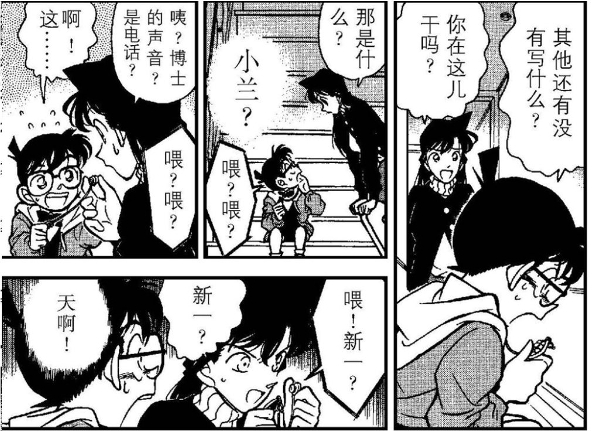
之后的一段时间内，小兰暂时停止了思考【新一瞒着她的理由】，在日常事件中会不着痕迹地帮一下柯南、甚至替柯南打一打掩护。“他这么做一定有他自己的理由的吧？”小兰也许会这样想，毕竟柯南（新一）一直在她的身边，在她难过的时候，想到这个也会打起精神来。
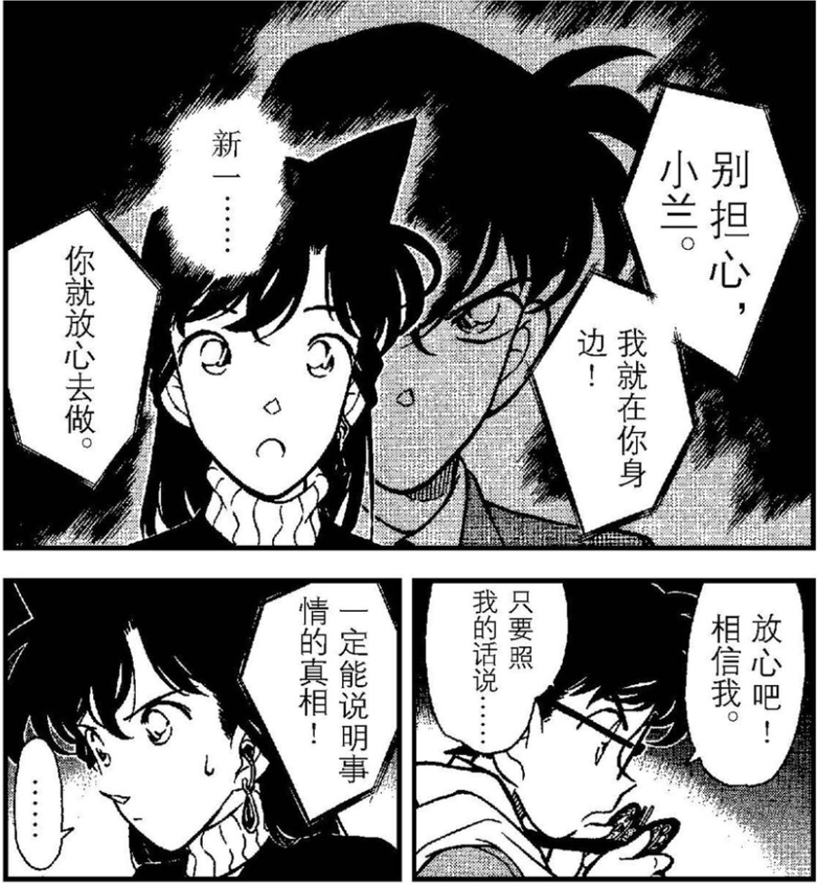
对比暗夜男爵和滑雪别墅两篇可以发现一些异同：对于亲近之人遭遇的不幸，小兰会积累巨大的心理压力，而没有其他人可以倾诉。这时她会将新一视为精神支柱。在认定【柯南=新一】的那段时间，她知道新一就在身边守护着她，可以和柯南分享她的悲伤，相对而言，小兰的精神状态就更好一点。5.3 毛利兰的复活
但是，如果【新一不是只属于她一个人的】呢？小兰不敢思考这种可能，却又总是忍不住这样想。
“漆黑之星”“初恋情人”“飞天密室”给了她情绪上的三连击。“漆黑之星”篇，她在涩谷街头看见“新一”和另一个女孩走在一起，拼命地呼喊却没有得到回应。冷静下来之后，小兰回到事务所说起了这件事，并白了柯南一眼。“初恋情人”篇，小兰意识到，虽然是青梅竹马，但新一也有很多她不知道的地方。“飞天密室”篇，小兰发现柯南（新一）身边多了一个可爱的女孩子，但柯南却从来没有和小兰提起过这件事。回想起前段时间柯南唐突打电话说要在阿笠博士家“外宿”一晚，就像走投无路的名侦探篇那样。小兰究竟想到了什么呢？我们只看到，她回忆起了一年前的美国之行（我们后来知道，这是新一独立破案的起点、以及小兰喜欢上新一的起点）。
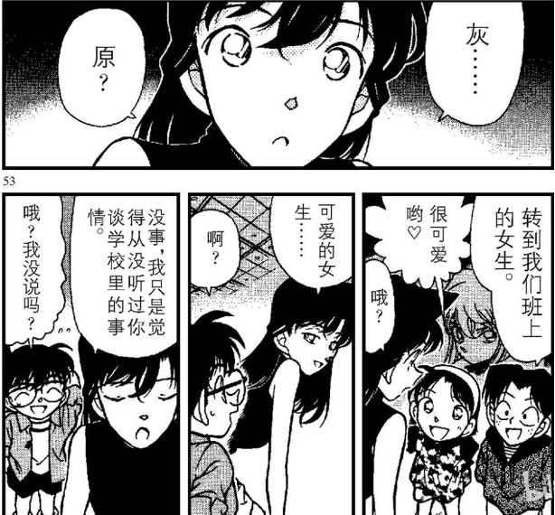
小兰并不认为自己有着让新一着迷的魔力，并不认为自己是独一无二的。在伊豆，面对园子的调侃，小兰半是害羞、半是不自信，甚至口不择言开始问柯南的想法，当然，她没办法得到回应。登上新佛尼号时，小兰在想，“大海真棒，能忘却所有的不如意”。哪些不如意呢？在月夜，小兰忍不住开口对柯南说【求求你，别让我一个人……】。也是因为她在这段关系中的不自信和茫然无措，让小兰变得更热衷关心其他人的感情问题，想要模仿对方的成功经验。少年冒险中，小兰因为父母之间互称名字很亲昵，就迫切地希望新一也能直呼她的名字。浪花篇，小兰自来熟地询问和叶护身符的故事，反而让和叶有些不爽。
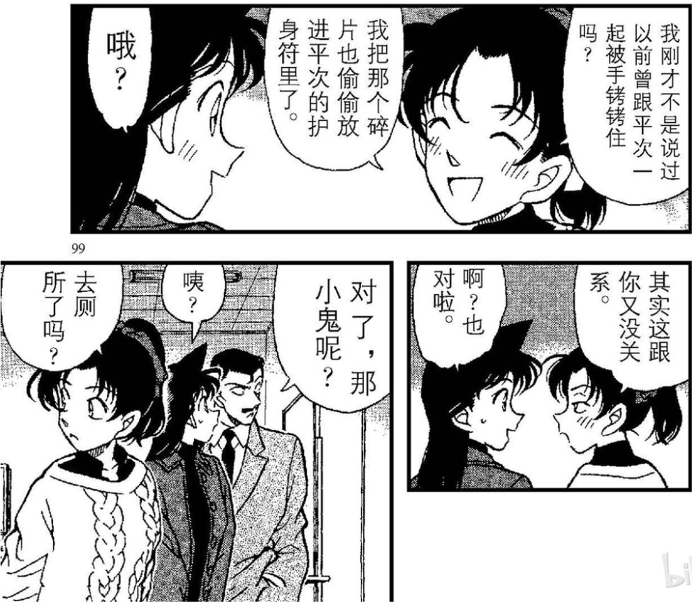
因此，在这种焦虑状态下，她决定做些什么。小兰先想到了互换礼物、传递心意。死角篇开头提到，小兰有一段时间沉迷织毛衣，那段时间她过得充实又开心。在妃英理的指导下，她学会织复杂的图样，还特地跟新出医生借来毛衣进行参考。最后假装托付给阿笠博士，把毛衣送到了新一手上。更令她惊喜的是，她只是稍微念叨了一下手机的事情，柯南就真的听了进去，送给她一部手机作为回礼。手机是新兰关系的一个重要标志，代表他们的联系更方便了一点、距离似乎更近了一点。
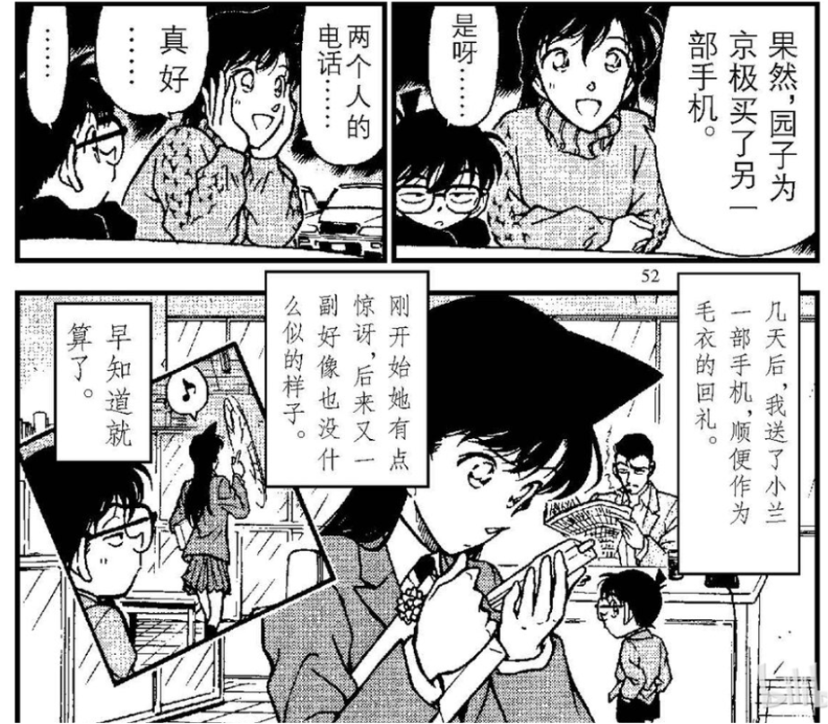
这也是小兰确信【柯南=新一】的实质性证据。鸟取蜘蛛篇，手机上的吉祥物不小心丢了，和叶陪她找的时候羡慕地说那一定是工藤送的吉祥物，小兰也回应道【新一并不冷淡，而且似乎随时守护在她身边】。可仅仅在这之后不久，因为柯南调查线索时直接掀开了和叶的被子，还狡辩“我是小孩子嘛”，让她又陷入了不爽的情绪中。结尾处，武田智惠选择向两个孙女隐瞒真相，小兰露出了理解、却又有一点点勉强的表情（引得和叶侧目）。

2023-12-04 23:19 | 猫兔💕:好细，最后一张图缩小看是感觉小兰瞪平次，但放大看又感觉在瞪小柯，视线好像往下了一点点
5.4 毛利兰的复活
这也是因为，【新一不愿意说为什么要瞒着她】、以及【新一可能不是只属于她一个人的】这两朵阴云一直笼罩在她的心头。尤其是在鸟取目睹了这样一场爱情悲剧之后，更加重了她的这种焦虑感。这驱使着她做出了一个令利智昏的决定：试探柯南会不会因为她而吃醋。
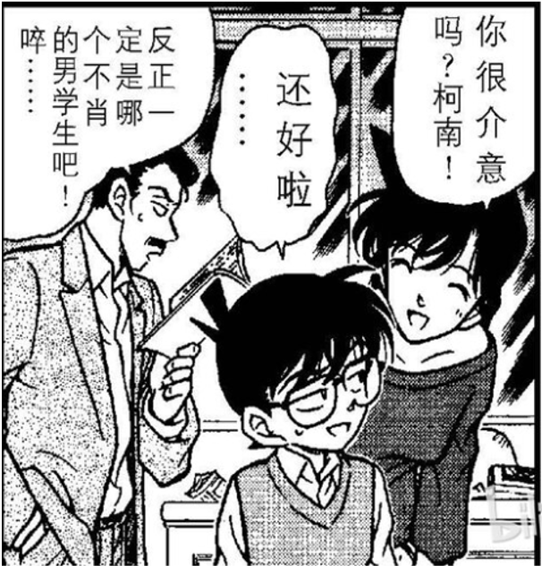
在事务所排练舞台剧的时候，小兰动了一点女孩子的小心思，在柯南面前假装说新出智明会扮演骑士；看到了柯南焦急的表情后，她感到了一阵安心、甚至有些抑制不住的喜悦。在柯南遇袭之后，小兰不假思索地为他输血，【柯南=新一】对于她来说，似乎已经是一个无需验证的话题了。在小兰的理解下，柯南就是隐藏在她身边的骑士，只要她继续维持着这样心照不宣的状态，等到将来的某一天柯南（新一）一定会告诉她这个谜题的答案。而她相信她能接受新一的解释，能接受新一过去的油嘴滑舌甚至欺骗。如果新一不愿意给她这个答案，她就不问。不过，她的这份高涨的情绪在遇到地下室里的女孩时遭到了打击。柯南试图阻拦她，而那个小女孩似乎也在拒绝她。前方不是应属于小兰的领域。那个女孩就是新一的秘密吗？她知道新一的身份吗？新一也在守护着她吗？在坚信【柯南=新一】的同时，她的内心开始胡思乱想，以至于继续迈出了更危险的下一步：【真的答应与新出智明共同出演男女主角，并刻意邀请柯南来做观众】
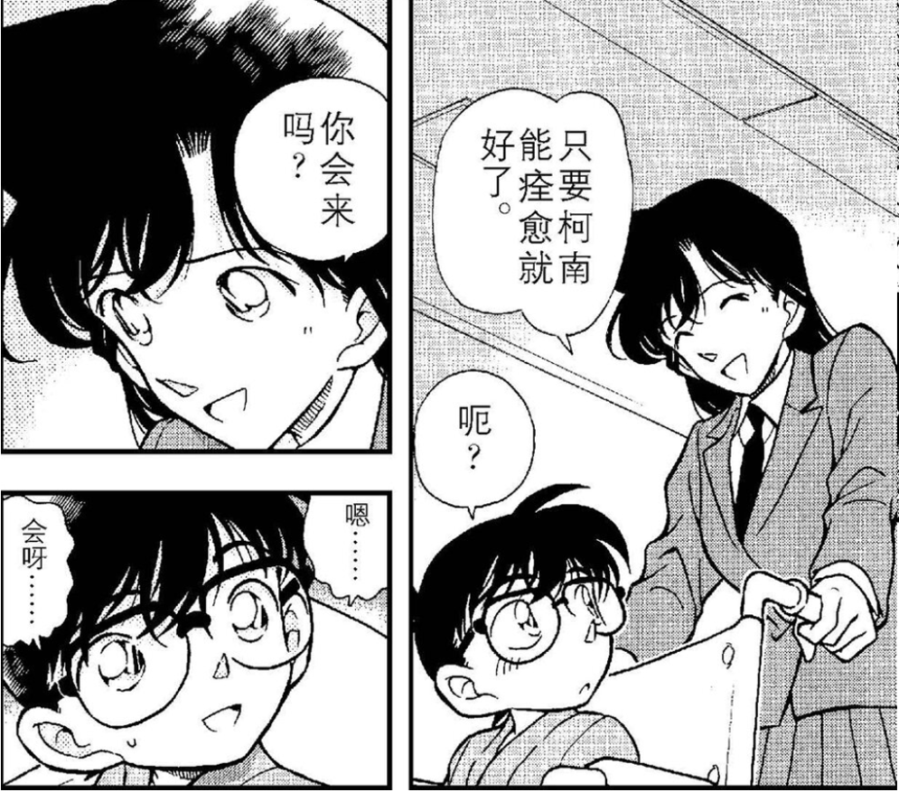
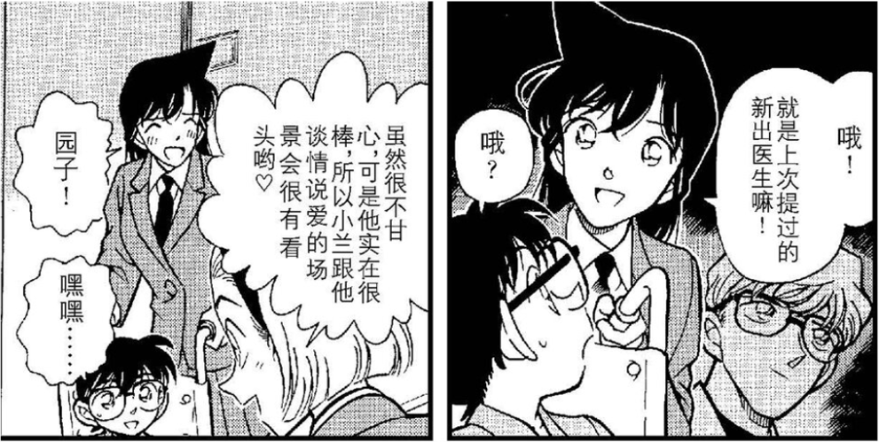
她是希望柯南露出怎样的表情呢？又或者是希望柯南开口来阻止她？也许她自己都已经弄不清了。她浑浑噩噩般出演了舞台剧，并惊喜地发现，工藤新一真的回应了她的期待，在最闪耀的舞台上浪漫现身。
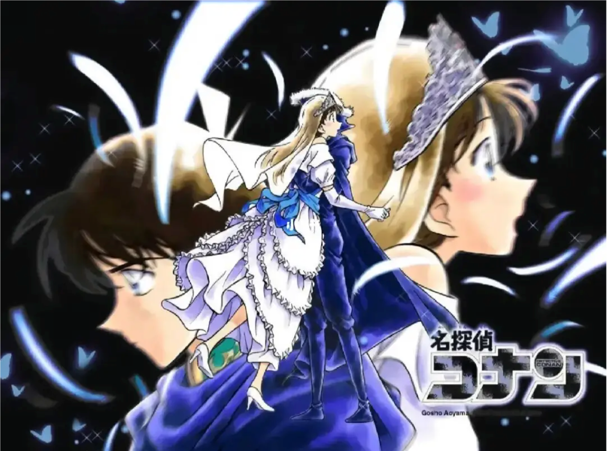
尽管她同样看到了【新柯同框】的事实，好像显得她之前心中的种种纠结都很可笑。不过也无所谓了，新一真的回来了。她努力不去想新一可能会再次离开的事情。上学路上，旁敲侧击地问新一，他对舞台剧女主角红桃公主是怎样想的。新一郑重其事的邀约更让她感到意外。从新一的表情、服务生的调笑等等迹象，小兰隐约感受到，新一可能要向自己表白了。她努力用“借笔记”“吃胖”之类的想法填充大脑、降低期望，等待新一的行动。新一向她许诺，【马上就回来】。再等一下就好，他会告诉自己的，哪怕只有一部分真相。
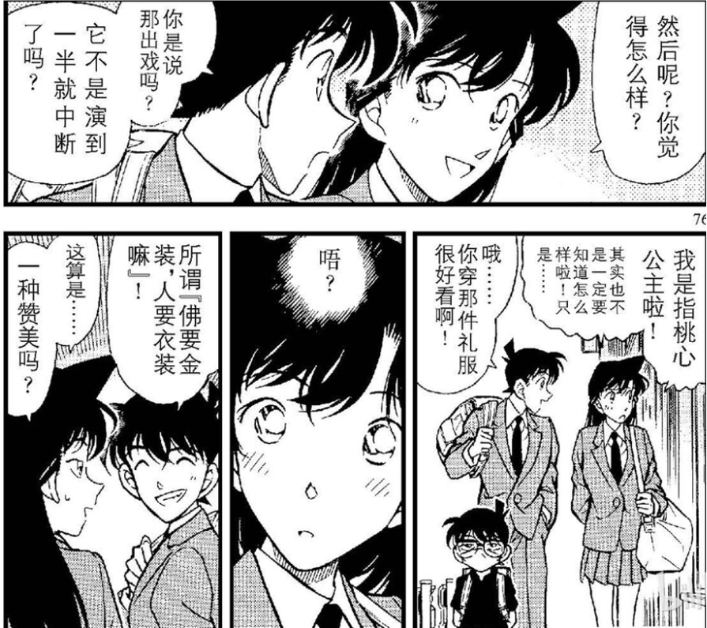
2023-12-31 23:31 | 柒时一🌌:这里的推理好棒啊！人物行为得到了完美解释
5.5 毛利兰的复活
然后，她等到了新一不告而别的消息。她捂着耳朵，不愿意再听柯南的辩解。哪怕柯南代为说出了【即使是死也要回来，无论如何一定要等她】的诺言，小兰也没有接受。从【只要听到小兰的声音就知道她过得好不好】到【即使是死也要回来】，她听过了太多太多虚浮的话语了。如果柯南不是新一，那【新一在身边守护着她】，只不过是她自己的臆想而已。新一对小兰的喜欢，也许超过了其他人对小兰的喜欢；但在新一的内心，对她的这种喜欢，能不能排到No.1呢？
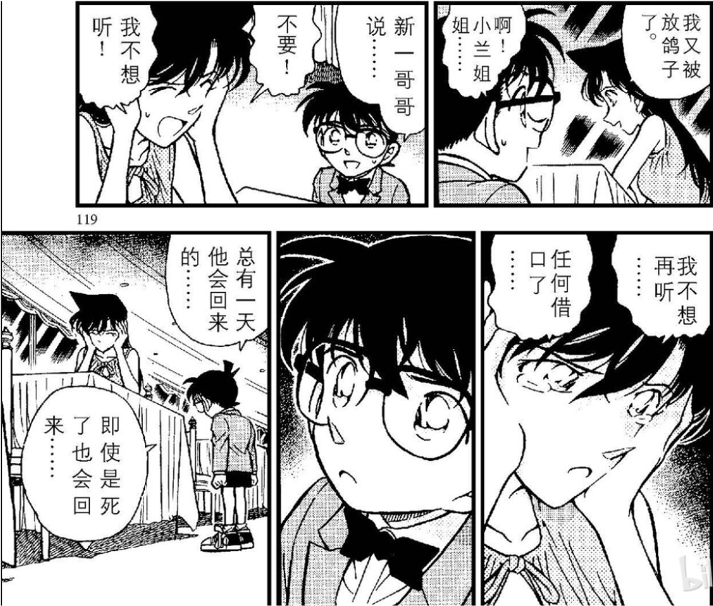
这幕哭泣宣告了身份梗暗线的终结，以及早期小兰的杀青。在感情方面，她对新一的不信任感进一步上升了，满月篇、基尔篇期间两次想象新一和美艳寡妇或成熟女郎榻上厮混的样子。她对柯南的怀疑也没有结束，奇妙一家的委托篇再次产生疑心时也没有了危命篇的这种耐心。最后安抚住她情绪的是两点，一是新一终于舍得把电话号码给小兰，让小兰有了主动联系新一的能力；二是不小心撞破柯南喜欢小哀的小心思，心中略生了一些歉意。再往后几次意外抛出的身份梗剧目已经不再成线。而且，最明显的区别是，中晚期小兰会把她浅浅怀疑的心思放在明面上，而把柯南应对的思路隐在暗处。
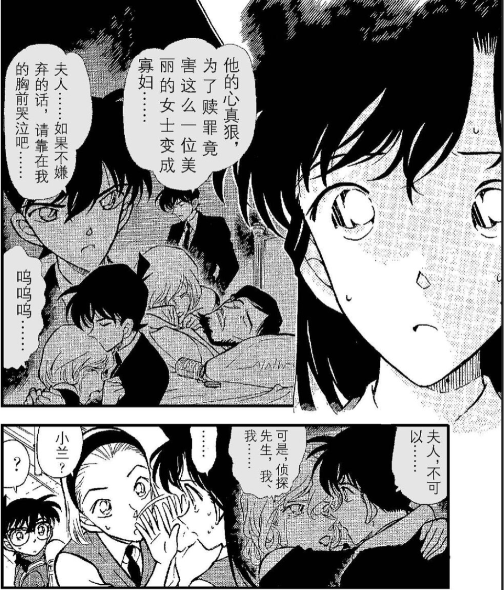
说到底，早期小兰对新一的期盼是【能够随时守护在她身边】。这种守护，不仅仅是物理意义上的陪伴（这一点柯南其实做到了），更是精神意义上的依靠（在乎她、守护她、听她倾诉）。哪怕内心中已经认可【柯南=新一】，也会在电话中数次请求“赶快回来吧”。在这种期盼下，她最终使用了试探感情的方法，求得了危命篇的一场大戏。但是，新一选择了侦探之路，他可以是关键时刻冲锋陷阵的骑士，勉强可以做日常生活实时守卫的侍从，却很难做为王子、与高塔中的公主长相厮守。那小兰有机会迈出高塔吗？本堂瑛佑的例子证明，只要做好了这种心理准备，是可以冲出别人建造的安全屋的，即便不能留在身边，也可以用自己的方式、走自己的路，为对方做出自己的贡献。
而危命篇之后，中晚期小兰的选择是，减轻自己内心的负担、不做多余的努力；像等待神启一样，等待新一的降福。就像是基督教的传说一样，圣徒死而复活，彻底接受了主的洗礼，不再自我思考，而是努力以神明为中心，思考神明的教诲。
6.1 工藤新一的复活
最初变小时，新一对自己的新身份并不习惯。别人称呼柯南时会意识不到其实是在喊他，自称名字的时候会差点说漏嘴是工藤新一。广田雅美案之后，柯南开始慢慢熟悉起了小孩子的身份。但是，他依然十分渴望回归到工藤新一的身份中去、重新沐浴在阳光之下。
外交官-图书馆篇，柯南偶然得知了白干儿可以解除变小状态。以为从此可以回归新一之身，所以与三小只做了郑重其事的告别。然后却又因希望的破灭和酒精的麻痹陷入了深深的苦闷之中。那时的他无疑是想快速回归本体的，新干线篇以及之后的几个篇章，甚至都是抱着偷一颗A药的心态来与组织接触（类比后来的世良母女，但是更加莽撞），怎么也不可能想到，半年多之后自己能忍住冲动，藏下一颗A药解药不再服用。
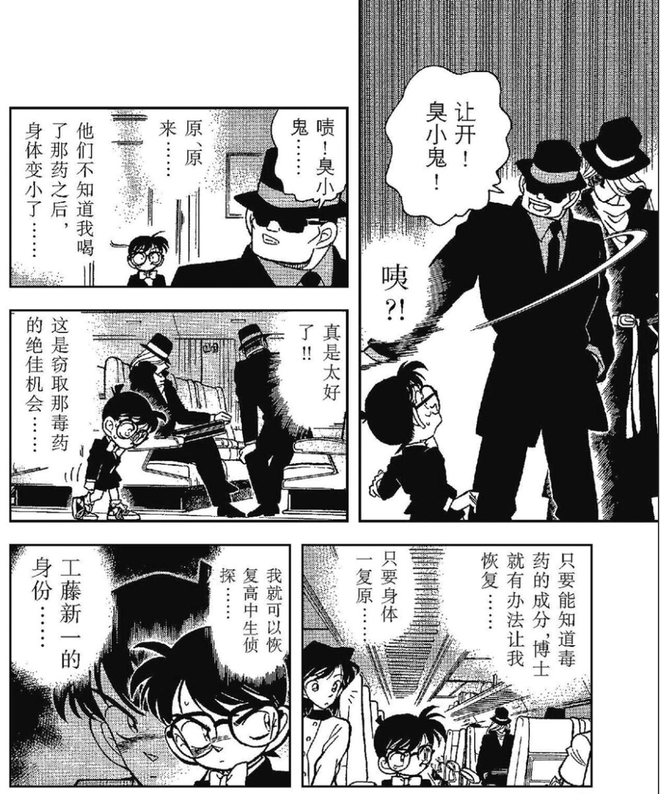
在柯南一开始看来，【恢复真身】和【与组织对抗】是两件事，而且【恢复真身】更重要、更优先，解决组织最终也是为了恢复真身。不过，在遇见小哀之间，他的这种急躁可谓毫无头绪。新干线、游戏公司都是偶然遇到，然后跟丢线索。所谓的黑衣组织，始终在迷雾的笼罩之中。从最理性的角度讲，接受工藤夫妇的保护，借用ICPO的力量开展调查无疑是更有效的解题方式。但是，那时的柯南还极度犹疑，不愿意离开事务所、离开米花。某种意义上说，新一确实是一个恋旧到抗拒变化的少年。他期待的是一种【“不变”的“变”】；所以一方面不喜欢平淡乏味的日常生活、向往充满谜团的侦探生涯；另一方面又不愿意彻底脱离平淡乏味的日常、留恋充满宁静与小确幸的高中生岁月。高中生侦探这一行完美符合了他的理想生活，在外面经历风风雨雨，回到校园又能打打闹闹。从第二集开始，他本来应该与这种生活无缘了，但又借助了阿笠博士的力量，在日常的边缘挣扎，心心念念着重回旧时光。而在失去了高中生身份后，小兰就是这种过去岁月最大的锚定点。
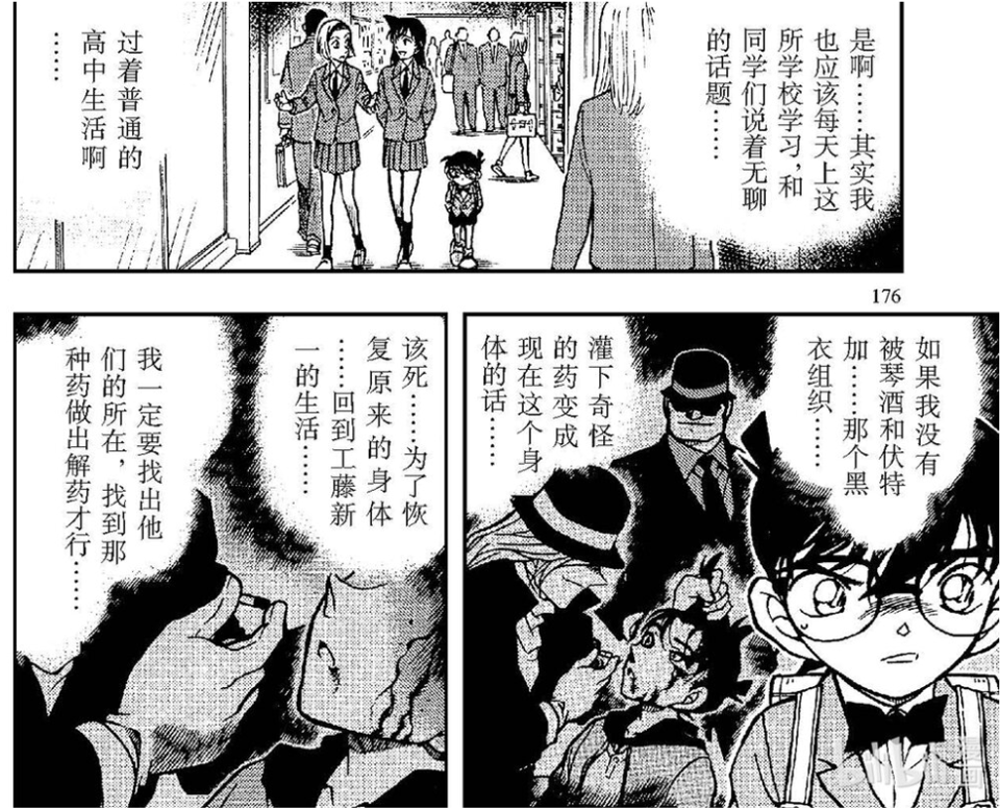
6.2 工藤新一的复活
多罗碧加那一夜分开之后，新一和小兰的命运也随着分叉。小兰本身就更向往安宁平淡的日常生活，不看好侦探这一行，那天下午他们才刚刚因为此事斗过嘴。在这种情况下，柯南（新一）既不愿开口向小兰求助、又不愿将小兰这个“局外人”牵扯进自己的危机中，扰乱原属于她的日常生活；甚至于说，在柯南迟迟无法回归旧日的情况下，让小兰停留在日常中，守望着她，也能缓解柯南内心的焦虑。
所以，在第2话中，对组织威胁还没有直观认识的柯南（新一），先一步决定要【隐瞒小兰】，住进事务所一方面可以伺机探听组织信息，一方面可以就近守望小兰。而为了这一目的，才选择了【扮演柯南】这个角色。现在，让我们试想一种可能，假设新一没有变小但还是活了下来，故事的发展会有怎样的变化？活下来的工藤新一会联系目暮警部，提供部分信息后被转接到负责黑衣组织事务的黑田兵卫处（假设不考虑警界内鬼的影响）。经过了一番折腾之后，新一还是要面对一个问题，【黑衣组织一时半会儿无法被击败】+【组织视角下，发现新一还活着，就会灭口知情者】，他同样无法回到高中生日常中了（为公共利益负责的情况下，黑田兵卫也不能允许他这样做），【工藤新一的名字还是要从大众视野中抹去】，哪怕对方是足够亲近的人，也不能透露这个消息。漫画中是有类似的例子的，也即同样是青梅竹马的诸伏景光和山村操。除非，新一能立刻下决定，为小兰的未来负责，带着毛利一家也一同脱离日常隐匿起来。不过，新出智明可以对保本光的人生负责，十六七岁的新一却很难为小兰的人生负责。
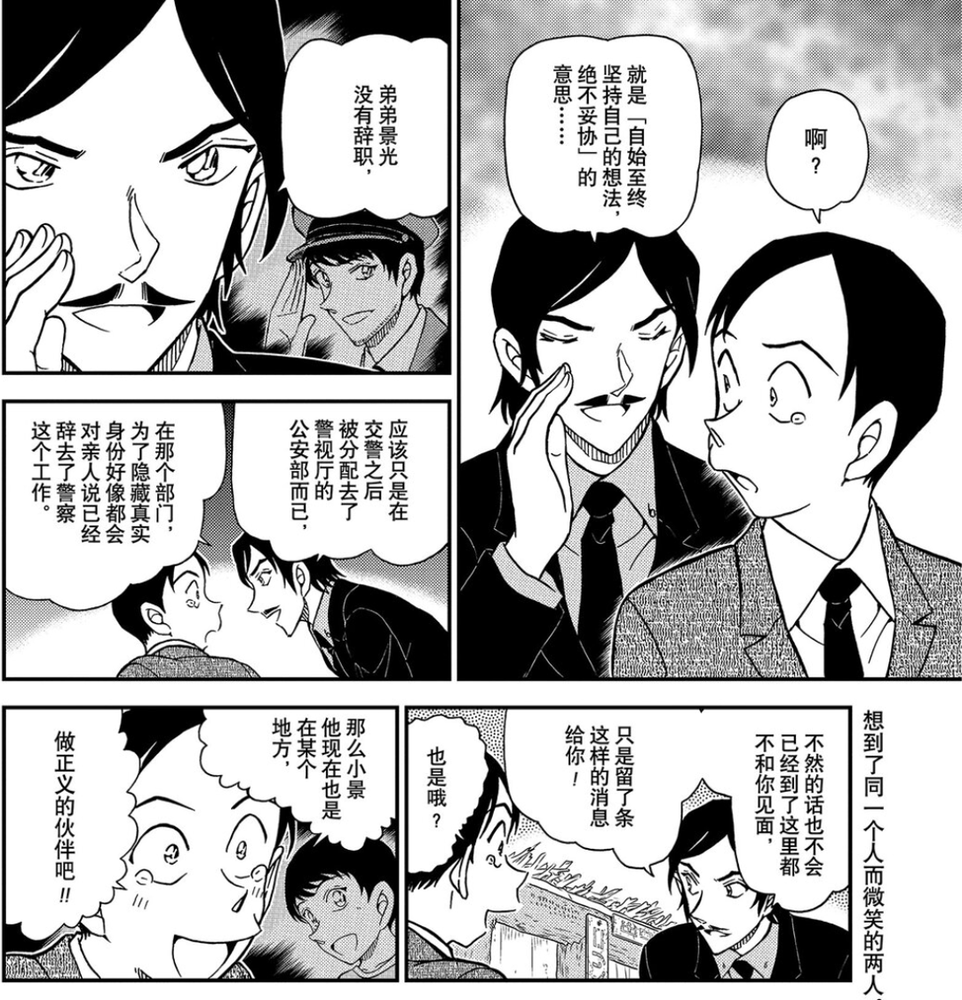
既然【工藤新一必须隐匿】是因为惹上了黑衣组织的缘故，那从这个角度来看，变小其实是一件好事。因为组织成员也通常不会想到大人变小这种奇幻的事情，加上小孩子目标小，不会惹人注目，反而可以【在小兰的身边就近隐匿】。后续柯南又数次暴露在Gin的视线中，但都是因为小孩子相貌的缘故，没有被刻意针对，数次死里逃生。换言之，构成名柯【身份梗】的三大核心要素，【工藤新一必须隐匿】【新一决定隐瞒小兰】以及【扮演柯南这个角色可以在小兰身边就近隐匿】，其实和A药都没有直接关系。哪怕新一没有变小，也最多只能像是冲矢昴那样换一张脸生活在小兰附近。而【身份梗】的另外两大影响，【柯南不能向小兰表达自己的心意】【柯南回不到高中生生活】，其实是在做出了隐瞒决定后，随着隐瞒时间的增长以及一些意外事件的影响而产生的感性动摇。而“主线”剧情的发展，其实也在削弱着柯南（新一）的这种感性动摇。因为“柯南”逐渐有了自己的人际关系，逐渐成为了一个社会学意义上，与“新一”不同的个体。他开始慢慢习惯于作为江户川柯南而存在，习惯了扮演毛利家的小弟弟、少年侦探团的领风者。
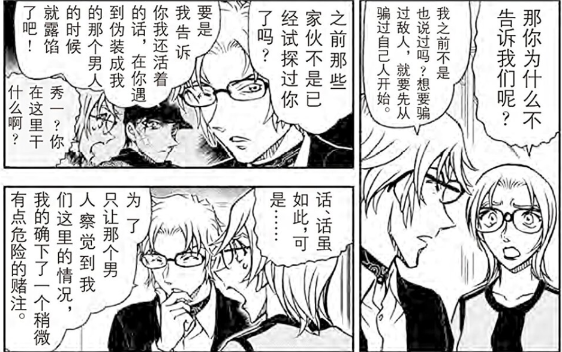
6.3 工藤新一的复活
“眼镜”成为了维系【身份梗】的一个象征。走投无路的名侦探一篇中，口不择言的柯南自称“不戴眼镜会很没有安全感”。为什么？游戏公司案让柯南见识到了组织的谜团重重与果断狠毒，一旦身份被组织看破，他也会成为火焰中的一片灰烬；而一旦身份被小兰看破，这种他刚刚开始喜欢上的平静日常也会被打破，甚至会把小兰以及其他人也牵连进这个悲剧的漩涡当中（他们不能变小，在组织的视野中比柯南目标更大）。【身份梗】开始折磨着柯南（新一），而他在变小之后才理清的对小兰的感情，更是加剧了他的这种心理负担。
是的，新一会说，自己从四岁见到小兰的第一眼就开始喜欢小兰了，但是，过去的十三年中，他从来没有表达过这份心意；也是从四岁开始，好奇心就占据了他的内心的绝大多数空间，他总是孜孜不倦地拿福尔摩斯系列向小兰传教，却鲜少得到小兰的回应。随着年龄的增长，他和小兰之间的分歧愈加明显，小兰直言不看好侦探这一职业，还是很让新一有挫败感的。他甚至自己都在怀疑，小兰是不是不喜欢他。反而是在变小之后，他才以柯南的身份探听到了小兰的部分心声。可是这时，他已经永远错过了过去十三年遍地都是的机会了。
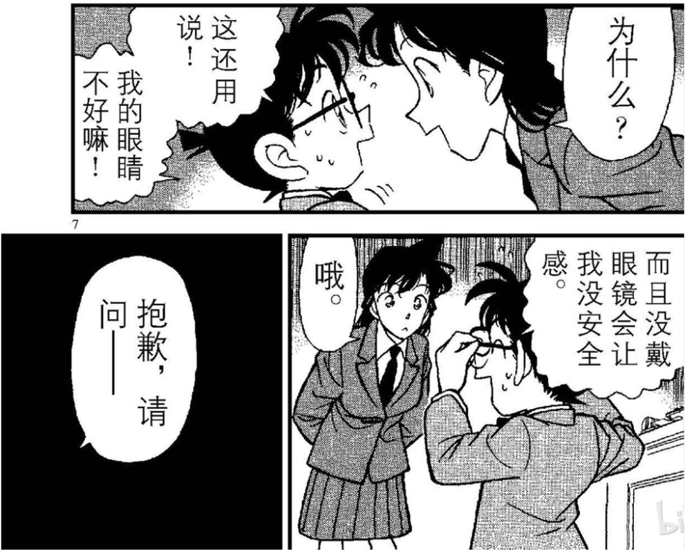
小兰是从纽约篇开始喜欢上新一的，但新一视角却并不了解，也不知道小兰喜欢的是自己的哪一点。所以，在变小后，柯南几次看到她和其他男孩子走得很近的时候，心中都充满了焦躁不安的感觉。如果【黑衣组织一时半会儿无法被击败】，是不是还有其他人可以替代自己在小兰心中的位置，【小兰真的会等自己】吗？可冷静下来他又能明白，如果自己真的变不回去（回不到新一的身体、或者回不到高中生的日常），他更不应该让小兰等自己。这种对于未来的不确定感，以及对小兰喜怒无常的担忧，无疑加剧了他的心理内耗。而既然过去十三年新一都没有和小兰沟通过这些问题，变小后的柯南更抗拒选择与小兰沟通这条路。工藤夫妇指出了柯南的问题，小看女孩子以后可以要吃大亏的（而他们的选择也是打算让柯南自己吃个亏长长记性）。柯南并没有听进去，某种程度上，他确实有些看轻小兰，有意无意忽视了小兰的变化，以至于让他再次错过了另一个不可重现的机会了。
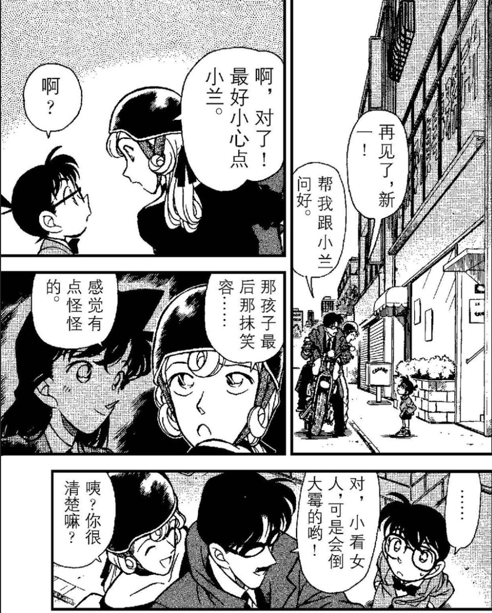
6.4 工藤新一的复活
再会篇，江户川柯南凑巧遇到了Gin一行。他习惯性采用了前几次用过的方法莽了上去，想偷一颗A药，却未曾想，这是Gin设下的钓鱼陷阱。这时他才明白，组织之前没针对他，是把工藤新一当成了死人；而在追杀叛逃者灰原哀的过程中，组织会毫不犹豫地显露出锋利的獠牙。柯南（新一）确实很盼望拿到A药，拿回自己的身份，向小兰袒露心意。但如果代价是灰原哀的命，他是绝对接受不了的。在一团乱麻中，他打断试图托孤的灰原哀，点燃酒窖后问都没问一句A药资料的事情，背起小哀后狼狈地逃跑了。
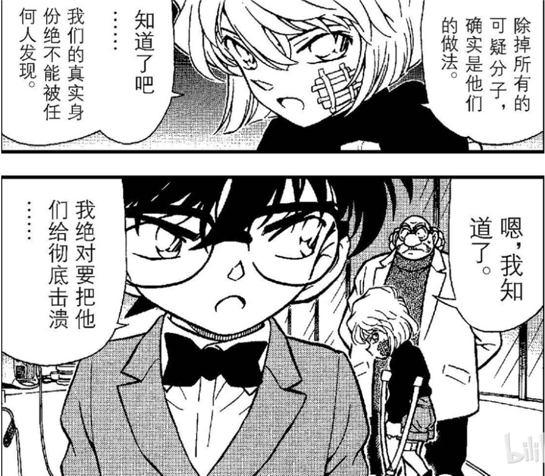
这是他做出的选择，柯南（新一）并不后悔，但是也陷入到了一段时间低沉的情绪中。Pisco和吞口重彦被灭门，警方什么都没做到，杯户酒店有没有柯南，结局都没有任何变化，而他的行动甚至反过来牵连了小哀；这让他感受到了侦探的无力与组织的深不可测。在滑冰场，他尝试过在小兰面前再藏一下身份，但那样抑制自己对谜团的追求也很痛苦，最终他不但没能继续隐藏自己，还选择给小兰送了一部手机，看似是在拉进两人的距离，其实是说明，他自己也隐约感受到，在小兰面前很难再藏下去了。更让他雪上加霜的是，那段时间，小兰和新出走得很近；虽然事后得知小兰放学后其实是在织毛衣，而不是真的和新出混在一起。但是，新出智明的形象还是给了他很大的压力。新出温柔、善良、事业稳定，刚好能满足小兰对平淡日常生活的向往，和工藤新一完全相反，更何况当前的他只是一个劣化版的柯南，连向小兰表达心意都做不到。他赌气似的把小兰送的毛衣松松垮垮地套在身上，气得也许是小兰前段时间不太理自己，又或者是和新出医生之间没有一点距离感意识。在鸟取见证了一幕爱情悲剧与婚姻悲剧后，更加重了柯南（新一）的精神负担；原来只要短短三年、甚至是一句话的错过，就能让一切都物是人非。
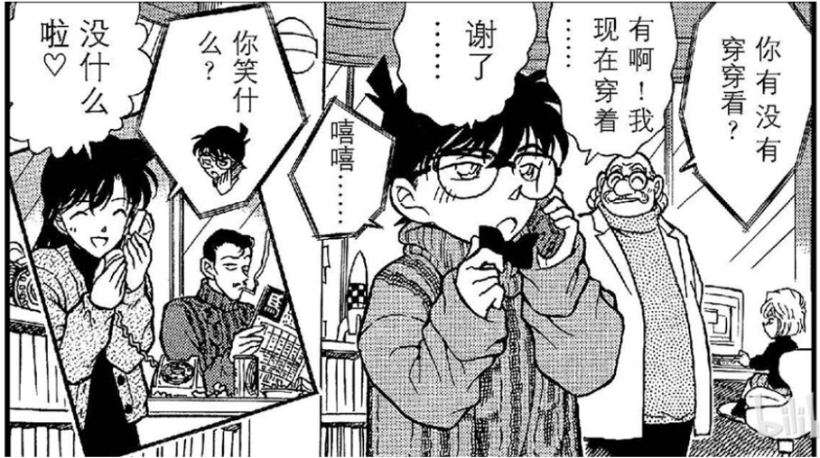
于是，他就这样在组织与小兰的双重重压下走上了危命篇的舞台，并且开局就挨了一枪。醒来之后，又得知了小兰为他献血，小兰知道柯南的血型和新一相同，小兰说她要和新出智明出演舞台剧、邀请自己一起去看。这些信息量压垮了他的大脑。【小兰为什么要这样做？】他是真的不明白、要等平次来点醒吗？不是的，他只是不敢相信这个答案，【小兰在等着他主动和她坦白】。【为什么不能告诉小兰？】他是真的不明白、要等小哀来点醒吗？不是的，他只是不敢想象那样的未来。毕竟他自己就刚刚因为撞破了犯罪的秘密挨了一枪，黑衣组织只会比劫匪更加狠毒。在焚尽一切的黑色火焰面前，小兰并不比Pisco、吞口重彦更加坚韧。他只是抱着侥幸的心态想，能以新一的身份和小兰见一面就好，一面就好。
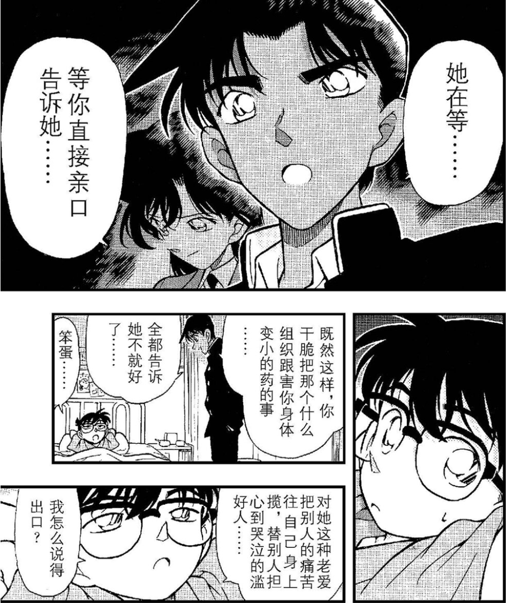
6.5 工藤新一的复活
在小哀的帮助下，他没有真的留下遗憾。他答应好私下和小兰见一面，打消小兰的怀疑，就像是每月一件礼物事件中和阿笠博士配合的那样。这次见面，既是为了安抚小兰的情绪，也是缓解柯南（新一）自己的焦虑。但是，鬼使神差地，新一套上了黑衣骑士的面具，试图与小兰接吻，又被意外打断。而小兰两次称呼黑衣骑士为“医生（新出）”反而将他的焦虑推上了巅峰。
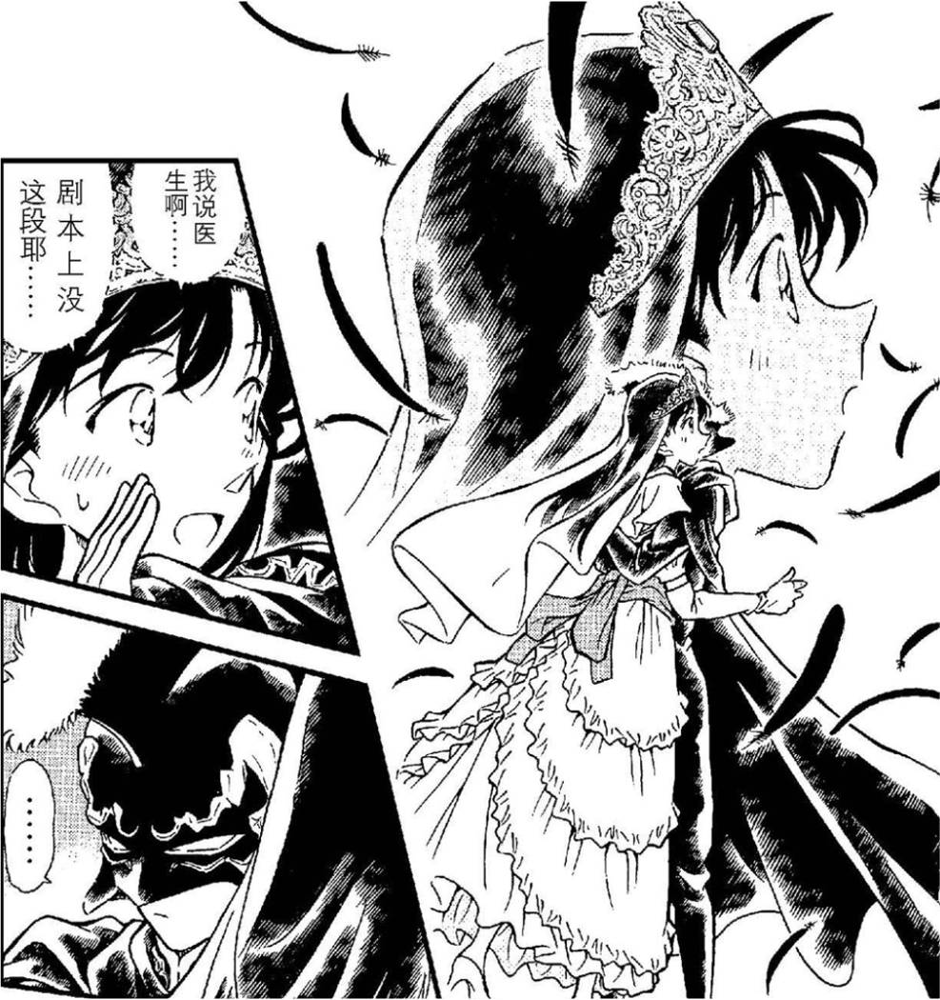
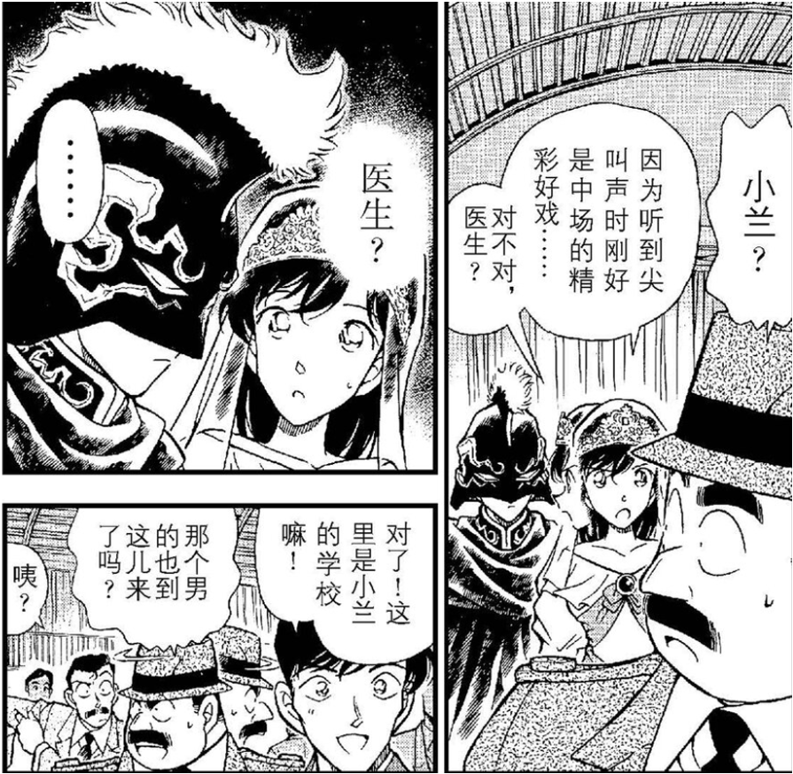
他再也忍不住了，摘下了自己的面具，呼吸着自由的空气，在众星捧月之下华丽登场，一瞬间忘记了身上背负的重重锁链。“真离谱，怎么会有人因为药物的药效不同就杀人？”也许他还能这样麻痹一下自己。他在重重焦虑之下，下意识地模仿自己听来的父母爱情故事，临时决定把小兰约到了米花酒店的瞭望餐厅。
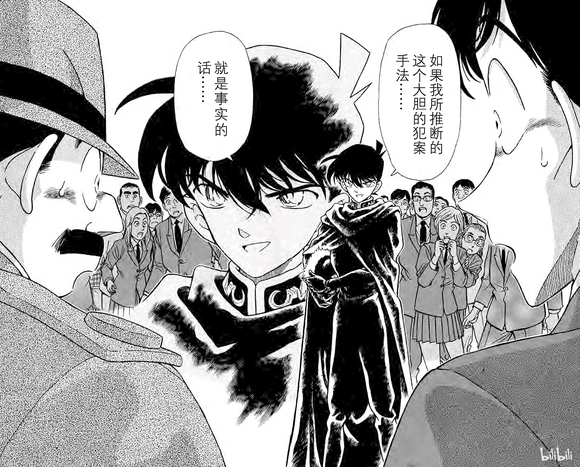
他想要做什么？也许是表白，也许是在读者没看到的地方藏了一枚戒指准备求婚，也许是想和小兰敞开心扉、互诉衷肠，也许他的脑中只是一团乱麻。读者看到的是，哪怕坐到了餐桌前，新一依然在说着福尔摩斯的事情。他并没有摆脱这种焦虑，反而因为心中高悬的变小倒计时而不知所言，下意识地复读着变小前他和小兰啰嗦过很多遍的台词。小兰出奇的包容更让他精神紧张。最后，案件发生了，他逃也似的赶往了案发现场。“哦，怎么又是一场爱情悲剧”，新一解决掉事件后，时间刚好用尽。他在苦闷至极的情绪下，又变回了江户川柯南。看着哭泣破防的小兰，他还是把【要等我】的话说出了口。就像是外交官杀人事件，他和小兰说【只要听到你的声音，就知道过得好不好】类似，这是他心中向往的理想爱情，也是他和小兰互相麻痹所用的现实谎言。于是他们各退一步回到了过去，小兰重新用“推理狂”一词抱怨新一，柯南也把不满深埋进心底。
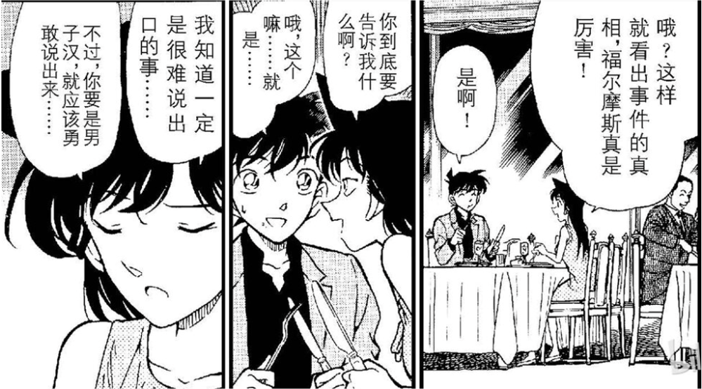
柯南也许会叹息一声，为什么自己的父母能够顺利走向婚姻的殿堂，而他自己却只有一团乱麻。不过总的来说，危命篇的最低目标达到了，工藤新一的身份被解放了出来。从八音盒篇开始，柯南在小兰面前解谜不再需要遮遮掩掩，他与警视厅几位警官的交往也愈加深入，开始熟练地扮演柯南和新一两个人。同时随着黑衣组织的步步紧逼，他也放下了心中的杂念，决定对小兰一瞒到底。而他的苦闷还没有消除，情人节巧克力事件后，还是会忍不住在小哀面前，暴露自己的软弱之处。虽然【危命的复活】在字面意义上指的是工藤新一的复活；不过，从某种意义上讲，工藤新一的故事也就此结束了，他再次错过了最后的机会；此后出现在世人面前的，更多是【江户川柯南所扮演的工藤新一】。而名侦探柯南的【身份梗】故事，则从“暴露危机”阶段，过渡到了“认同危机”阶段。
7.1 服部平次的复活
危命篇的平次承担了一部分搞笑役角色的功能，但绝对不能被称为笑话。平次两次来东京，其实是有一些可以说道的地方。
首先，平次第一次来东京是被阿笠博士叫来的。从前后剧情可以得知，这里阿笠博士和平次的第一次交往。在此之前，只有阿笠博士单方面知道平次这个人。他可能是在柯南昏迷之后从电话里摸到的联系方式（或者主动问了一下事务所的电话记录）。此时平次对博士的称呼还比较生疏，此后就快速熟络了起来。太阁之城篇平次找了博士帮忙、平次VS朱蒂篇又是博士叫来平次帮忙，两人的交往是独立于柯南/新一而存在的。
那么，作为这段关系的起点，博士为什么想要叫平次来东京？答案其实也比较明显，平次是少数知道柯南真身的人，在关键时刻能多一分助力都是好事。结合平次第二次来东京的剧情，可以猜测，博士原本的计划也许就是让平次戴着口罩变声器假扮工藤新一，但后来主要精力放在了小哀那个更完善的计划上了，没怎么管平次。平次自由发挥，但还是难掩关西腔的独特气质。不过，在新一昏迷后，平次以他自己的身份帮助控制了现场秩序，补足了小哀计划的缺漏之处，避免了消息的更进一步扩散，也发挥了很大的正面作用。
7.2 服部平次的复活
另外，从创作角度来讲，危命篇的平次起到的是镜子的作用，他和小哀一起照映出了柯南内心中纠结的两面，一方面读懂了小兰的期盼、心软想要放下这份欺瞒；另一方面，在生死线上走过一遭后，又害怕将危险带给小兰（以及身边的其他人）。最终，平次和小哀不约而同地选择了相似的方案，也正因为这其实是柯南自己会做出的决定；两位“新唯”读懂了柯南内心的呼喊，并决定以自己的方式全力支持柯南的决定。 平次的方案和小哀的方案有哪些差别呢？抛开技术细节不谈，本质上的区别在于，平次的方案中，“新一”是假的、是一个傀儡。如前所述，危命篇柯南需要解决的是两大问题【小兰怀疑柯南=新一】【小兰在以试探感情的方式等待柯南的回应】。在和少侦一起去郊游的路上，柯南和阿笠博士也说起过“想要造一个机器人新一”的想法，这也是因为柯南平次刚刚经历过鸟取的傀儡事件、产生了自然的联想。不过，傀儡“新一”只能解决前一个问题，不能解决后一个问题。当柯南中枪之后得知小兰答应与新出演舞台剧时，后一个问题已经不可忽略了。必须由真新一出面，才能同时解决两个问题。平次在情感方面不如小哀敏感，也因为平和关系的经验与新兰不同，所以他没有想到后一层问题。 我们看一下和叶登场后的一些对比。在危命篇以前，和叶的三次出场，分别展现了平和这对青梅竹马相处模式的三个侧面。浪花篇讲的是少年时一起冒险打闹的故事，手铐碎片被做成护身符（樱花班的名牌体现了新一对小兰单方面的关系，并且疑似丢掉了）；结婚前夜篇讲的是平和之间用兄弟称谓避免相处过近的尴尬（少年冒险篇新一一度改用姓氏称呼小兰，引起了小兰的不安）；鸟取蜘蛛篇通过“抢鱼”这个小细节体现了平和相处时放松的状态（甜甜圈篇反过来强调了小兰和新一的委屈）。其实坦率的说，平和关系才更接近大众理解中的青梅竹马，两人的个性相对而言也更加直来直去一点。浪花篇平次中枪之后，和叶的慌张与难过也是溢于言表的，但这种自然流露的关心却能让平次放松精神（对比危命篇新一中枪之后小兰无意识的关心行为反而让柯南的精神状况变得更差了）。 因此平次没办法理解新兰关系中比较扭曲的那部分，而是从自己的视角分别去理解小兰和新一。外交官篇，他从小兰的表现反推出工藤新一的异常（因为有好感所以打电话，但打电话只是试图安抚降低对方的焦虑感，两人都没有谈彼此的近况），反而构建出了一个让新一不得不靠对小兰说谎应付过去的危机。而基于这里对小兰的观察，平次认识到了她对新一的依赖以及身为被隐瞒者的不安。从平次个人的角度来看，他肯定是不愿意让对方一直活在谎言当中。鸟取蜘蛛篇末尾平次就做出了与柯南相反的判断，告诉了罗伯特真相，并且不理解武田婆婆对孙女们的隐瞒。所以在危命篇，平次出声点破了小兰在等待柯南主动坦白的事实。 但平次最终选择了站在新一一边，帮助他一起隐瞒，原因也是之前几次共同经历的案件中，小兰的表现并不好。像浪花篇这样遇险的情况，和叶能主动用武力反制敌人，小兰却因为瞬间地失神需要柯南来保护。在遇到大麻烦的时候，平次是愿意跟和叶一起配合解决敌人的，但也能理解柯南这种不想把小兰卷入危险中的心情。

7.3 服部平次的复活
最后，平次和小哀的关系变化也值得思考。两人此时同样为第一次见面，但令人疑惑的是，作者把平次和小哀之间的大部分互动乃至对话都藏了起来，藏得比平次博士的互动更深。从死罗神篇反推，平次对小哀的印象就是“学园祭时的姐姐”，可以印证两人在新一昏迷后有过交流，且交流比较短暂。服部VS英语老师篇最开始，平次在不知道朱蒂存在的前提下，先提起“可疑的外国女人”，也是一种对柯南的调侃（和朱蒂一样，当初柯南并没有把小哀来到他身边的事情告诉平次）。
满月决战时，平次和有希子一起上了幽灵船。由于柯南制定的作战计划过于激进，两人都表示过自己的担忧。哪怕是有希子也存在过不想让儿子卷入危险中的想法，而平次更进一步，推断出小哀不会接受柯南的作战计划。这也是因为平次比有希子多经历了危命篇的剧情，认定了小哀和自己抱有类似的心情，都在守护着柯南（新一）。当然，因为平次自己就有异性好哥们（指和叶），他也没觉得柯哀之间有什么越界的地方。 而在小哀的角度，虽然她对平次表现的比较有距离感（拍下搭在肩上的手，需要打电话时让阿笠博士或者光彦来拨），但这应当只是她对新一以外其他同龄人的一般态度。从镰鼬旅馆篇来看，小哀和平次的实际关系是不错的，会把平次的告白录下来当成手机铃声。死罗神篇平次故意模仿小哀的神态、红修篇称她为“坏心眼的姐姐”，也许他隐隐体会到了小哀在对柯南的关心之余，也隐藏着微妙的不爽感。这与这种不爽究竟意味着什么，对平次来说就属于超纲题了。
无论如何，从危命篇开始，平次真正迈入了柯南“身份梗”的这片领域内（与他一起守护着柯南身份梗与A药解药秘密的是阿笠博士、工藤夫妇、灰原哀），某种意义上，他虽然部分理解小兰，但却还是站到了她的对立面上，与柯南小哀同一个战壕。也是从这之后开始，柯南会开始和平次讨论红黑对决问题，服部平次从一个日常角色重生为了半主线角色。
2023-12-06 02:17 | neon年年:是的 平哀之间其实关系很好（作者藏得超级深，必须要从整体把握的那种），哀的铃声换成了平次录音就很能说明问题了，她知道平次能开这种玩笑。2024-01-02 06:02 | 何振涛158:回复 neon年年 :你说的我都有点想支持平哀了2024-01-02 07:44 | neon年年:回复 何振涛158 :不至于不至于不至于不至于不至于2024-01-02 07:52 | 何振涛158:回复 neon年年 :开个玩笑而已
8.1 间幕：命运的三个选择
那么，在理清以上七个问题后，我们可以重新看一下与七朵玫瑰伴生的三个选择，将其视为电子游戏的三条路线选择：
如果【柯南对小兰的试探置之不理】，坚决不承认自己是工藤新一、完美地扮演一个小学生角色的话，剧情会如何发展？其实，我并不认为危命篇的小兰真的对新出医生有过多男女私情，也不会真的出现【新出x小兰】的故事走向。但是，这件事情无疑会在柯南和小兰的内心埋下裂痕。也许，小兰还会在悲伤与不解中做出几次试探。直到两人都意识到这种互相保留的关系继续不下去了，由文代夫妇出面把柯南从事务所接走，新兰感情会在不撕破脸的情况下无疾而终；也许，柯南会继续留在事务所内，维持着这种互相折磨的生活；也许，小兰会选择自我催眠，相信柯南不是新一、新一不会回来了，就把他当作弟弟一样从小带大。这无疑是新兰线的BE，但对于红黑主线而言未必是坏事。
因为，Vermouth在迟迟没有找到工藤新一、且毛利兰对组织一无所知的情况下，也许真的会死心，认为他心中的【cool guy】就此夭折了；或者， Vermouth通过心中的执念继续调查证明柯南就是新一，但他安安心心做一个小学生，不暴露自己的身份（也就不会在Vermouth 眼中暴露小哀就是Sherry），也符合Vermouth的利益，她在暗中继续为柯南保驾护航就够了，没必要非得闯入柯南的小学生生活中；又或者， Vermouth真的凭借逆天的洞察力确定了柯南身边的灰原哀就是Sherry，直接冲着她杀去，但FBI也不会被顺势误导、在侦探事务所浪费力量、暴露自己，完全能在与满月决战类似的环境下制住Vermouth的行动。
无论哪一种情况， Vermouth都不再有其他理由对新出一家动手，徒增不必要的杀孽与嫌疑；满月篇的大部分剧情被跳过。柯南会因此损失一部分情报，但红黑对决的主线还可以继续走下去。因为【赤井秀一注意到灰原哀和柯南】的契机，恰恰是一个与Vermouth、新出和小兰没有直接关系的事件：与黑衣组织的接触（板仓卓案交易之后）；在没有Vermouth干扰和性命之忧的情况下，柯南、小哀可以和FBI建立更加直接、良好的沟通，省去了满月篇、基尔篇的若干试探乃至波本篇的曲折。在合适的契机下，小哀和柯南发觉羽田浩司案中存在的问题，直接接上朗姆篇的剧情即可。
当然，反过来说，虽然主线剧情顺利快速推进，但柯南可能也失去了一个较为安逸的环境，柯南和小哀性格上的一些转变也许不会发生了。新兰BE不一定会指向柯哀结局，只是为主线玩家提供了一条速通名柯的可能路线。
8.2 间幕：命运的三个选择
如果【柯南直接告诉小兰真相】的话，会是一个更好的选择吗？恐怕不是的。柯南可以选择在走投无路的名侦探篇揭露真相、可以选择在新佛尼号篇揭露真相，但是，唯独不能在危命篇揭露真相。因为柯兰之间的拉扯试探，已经把新出智明、Vermouth等人卷了进来。假设在危命篇，柯南告诉小兰自己就是工藤新一，同时请求小兰不要和真新出共同出演男女主角；这种活动安排上的变更必然会被新出医生、以及观察着新出和小兰的Vermouth捕捉到。一个妙龄少女突然对小学男生展现出含情脉脉的眼神，本就会让一开始还没注意到柯南的Vermouth产生新的疑惑；而在同时怀疑柯兰知情的情况下，为了调查两人对黑衣组织的了解程度， Vermouth会采取和漫画满月篇完全不同的行动逻辑，找机会窃听毛利侦探事务所。柯兰私下谈话中但凡涉及一点点有关变小、阿笠博士、灰原哀的信息，都能让Vermouth瞬间推断出Sherry也变小了、并且住在阿笠宅。
而出于保护柯兰的目的， Vermouth会做什么呢？当然是趁着柯南和小兰在事务所谈情说爱的好机会，一把大火烧掉阿笠宅（满月篇没能这么做，是因为她发现小哀的时候，柯南已经住进了阿笠宅）；只要顺利烧死了阿笠博士和Sherry，柯南失去了调查组织的渠道、组织也再没有调查工藤新一的理由。柯南和小兰一起远离组织，平平安安地长大，对Vermouth来说比什么都重要。而FBI在大部队未到、且注意力被吸引到事务所的情况下，也根本没有阻止Vermouth的反应时间（再会篇两家被灭门，FBI也没能阻止）。换言之，第二项选择，并非新兰线HE，而是伪HE。如果柯南能顺着命运的安排，彻底放下追查组织的执念，选择做一个普通的侦探，十年之后，柯南和小兰正式订婚，一起去为阿笠博士和小哀扫墓，故事就此落下帷幕。不过我想，那不会是江户川柯南想要的未来，只能算一个假结局。
如前所述，病榻之上，柯南与平次、小哀的两次对话，像两面镜子一样，让他隐隐意识到了两种选择背后代表的悲剧命运，也因此，柯南陷入了深深的纠结之中。
2023-12-04 14:19 | 洛菲斯♬:其实这条线的新兰BE可能比上一条线来得还快。 兰对柯南流露爱意，在不明真相的人看来是很诡异的，也会让敏锐的人怀疑柯南身份，而兰又不太能隐藏心思，所以柯南说出真相，就意味着柯南必须搬离事务所，而且不能再和兰在大庭广众之下见面。2023-12-04 14:20 | 洛菲斯♬:柯南没有彻底恢复身体的解药，如果哀和博士被杀，柯南就连临时解药都拿不到了。兰无法长期忍受这种情况，柯南也不可能让兰为他放弃获取新生活的机会。2023-12-04 23:50 | 没字也行:回复 洛菲斯♬ :敏锐的人又如何？只要不是组织的人。说是HE也是可以的，不过是柯兰的。2023-12-04 23:57 | 洛菲斯♬:回复 没字也行 :关键就是柯南不能确定组织成员不会关注自己和兰……要避免被组织成员注意，就只能和兰分离。即使柯南被爱冲昏头脑，想不到这一点，贝尔摩德很快就会给他施加压力。
8.3 间幕：命运的三个选择
最后，让我们看一下危命篇的第三选择（以及实际上的第四选择）。小哀和柯南约定，柯南服下A药后短暂恢复为工藤新一，阻止小兰和新出出演舞台剧，并在没有其他人在场的情况下，在小兰面前展现出【新柯同框】，打消小兰的怀疑（类似M3结尾基德所做的那样）。对于主线发展来说，这种选择与【对小兰的试探置之不理】效果相同，完全能省去后面很多不必要的危险与麻烦；对感情线来说，小兰认识到新一不是柯南、同时新一是在乎自己的，也就不会再去做危命篇这种有意识的试探。柯南快速推进完红黑对决的主线剧情，服用最终解药王者归来，新一小兰终成眷属、迎来王子公主的童话结局。这是新兰线HE的唯一可行的路线；也是因为小哀主动提出了这条路线，才会被一部分读者当成了【新兰党的支持者】。 实际上，我们知道，危命篇最终并没有按照灰原哀的剧本走，新一在大庭广众下露脸、直接试图和小兰表白乃至订下终身、然后又像是被死神的命运所打断了一样。柯南（新一）由于情绪驱动，做出了很多非理性的决策，反而避开了小哀为他设计的新兰童话结局。但是，这些真的只是意外吗？在我们理解了新一、小兰的性格特点、感情脉络之后，反而可以确信：【危命篇几人的行为某种程度上是必然的，这场因为情感试探引起的闹剧，最终也只能以闹剧的形式落幕】。而由于红黑双方的进一步介入，新兰之间再没有这样合适的机会弥合裂痕了。危命篇葬送了小兰知道真相的可能，迎来了一个反童话的真结局。而从根本上讲，构造出新兰之间扭曲关系的两者本人，正是这场葬礼的抬棺之人。
9.1 灰原哀的复活
与前面几篇不同，【柯哀眼中的柯哀】是一个比较复杂宏大的话题，本文必然无法全面涵盖，故在此仅列举一些可能相关的细节：
Sherry背叛组织有两大原因：不想让自己的半成品A药被滥用于杀人以及人体实验、宫野明美被杀。工藤新一是新A药第一位实验者。广田雅美被杀的新闻上有江户川柯南的照片。小哀自述在组织内就反对人体实验，再会篇Gin故意放出人体实验的风声，认为小哀一定会上钩的。故而在组织内时，Sherry的这种反对程度就应当较为激烈。同时，由于改A药名单发生在广田雅美案之前，她改名单时并没有想过将来投奔柯南之类的事情，只是单纯地在保护新一。
Sherry被关押的地方是组织的瓦斯室，虽然上级还没有下达处决命令，但是就算组织愿意把她放出来，她也不愿意继续人体实验；考虑到她对A药的评价依然是偶发性变小，在她服用过A药时应当是存过死志的。变小之后的志保逃亡的目标是工藤宅，由于她已知工藤宅早已落灰，主人只是偶尔才回去一次，此时她应该是没有其他可去之处。倒在门口被阿笠博士发现对她而言是偶然事件，后面提到阿笠博士其实是认识宫野厚司的，但此时她并没有跟阿笠博士说过自己的父母，甚至于说自己的个人信息也很少谈起。 阿笠博士给她起名为灰原哀，化用了两位女侦探的故事（艾琳是作者命名的思路），而从再会篇反推，小哀之前肯定是读过侦探小说的，并且读的是日文小说（不知道英文拼写）。博士安排她和柯南一起上小学，而从时间胶囊篇及M26反推，小哀在上小学之前就被送到美国了，而在读书时都是孤零零一个人。她不愿选择【爱】作名字，而执意选择【哀】这个字；但是第一天上小学，就主动坐到了柯南旁边，让班里同学都很诧异；蓝色古堡篇，步美直接问小哀是不是喜欢柯南。
小哀初登场时提到，组织大规模投放A药，总有一天会出现第三个变小者，到时候变小的秘密会被组织发现（事实上，小哀变小后四个月玛丽也变小了，不过由于执行层的意外，变小的秘密还没有扩散）。组织知道小哀小时候的样子，很容易就能找到她。但是，由于她之前更改了A药名单，只要工藤新一不主动暴露，组织是不会往新一变小的角度思考的。从再会篇Gin的思路来看，一旦小哀的踪迹被找到，她更倾向于主动离开避免牵连他人。换言之，在小哀原本的心理预期中，她最多只剩下了四个月的时间，之后就不得不离开博士和柯南。 青山访谈中提到，小哀之前没有过男朋友；灰原哀回忆中，宫野明美在劝她找一个男朋友；艾莲娜录音带中，也提及了问小哀有没有喜欢的男孩子；竞技场篇，小哀一度形容自己是和柯南相般配的18岁，但最后还是用玩笑混了过去。电影院篇，小哀大概率是装睡，看见步美靠在了柯南肩头上后，也主动枕上了柯南的肩头。这也许是漫画中小哀最大胆的一次举动，也是最后一次主动撩柯南。雪莉篇结尾的本厅2，她饰演的女间谍向假面超人表白。
9.2 灰原哀的复活
死角篇末尾，小哀瞥见了柯南试穿毛衣，此前几篇中小哀逐渐升起的情绪转而下沉；下一话开头她做噩梦，柯南穿着这件毛衣，小哀一直盯着毛衣看，然后Gin在雪中出现结束了一切。虽然柯南此前没有主动和她提起过小兰的事情，但真第一集Sherry曾经见过走在一起的新一和小兰，大学教授杀人案前小哀调侃过打电话糊弄小兰的柯南。随着再会篇丧钟的临近以及对新兰关系的想象，小哀再没有主动撩柯南的心情，也陷入了一种漫长的低沉当中。与之相伴的是，由于她已经收获了此前从未有过的亲情和友情，极度害怕失去，乃至于产生了“还不如当初就死在瓦斯室内”的绝望感。 小哀不认为A药是毒药（只有组织行动组成员才这样认为），很介意柯南最初说她是“凶手”；相反由于她改过A药名单，柯南其实是欠她人情的。以上这几点在一段时间的相处后，柯南也是承认的，并默契地不追问A药的最终目的之类的小哀不愿意说的话题。电影院篇提到，小哀对柯南的愧疚感主要体现为【让追求真相的新一变成了不得不说谎的柯南】，这一点柯南没有get到（小哀不知道的是，新一也会经常性地撒一些善意的谎言，尤其是对小兰撒谎；他变小之后继续说谎没有太大心理压力）。 虽然是博士收留的小哀，但是小哀很看重柯南对自己的想法，初登场时就提过如果柯南不接纳她，她会主动离开（其实也没其他地方可去了），柯南一开始很着急地希望拿到资料获得解药，小哀的态度却比较消极（在她的视角中，柯南这样很难消灭组织，变回工藤新一其实是找死）。再会篇时，两人都被A药钓上钩了，但理由是不一样的，小哀是不想自己的药被滥用，柯南还想偷一颗A药。柯南这种迫切地想要解药的心理被小哀捕捉到了（可能与死角篇的毛衣联想在了一起）。于是小哀被抓后想办法保存了一份A药资料，准备留给柯南；获救后第一时间因为A药资料没带出来而消沉，觉得自己发挥不了作用，还会带来危险，再次说出了想要离开。以上两段发言都被柯南打断。从再会篇开始，柯南不再热衷于A药解药（他把恢复身体这件事放在了消灭组织之后），相反小哀却对解药研发更加上心，再会篇的重伤愈后、马不停蹄地开始熬夜研发解药。也是从危命篇之后的本厅3算起，小哀开始经常性地无理由打哈欠。 小哀刚转入帝丹小学的时候就提到了自己的家庭住址，后来发觉柯南不记得博士家门牌号才想起搞了一个恶作剧；危命篇再次用反水吓唬柯南。两次的逻辑是一样的，就是通过自己扮演坏女人，在不透露更多秘密的前提下，告诉柯南黑衣组织的危险性。小哀在找到柯南之前，最期盼的是对方能理解自己。而柯南最无法理解小哀的就是对组织危险性的认识。如前所述，柯南在再会、危命两篇的行动其实真得招致了组织的关注并带来了危险，而且这种危险首先是指向柯南的。小哀虽然没有证据，但凭借对组织的了解一直警惕着敌人，为柯南制定了周密的计划（当然，新一没有遵守）。随着满月篇的发展，柯南终于自己意识到了这种危险性，完全理解了小哀之后的那段时间，也是两人关系最为亲近的时刻。当小哀再次提起自己是“黑衣组织的女人”时，两人都卸下了紧绷感，只把这当成一种玩笑。 在小哀的眼中，小兰是一个特别的存在，她没办法像柯南那样大咧咧地称呼这个实际上比自己小的女孩为【小兰姐姐】，只能别扭的用【彼女】来形容她。而在柯哀兰三人关系中，她是存在一种“迟来感”的。加上再会篇开始她独自背负着的死亡恐惧，让她无法表达出自己的心意，反而希望在自己的死亡到来前，做好准备，让柯南能在没有自己的情况下，更好地活下去，去享受她也许永远无法想象的平凡人生。于是她闭锁了自己的内心，但情绪却还是不断溢出。她会略带苦涩地望着柯南，会拒绝与【彼女】见面，会不由自主地埋怨柯南。 概括地说，从组织逃出后，小哀的心态经历了数次变化。一开始是害怕不被柯南和博士接纳，故作坚强故作冷漠；后来是对未来悲观、有些奢侈地享受着从未有过的亲情、友情、甚至希望能在自己死前追求一份爱情；但真的收获了这些感情之后，又害怕将他们卷入自己不幸的命运中。也是因为这样的心态变化，小哀对柯南的感情也是复杂的，她最早期几次撩柯南的行为，反而是青春的懵懂，没有想过未来会怎样；满月决战和M26小哀回忆中，危命篇之前的片段，只有大学教授杀人案和再会篇两幕。前者是她感受到了柯南身上迷人的魅力，第一次在他的面前暴露自己软弱的一面；后者是她再次暴露自己软弱一面时，柯南所给予的保护与承诺。在那之后，小哀开始爱上了柯南，也被这份爱意折磨。
9.3 灰原哀的复活
最后，她选择送出七朵玫瑰，并交给柯南三个选择。柯南也果然选择了第三项，盛装去与【彼女】相会。小哀带着复杂的心情看着台上的两人即将拥吻（她没听见舞台上新兰两人的扭曲对话），也许没有变小，两人真的会成为一对儿吧？所以，在新一违反约定掀开面具之时，小哀把所有的话语压在了心底。【现在的你不能站在舞台上，也不能沐浴在阳光之下】，这句话，不单单是小哀想对柯南说的诫言，更是她因为心疼柯南而发出的无声呼喊。 危命篇剧情意义上的结尾，是柯南和小哀的一段对话。这里依然存在一些误解，小哀误以为柯南是因为破案上头才违反约定、走上舞台又摘下面具，甚至和【彼女】告白之后还想着滥用解药去卿卿我我（即小哀<案件<小兰）。听了柯南的辩解才知道他真的选择了【案件>小兰】导致没能告白成功。危命篇解除了小哀和柯南之间彼此的心理负担，从这之后开始，两人围绕解药、A药甚至A药名单的对话都变成了半玩笑性质，柯南想要解药时的卖萌、打闹的行为更消解了一切的苦大仇深。 而危命篇在情绪上的结尾，要进一步延伸到神秘乘客、网中谜、疯狂足球迷以及满月决战。从神秘乘客开始，柯南与小哀共享了这种组织迫近所带来的焦虑与不安，柯南制止了小哀以生命为代价阻断追查的做法，告诉她【不要逃避自己的命运】；网中谜时，小哀一直思考着怎样回复柯南，并决定正视自己追求幸福的愿望，正视自己的勇气；疯狂足球迷篇，小哀正式回应了柯南，【不会逃避自己的命运】，还特别提到，自己不是娇滴滴的公主（漫画意译为温室里的花朵），不需要别人的保护，算是一抒危命篇舞台剧中所积累的郁结之气。 虽然那个傻乎乎的男孩还没有意识到自己许下了多么重的承诺，但是，悲也罢、喜也罢，小哀接受了这同样是自己命运的一部分，不会去选择逃避，并一点点开始学会，争取小小的幸福。
10.1 江户川柯南的复活
柯南与新一是怎样的关系呢？当然，他们是同一个人，而非两个人。但是，把7岁的小新一和柯南同时放在一起时，读者也能发觉其中的差别。通俗地描述，小新一更“臭屁”一点。严格意义上说，他们是不同社会关系的总和，因此同样的心态会激发出不同的表现。 无论是柯南还是新一，共同点都是保护欲爆棚并且过于相信自己。对于小新一来说，他的人际面比较窄，而且他跟小兰两个人一个早熟一个晚熟，更是放大了这种不对等的关系。所以他的很多行为就像一匹单纯的孤狼，他也习惯了小兰留在原地等待（虽然知道小兰有武力，但跟平和不同，新一几乎没有主动利用过小兰的这种武力去对付敌人）。但对于柯南而言，他的人际面复杂地多，在他的身边有好奇心旺盛天赋不错的少侦、有悟性良好一点就通的青年刑警，以后还会遇见更多人；在变小的这段时间里，他学会了隐忍、学会了冷静，也开始学会依赖其他人。他变得越来越不像新一，或者说，工藤新一其实是江户川柯南不成熟的过去。从创作的角度讲也是同样的道理，青山先设计出柯南这个角色，再把他简单放大形成新一。
而身份梗在很多时候，就是阻碍着柯南继续成长的一道门槛。在江户川柯南绑架事件之后、寻找玛利亚篇之前，工藤夫妇一直是放任着柯南自行寻找成长之路的。所以，在分析柯南和新一这两个角色时，我们能挑出很多新一的缺点，以此来看柯南的成长之处。
首先是柯南对女性的观念有所改变。可能是由于小兰和他之间长期不对等的关系所形成的习惯，新一确实不太在乎女性感受。就在危命篇小兰等待的同时，新一拉起了女嫌疑人的手要求对方示范拥吻姿势，这当然是很欠考虑的。小哀登场的那个篇章，柯南还在内心开地图炮，【女孩子就是女孩子】；结果很快被小哀的反转行为吓到，惨遭打脸。而从小哀登场之后，新登场的女强人角色越来越多，柯南算是把【小看女孩子就要吃亏】这句教诲记到了心里。 其次是，柯南逐渐懂得了与他人配合、甚至依赖他人。危命篇开篇柯南自己中枪，将一切托付给了少侦和小哀博士，而他们最终也完美地解决了问题。包括红黑对决方面也一样，多罗碧加时期的他一个人就敢莽上去，新干线和游戏公司也是发现线索一个人追过去。从再会篇开始，才终于懂得叫上警察、乃至与更多帮手配合，共同博弈。从这个角度讲，他逐渐脱离了棋子视角，走向了棋手视角。 也是因为柯南的身份慢慢开始独立于新一存在了。，所以我们能看到，图书馆篇和危命篇，柯南两次恢复成新一前后，对三小只的态度是不同的。前者是【我再陪陪他们吧】，后者为【我是他们中的一员】。

10.2 江户川柯南的复活
灰原哀无疑对他的这种转变有很大影响。作为一个谜一样的女孩，她的种种行为与想法都需要柯南的推理、甚至猜测。事实上，两人一开始关系不好的很大原因就是，小哀不愿意告诉柯南、她的真名与真实年龄（凶手、毒药之类的矛盾反而在明面上很快就揭过去了）。为什么柯南那么在乎名字与年龄？也许是因为，他看不懂这个女孩的现在，所以迫切地想要知道这个女孩的过去。大学教授杀人案后，小哀在他的面前痛哭，也揭开了柯南自己内心深处的伤疤。于是，两人达成了一种默契，不再去问彼此的过去，反正也只是再相处一段时间而已。 但渐渐地，柯南习惯了小哀的存在。电影院篇，两人在镜面前拌起了嘴，听了小哀的一顿胡思乱想之后，柯南笑着说了一声谢谢打断了她，也许那时他才稍微了解了一下这个女孩。再会篇的末尾，柯南想起Gin通过头发就直接认出了小哀，欲言又止地想要问什么。他对于小哀的过去一无所知，他能感受到小哀给他的话语行为中的暧昧气氛，但又总是忍不住想，这个女孩是不是有过其他感情经历，才能如此游刃有余，不敢相信小哀是真的喜欢他。又由于小哀两次在他的面前提到会独自离开，柯南也许会想，离开自己，小哀是否也有其他容身之地呢？【自己会不会并非小哀的唯一？】 带着这样的心情，柯南进入了危命篇。虽然因为之前小哀受伤的缘故，柯南也提醒过自己要在小兰面前做好隐藏。但这种隐藏对于他破案解谜而言反而是一种阻碍，他也没能坚持下去。小哀提醒他“身份可能暴露”的时候，他还没来得及细想（反而和阿笠博士一起猜测小兰是不是又在织毛衣）。在医院时小哀持枪出现，柯南再一次被骗到，他是真信这个谜一样的女孩会因为博士被威胁而背叛自己，但又无能为力，甚至发不出斥责的声音；那一瞬间，也许他真得想过自己只是小哀人生中的过客，小哀要带着博士远走高飞，投奔其他没告诉自己的容身之地了。 因为这样的想法是合乎逻辑的，在反转之后反而弄懵了柯南。小哀把七朵玫瑰随手收走，为柯南提出了三个推心置腹的计划，即使是自己没遵守约定，小哀的抱怨声中也充斥着体贴。新一（柯南）忍不住开口问道【你为什么要为我做这么多】？柯南有想过小哀可能喜欢自己吗？也许有过，但是柯南没有办法证实，权且相信了小哀观察实验对象的说法。
2023-12-06 02:31 | neon年年:嗑晕了hhhh 文案真好啊！之前我也有这样捋过但表达上没有lz这么顺：小柯其实能够意识到暧昧氛围的，所以很多眼神并不是他钢铁直男式表达“听不懂”，而是【我听懂了，我也能感受到氛围（古堡篇里他有因为小哀突然地凑近心动过）】所以他好奇，恰恰是意识到了【小哀喜欢自己】这个命题所以才这么问。
10.3 江户川柯南的复活
他看不懂对方，也看不懂自己。但是有一点是明确的，他不想让小哀离开自己。所以再会篇末尾，他用一种很扯的逻辑把小哀留下了。危命篇，明知道这是临时解药、明知道小哀变大之后更加危险，却还是傻傻地问了一句【你应该也会想马上恢复原来的面貌才对吧】？也许，潜台词是在以己度人、问小哀有没有变大之后想要去见的人；只是小哀没有读懂这层含义。不过，这也算是给了新一（柯南）一个回答。两人的这种拉扯一直持续到了满月篇的中后期。 而柯南对小哀的态度，除了这一条【不要离开】的主线外。还有一条正向的线和两条逆向的线。即再会篇发端的【我会保护你的】【你要变得更可爱】和危命篇发端的【请包容我的软弱】。前两者不必赘言，而从危命篇开始，死罗神伦敦红修几个新兰大篇章无一例外都是同样的模式：小兰看到的是新一光鲜亮丽的一面，小哀看到的是柯南脆弱无助的一面。小兰看到的是从天而降的黑骑士、无所不能的死罗神，小哀看到的是在厕所中痛苦挣扎的江户川柯南。也是从危命篇开始，柯南会向小哀袒露自己内心的动摇与软弱，而小哀总是那个能理解他的女孩。 （顺带一提，这里有一个翻译错误，小哀的内心独白和眼镜没关系；柯南这里是欠了小哀一个人情）
以上四条线在疯狂足球迷篇收束。小哀只不见了一会儿，就再次激发了柯南心中对小哀离开的恐惧。小哀理解了【柯南内心的软弱】，承诺【不会离开】，主动重提【保护梗】但嘴上又在拒绝柯南的保护，最后被柯南评价为还【不够可爱】。 从这个角度讲，危命篇补完了江户川柯南的身份认同。他拥有了工藤新一未曾拥有的事物：可以包容一切软弱、痛苦、忧伤与喜悦的命运共同体。重生之后的江户川柯南，最终做好了准备，将要迎击红黑对决的惊涛骇浪。
2023-12-03 22:47 | 贴吧用户_GQeKN83:他俩之间的关系有点像拉大锯，扯大锯

再会篇出现的保护梗和可爱梗（这里的翻译有一些差别，原句更接近于保护的意思）
保护梗的化用
2023-12-20 06:57 | Brandon_ngu:请问一下这里两人说的是什么？2024-01-14 22:45 | 剑锋寒光:回复 Brandon_ngu :哀：会好好保护（我）的，对吧，柯：当...当然

可爱梗的化用
11.1 命运的两幕戏剧
最后让我们看一下危命篇的剧中剧《浪漫洗牌》。这个故事一言蔽之是【红桃公主遇险，黑衣骑士救出公主，揭开面具之后，发现骑士的真实身份就是黑桃王子，两人拥吻】，因为演员（工藤新一）的问题，在导演兼编剧园子的安排下跳过了【揭开面具】这一环，随后在【两人拥吻】前因事件中止。 这个剧本的详细内容可能是【扑克王国和桥牌公国有世仇，小黑桃和小红桃童年有过初遇，许下了在一起的约定；黑桃王子为了守护红桃公主，化身为黑衣骑士潜入敌对的桥牌公国，救了红桃公主；后来，扑克王国以势压人、逼迫红桃公主和亲，红桃公主将这场和亲称之为受诅咒的婚姻；第三方帝国士兵劫亲的时候，黑衣骑士再次出现救了公主，答应公主摘下面具；公主看到了面具下留疤的脸，也想起了小时候和黑桃的约定，两份喜悦叠加在一起，所以对黑桃说，如果没有忘记约定的话，就吻一下她】 这个剧本中有一点还有待考证，即【红桃公主的和亲对象是否就是黑桃王子】？抛开这一点不谈，这个剧本明显隐喻了新兰关系。在公主（小兰）视角，她和王子（新一）因为某种原因不得相见，但王子却化身骑士（柯南）来守护她。在扑克牌比喻中，确实有【黑桃A->工藤新一】【红桃A->毛利兰】的比喻。考虑到剧本中的花色是和国别绑定的，那隐去国别的黑衣骑士并非扑克角色【黑桃J】（Jack），而更像是乱入的国际象棋角色【黑骑士】(Knight)（真第一集中小兰用黑骑士压住了新兰合照；青山访谈中提到原本想让男主角骑着白马登场） 骑士的真面目是王子，公主与他终成眷属，确实是一个美好的童话故事结尾。但是，还需解释两个问题：【骑士为什么要隐藏自己的真面目】【他脸上的伤疤是怎么来的】？按故事中的描述，【两国敌对+红桃公主的父亲刺伤了黑桃王子的脸】。简单理解的话，就是红桃黑桃当初分开的原因是因为两国由于竞争而关系恶劣，黑桃的脸甚至因此被刺伤。可是，骑士不配作公主的结婚对象，红桃公主被安排与敌国王子联姻（新出智明），结局却发现王子竟然就是黑桃（工藤新一）。所以黑桃必须戴上面具才能守护红桃，摘下面具才配得上红桃。所以接吻必须要在摘下面具之后。摘下面具本质上代表黑桃、红桃解决了围绕在两人命运周围的家国危机。 但是，由于园子的安排，舞台剧上两人跳过了摘下面具的桥段，直接接上了确认身份的台词，并试图接吻（象征着新一不愿卸下身份梗的面具，小兰凭借感觉确认身份）。虽然事后新一埋怨园子捣乱，但其实，这里的园子实际上是作者青山刚昌的代行者，强行将现实危机照应进了戏剧中，中止了童话剧本的发展。换言之，对于新兰关系而言，不解决主线问题、新一不主动解除【身份梗】、哪怕双方可以带着面具走一段路，也无法永远走在一起。这相当于作者对于新兰关系的判词。
11.2 命运的两幕戏剧
无独有偶，就在危命篇前不久，本厅刑警恋爱物语2（本厅2）中，帝丹小学也在排练戏剧（很有可能也是学园祭），这一篇也是进入贝尔摩德篇之前、雪莉篇最后一个篇章。剧本故事简而言之是【假面超人的身份已经被“彼女”识破，神秘女间谍指出了这一点，并向假面超人告白】。因为演员（江户川柯南）的问题，在导演兼编剧光彦的安排下喊了暂停，指出应该更加惊讶一点，随后戏剧因事件中止。 如前所述，这里导演光彦的安排就是作者青山的安排。为什么柯南需要更惊讶一点？因为女间谍对假面超人是真心的告白，假面超人体会到了这份真心。小哀演出了这份真心（演技被夸奖），柯南没理解小哀的真心（演技被批评）。假如故事继续进行下去，假面超人会作何选择呢？我们也许永远不得而知了。在柯南自己的故事里，女间谍没有和假面超人告白，而是和他一起做戏骗过了“彼女”。 不过，与危命篇相比，本厅2有一个相对温馨的结尾。大家转而出演了一幕饱含亲情要素的侦探剧，柯南、小哀作为搭档和少侦一起侦破案件。这也许是一种对于柯哀关系的判词：因为“彼女”的存在，两人都要带上面具，一旦不小心表露出这份感情，就不得不做出选择；但两人的决定也不能算错，在搭档过程中，也许就能用温暖的阳光一点点融化这份内心的面具。而这个故事总有一天会迎来结局。
（正文完）
2023-12-20 10:57 | Brandon_ngu:排练假面超人那段给我一种危命篇的定场诗的感觉
附1.宫野志保的复活
狭义的试药论就是针对危命篇的第一代解药，因为小哀在剧情中和柯南说过可能会丧命，持有不同观点的人争论小哀这里是否自己已经服过药了。
其实这个倒是很好证明，首先漫画中小哀是放学之后再跑去酒店捞人的，还带好了要互换的衣物（不过可能是条件有限，小哀没能准备好备用衣物，只把自己刚穿过的衣服脱下给柯南穿，自己另外换上了初登场时的装扮），还看了一眼表心中默念误差24分钟。那这首先说明，小哀对解药持续时长是有一个估计的。
倒推一下：舞台剧后，工藤新一突然晕倒，意识消失之前他以为这是时长已到要变小了。这说明新一连解药持续时间多长都不知道。反而是小哀一点没慌，和平次一起把事态骚动压了下去。这说明小哀是知道药物不良反应的，也知道不良反应不致命。如果真的是理论计算确定的信息，小哀为什么不提前告诉新一？更进一步讲，小哀连她已知解药时长都要隐瞒（死罗神、伦敦篇和红修篇都是提前说明了时长），到底是在藏什么？
新一也明显在思考这个问题，两人独处时，小哀念叨着要他好好感谢平次；新一突然打断了小哀，问她【你为何要为我做这么多】？不等小哀回复，接着试探“如果有解毒剂，【你应该也想马上恢复原来的面貌才对吧】？”，这句看似愚蠢的问话，可能反而体现了新一复杂而纠结的内心。【她是否已经吃过解药了？】【她是否也有想要去见的人？】【还是说，她做这些全部都是为了我？】

【“吃下去可能会死，要试一试吗”】，这句话，并不是说给柯南听的，而是她自己下过的决心。
附2.有关狭义试药论的一些讨论
①阿笠博士知不知情
危命篇中后部分隐藏了阿笠博士的身影，但其实博士是在场的，米花酒店事件结束之后小哀上了博士的车。而且危命篇计划的基石之一就是博士发明的口罩型变声器。隐去的事实是，这个计划是小哀主导，博士从帮协助，柯南一开始不知情的。
危命篇，博士知不知道小哀要试药呢？这个从两方面解读都可以。不告诉博士的情况下，提前和博士说自己要闭关一段时间，不要进地下室（危命篇就有这样的情节），博士不会随意闯入的；告诉博士的情况下其实也没什么，小哀只和柯南提过解药可能会致命，不和博士提这个危险，随便编一个理由让博士对柯南保密就好。
有人提到真人版《工藤新一的复活》中，博士提到第一次见到志保。这个其实也不冲突，看过的观众都知道，这版电影的情节不复杂，参照的是早期漫画的模式。
有多早期呢？首先注意雪莉、追捕雪莉的是Gin，那就确定在波本篇之前（也即死罗神之前），考虑兰哀关系的话可以定在网中谜后不久，不考虑兰哀关系的话还可以再往前推（电影中小哀和小兰基本没有说过话）；工藤新一对博士说“那我的话就是好久不见了”，说明在危命篇之前；志保对酒比较关心，说明此时还没有制造出第一版解药，时间在再会篇和危命篇之间，大致是剧场版M3左右的位置，应该比较准确；电影中小哀对组织的态度、小兰对柯南的态度、琴酒对雪莉骑士的态度都跟漫画进度类似。
那么顺序就是，博士先在真人版和志保见面，然后再接危命篇；哪怕按最迟的时间，博士也能在死罗神篇之前和志保见面；死罗神之后解药已经确定不致死了，小哀不和博士提那些副作用的话，没有必要瞒着博士试药。
②时间上是否允许小哀试药
柯南目前拿到手的解药分别为：危命1枚、死罗神1+1枚、伦敦2+1枚、红修3+1枚，每一次药效都有差异，那解药至少迭代过4次版本。
四版解药的持续时间是越来越短的，只有危命篇第一版解药超过了24小时。
这也不是什么问题，因为危命篇是接在再会篇之后的。再会篇末尾，小哀中了七枪，不能去大医院看病、不能去学校，只能待在博士家中养伤。伤好之后，小哀立刻马不停蹄地开始研究解药。既然之前能在家中养伤，再花两天时间试药也没有问题。尤其是危命篇那段时间柯南还住院了，刚好躲着柯南。
③解药的抗药性问题
首先解药的抗药性是确实存在的，但解药之间也存在版本差异。
列车篇前夕，小哀自己吃过一次解药，变大之后躲进树林里去了。由于第二天少年侦探团正常返回，小哀变大时间明显是小于危命篇新一变大的时间，更接近红修篇新一的变大时间。所以猜测变大时长主要还是受解药版本的影响。（另一种理解是小哀已经吃过很多次解药了，所以变大持续时间很短；但这样的话不就在柯南面前暴露了试药论了吗）
同一版本的药连续服用会产生明显的抗药性，不断改进版本能缓解抗药性。当然如果真的连续服用100颗解药的话估计就真的变不会去了。
④有个体差异是否还要试药
一部分言论认为柯南、小哀之间存在性别等个体差异，没有必要试药。首先从正常逻辑出发，存在个体差异，就更应该都服用一遍解药，单一样本和两个样本起到能够提供的信息量差别很大了。其次，试药过程中盯着的不只是持续时长，更是不良反应等其他因素，哪怕存在个体差异也应该提前测试。
⑤狭义试药论的竞争理论
狭义试药论所提到的，危命篇的种种异常情节，也可能被其他理论解释。例如，大约十几年前，海外网站上曾提出，危命篇时小哀其实已经拥有制造完美解药的能力，证据是其放在桌上的那张MO，有可能是再会篇拷贝了A药资料信息的MO。考虑到M26提到，柯南之前带的眼镜一直是【初号机】，那么再会篇结束之后，阿笠博士或柯南确实有可能重回过酒窖现场，找回了未被烧毁的眼镜以及可能的MO。在这一理论的基础上，掌握了全套A药数据的小哀能够在不进行试药的前提下预测药物效果。而她不制作最终解药、以及在米花中央医院吓唬柯南的原因则是担心新一得意忘形直接暴露在组织面前。
对这一竞争理论的质疑则在于，小哀从危命篇之后开始频繁无理由打哈欠，疑似是在熬夜工作，而从死罗神等篇展现出来的细节显示，小哀的研究工作依然是在进行中的。
⑥从狭义试药论到广义试药论
广义试药论进一步主张，在危命篇之后的剧情中，小哀也依然在以自身为试验体开发改进临时解药。广义试药论同样有存在的基础，例如【死罗神篇小哀明确知道失忆并非解药造成的不良反应】【小哀从没有问过柯南服药之后有哪些不良反应，红修篇之后甚至没有检查柯南到底服用了几颗解药】。不过，由于后续版本的解药持续时间短、不良反应更轻，故而与狭义试药论不同，广义试药论更关注开发者灰原哀的付出而非冒险，以及考察频繁试药是否会导致小哀无法重新变大。
试药论主要面对的不是逻辑上的问题，而是创作层面的问题；将其从留白的可能性转化为实际画入漫画正文的剧情，可能会使得作品的整体基调向更苦情的方向走去。就我个人而言，也不赞成由试药导致的客观悲剧阻碍角色主观选择（比如因为抗药性无法选择变大之类的桥段）。
2024-01-14 22:59 | 剑锋寒光:一张MO不可能拷贝所有的资料，而且光靠白干这一点也不可能制造解药，我倾向于认为小哀确实回收了MO，但是只有部分资料，配合对白干成分的调查，做了第一版的试作型解药
附3.有关琴雪、伏雪关系的一些讨论
首先对于最多人讨论的问题，【Gin是怎么通过头发认出Sherry的】，2022年青山是明确回复过的，Gin也可以通过头发认出其他人，并非Sherry专属；2014年SDB50+问答中，青山提到【跟Gin交流很累人，一副很难相处的样子（笑）Vodka说不定意外是个好人】【一起去多罗碧加的时候是Vodka付的钱，买了两张成人票】，M26剧情中点出了【Vodka很熟悉Sherry的口癖】；人鱼岛名册上，宫野志保和黑泽阵、鱼冢三郎的名字列在一起。换句话说，琴伏雪三人是相互较为熟悉的，原因可能是工作性质（Sherry是工作中被监视的那一方），小哀对Gin的熟悉程度也没有超过对Vodka的熟悉程度。
而针对琴雪关系，2013年青山确实提过Gin存在一种【异常的执着】。但同时，设定集中提到【Gin不会喜欢上任何人】【Gin之前和Vermouth交往过】；2014年贺年卡青山答复【灰原哀之前没有过男朋友】；2016年贺年卡答复【没有Gin的恋爱喜剧】，2018年BlackSDB针对GS是否交往过的问题答复【Gin不是Sherry喜欢的类型】。
换言之，既然这种【异常的执着】不是（或者不主要是）感情方面的纠葛，那琴雪之间很有可能是利益方面的矛盾。再会篇Gin拷问Sherry时重点在问的也就是她当初是怎么跑的，结尾和Vermouth在车里的对话时两人都没怎么在乎Sherry跑到哪里去了，反而更在意她的骑士是个什么样的人。换言之，对于Gin和绝大多数组织高层来说，他们不知道A药能使人变小，对Sherry逃跑的解释更倾向于内鬼释放或者外部势力劫狱。无论哪种情况，当时负责关押Sherry的Gin小组都是第一责任人。
因此，在Gin眼中，【Sherry逃跑对于组织事业造成的损失<逃跑事件本身暴露出的内鬼或外敌威胁】，在黑色冲击篇，他再次质问毛利小五郎和Sherry有怎样的联系。而在黑色冲击事件上报给组织后，情报组的Bourbon接管了对Sherry的追查工作， Vermouth被指派与其搭档。列车篇前， Vermouth故意将追查进度【泄露】给Gin。反过来说，在组织高层原本的安排中， Gin不应当知道对Sherry的搜查进度。而Gin的行动也十分果决，因为一个未经验证的消息，就决定用炸药将整车路人和Bourbon、可能存在的Sherry一起消灭。M26中Gin不相信抓住的那个小女孩是Sherry，被Kir回怼了之后也意识到了如果Sherry还活着，自己之前的一系列行动都会显得很可疑。后续在有了系统故障的借口后，顺势坑死了知道真相的Pinga。
总结一下，Gin在前期的态度是【活捉Sherry，让她交代清楚内鬼、外敌，洗清Gin小组的责任】；在追查任务被接管后，他的态度变成了【要在Sherry被其他组织成员活捉之前将她灭口，如果能顺带把调查者也灭口更好】。而在再会篇到黑色冲击篇之间这段时间，Gin的关注重心主要是那个“隐藏的骑士”，包括黑色接触篇更在意的也是窃听器和窃听者本身。而他的这种态度，和组织的整体利益是不相符的，但符合Gin的个人利益和Gin小组的局部利益。
2023-12-04 11:44 | mangomengke07:gin的个人利益是啥呢？我咋觉得gin的个人利益就是叛徒死光光2023-12-05 05:21 | 没字也行:回复 mangomengke07 :下一个朗姆罢了
附4.1 有关贝雪关系的一些讨论
首先先明确一点，主线四酒VKBR小哀全部都不认识，这也是名柯主线篇章赖以维系的基础，对于认识的人小哀直接点破身份的话，漫画中猜身份的故事就讲不下去了。但是对于这四瓶酒，小哀的了解程度也是有差异的。小哀对于Kir了解最少，完全不知道这个代号；对于Bourbon知道代号、知道和诸星大是竞争对手；对于Rum知道代号，但不了解确切特征。这些特点也反应出，Sherry所在的研究组，跟行动组、情报组没有什么业务上的往来，可能是一个BOSS领导的垂直部门。 Sherry比较熟悉的可能只有个别成员，比如Gin、Vodka。
对于Vermouth，这个问题稍显复杂。满月决战前Vermouth发出的邀请函上写下了自己的代号，柯南分别用英语读音和日语读音（差异很大）问了一遍小哀认不认识这个人。而从小哀的反应来看，她并不认识Vermouth（音译为“味美思”），但听过Berumotto（罗马音，音译为“贝尔摩德”）。考虑到神秘乘客篇Gin用的称呼也是Berumotto，这个词在组织内（至少在日本）的正确读法应该就是Berumotto。这里暂时不往太复杂的方向想，只假定组织命名的时候指向的是某一种酒，在日本这个酒被称作Berumotto，所以哪怕贝姐自己写的是Vermouth，其他人也可以读成Berumotto。 而结合小哀的自述【她其实不太懂酒的种类，不知道Vermouth和Berumotto是同一种酒】，反推一下，首先，Sherry在美国的时候是完全没听过Vermouth这个词的，她只在回日本之后才听过Berumotto，但甚至从来不知道这个词是怎么写的，她们在业务上应该也是没有往来的。小哀对Berumotto这个词露出惊恐的表情，应当有两种可能，【①Berumotto是Gin的情人】【②Berumotto是BOSS的……】，这两种可能都不是直接指向Sherry的。
同时，比对再会篇的小哀的反应，可知Sherry 【不认识克莉丝温亚德】【不认识莎朗温亚德】【不认识Vermouth】，满月篇全程小哀都【不认识新出智明】。反推可知，在组织的时候【Vermouth 没有去找过Sherry的麻烦】，以及【Vermouth装成新出智明的时候还不知道小哀的存在】。在小哀没有对柯南撒谎或过度隐瞒的前提下，杯户酒店现场她只是通过雷达感应觉得克莉丝温亚德比较可疑，后续柯南通过调查宾客公开活动情况才确信了这一点（分别见神秘乘客篇、服部VS朱蒂篇）。
2023-12-05 05:32 | 没字也行:贝姐自己写的是Vermouth，其他人也可以读成Berumotto ----- 柯南说的辣么清楚，这句话是不必要的。写的Vermouth，但是在日本读作贝尔摩德。就像Benz，在中国先读作本茨，后读奔驰，并且当名词用的时候，一般是指向Benz的轿车。不能说“可以写作Benz，其他人也可以读成 BenChi”。2023-12-05 05:57 | 贴吧用户_J7eUEPR:回复 没字也行 : 其实对中国人来说，用【华生】和【屈臣氏】比喻更恰当，两者英文统一写作Watson（通用音译名为“沃特森”）。看到Watson的落款，推理迷可以想到华生，圈外人就很难；屈臣氏的发音差得更多，没了解过的话当成两种东西也有可能；反过来说，圈内人很多时候是中文名英文名混着用的。2023-12-05 06:30 | 没字也行:回复 贴吧用户_J7eUEPR :对，屈臣氏和Watson的比喻更合适。真音译的话，Watson=屈臣（粤语的屈通Wat）。应该是内地和港澳台翻译的风格区别。Wat用屈原的屈，son用臣，回归到屈原的臣子身份，后面加个氏，是回归Watson整个词的在英语的本来用法，氏族。这个翻译，还真不错，楼歪了。2023-12-05 06:33 | 没字也行:屈臣氏用粤语发音是能读出Watson联系的，普通话是不行啦。。。2023-12-05 06:37 | 没字也行:Vermouth，发音成Berumotto也行，符合日式英语的发音习惯。Ver发音为Beru，mou发音为mot，th发音为to，所以是贝尔摩德。mouth不当一个词读就是了。2023-12-05 06:39 | 没字也行:不如说日本人看到Vermouth的第一印象的发音就是贝尔摩德，而不是柯南的Vermouth......柯南有点卖弄。。。
附4.2 有关贝雪关系的一些讨论
切换到贝姐视角，她追杀Sherry的事情没有和Gin说过细节，满月决战前借用私人关系调来了Calvados，受伤后给Gin的解释是和FBI的赤井秀一遭遇上了。如前所述，Gin想要知道的是Sherry是怎么逃跑的，而对Vermouth而言，不能让Gin知道这个真相。同时，组织高层想要活捉Sherry、之后再讨论处置方法，这显然与Vermouth的利益也不相符。
但是，在满月篇期间， Vermouth和Gin之间是保有私下联系的，既包括电子邮件联系，又包括通过Kir做中间人的线下接头。那既然Vermouth既没有借助Gin的力量、又没有和Gin在情报方面互通有无，那他们之间的交流，是在交流什么呢？很可能是委托Gin帮忙打掩护。 Vermouth在给Gin的邮件中提到了【共饮腐烂的雪莉酒】， Vermouth可能是答应会帮Gin寻找Sherry的线索（来洗脱Gin小组的嫌疑），换取Gin帮忙在组织高层面前遮掩Vermouth在日本擅自行动的事实。不过， Vermouth并没有把自己的调查结果告诉Gin。所以黑色冲击篇Gin讽刺她该不会是和毛利侦探事务所有联系、列车篇讽刺好久没从她口中听到Sherry的名字。 满月决战中， Vermouth想杀Sherry固然是因为对宫野夫妇的恨意。但既然一开始装成新出智明的时候还没发现灰原哀，那她这种恨意应该不至于是那种刻骨铭心、念念不忘的。她明显是先注意到了小兰新一、然后才扮成新出智明的。否则Vermouth就不应该在帝丹高中浪费时间，却迟迟没能找到小哀。从时间顺序上讲，她是在发现Sherry在柯南身边之后，才新账老账一起算，燃起了浓浓杀意。直接原因还是担心组织对Sherry的追查会牵连到柯南小兰有希子。列车篇有希子代表工藤家宣布【小哀是我们的人】、加上Sherry已确定假死，Vermouth自然也就放弃了她的这种次生恨意。
而在柯南和小哀视角，满月篇给工藤新一的邀请函，粗看之下是【有人怀疑工藤新一还活着，用激将法的方式吸引工藤新一上幽灵船，准备消灭他】，但实际上， Vermouth写下自己的酒名代号、并在信中直言江户川柯南，明显是在给Sherry传递信息：【组织成员Vermouth 知道不老药】【Vermouth 已经知道柯南=新一】【Vermouth之前一直没对阿笠家动手（是因为这里除了Sherry以外还有其他人）】【Vermouth希望工藤新一去幽灵船上】，推理可知【这是最后通牒】【Vermouth可以只抓Sherry】【前提是让工藤新一去幽灵船】。柯南率先完成了推理，麻晕了小哀，并向她隐瞒了【Vermouth 已经知道柯南=新一】；但是，柯南误以为【Vermouth是受组织高层指示来抓小哀的，抓到后会联系组织高层】，由此制定了一个万分危险的计划。
小哀醒来之后结合追踪眼镜接续完成推理，并进一步推断【Berumotto是BOSS的亲信、Gin的情人】【但Gin对此事并不知情（否则不会留柯南一命）】【Berumotto或BOSS不希望暴露不老药的秘密，只要Sherry乖乖伏法，可以饶那些不知情者不杀】。因此，她才会主动跑到码头，尝试和Berumotto进行交易，以命换命。后续列车篇，贝姐和小哀又把这套戏码重演了一遍，不过最后通牒改成了电子邮件形式私发给了小哀，避免让柯南看到。柯南也是提前有所防备，才会安排冲矢昴黑掉小哀的手机。
附5.1 有关照片墙的一些考证
这里需要注意的，满月篇出现的照片墙有两面，新出医院和朱蒂公寓各一面。朱蒂公寓的照片是在早期潜入新出医院时翻拍的，时机应该就在假新出鸠占鹊巢后不久，因此会稍显杂乱模糊。随着剧情的发展，Vermouth的调查逐渐深入，她取下了其他照片，只保留了做有标记的Sherry、小兰和柯南三人的照片，放在了标靶上。
首先需要论证一点：【照片墙上的照片是Vermouth拍摄的】而不是朱蒂拍摄的。这是因为照片墙上有一些照片没有和Vermouth同时出现，故而需要简单论证一下。其实漫画原文中也提到，朱蒂是复制的假新出家的照片墙，在不懂这些照片对应含义的前提下，正常来说不应当改变照片的布局或者补充自己拍摄的其他照片上去，以免影响解谜思路。论证的突破口主要是新出智明的照片，这张照片是近乎正面拍摄的，拍摄地点在舞台剧后台，并且铃木园子的视线注视着镜头方向。朱蒂不会变装，如果这张照片是她拍摄的，园子一定有印象（因为此时朱蒂老师的人设是讲课沉闷的外国女人，闯进后台拍照是不符合人设的特殊事件），格斗游戏篇讨论朱蒂形象时，园子完全没有提这件事。除此以外，两张场景照，帝丹高中和毛利侦探事务所，从常理考虑也只有犯罪分子会特地拍摄，朱蒂作为追踪者更关注的当然是人而非场地。
在此基础上，可以进一步论证：除Sherry的证件照和柯南的抓拍以外，【其他所有照片都应当拍摄于危命篇】。Sherry证件照无需赘言，危命篇大部分时间内柯南都是受伤或感冒的状态，无法同时满足不戴口罩、穿蓝色小西装、背书包三点。而其他照片内出现的元素全部在危命篇出现过。
①黑衣骑士的抓拍：显然拍摄于新一摘下头盔后，将头盔递给小兰之前
②新出智明的正面照：大概率拍摄于平新破案的同时，照片内还包括后台的铃木园子和“士兵”扮演者
③小兰的抓拍：表情略带脸红、嘴角上扬，与第二天早上在新一家门口等待的情形极其类似
④帝丹高中场景照：学园祭当天，帝丹高中开放，外校人士可以进入
⑤毛利侦探事务所的场景照：时间顺序上可以发生在③以前
附5.1 有关照片墙的一些考证
这里需要注意的，满月篇出现的照片墙有两面，新出医院和朱蒂公寓各一面。朱蒂公寓的照片是在早期潜入新出医院时翻拍的，时机应该就在假新出鸠占鹊巢后不久，因此会稍显杂乱模糊。随着剧情的发展，Vermouth的调查逐渐深入，她取下了其他照片，只保留了做有标记的Sherry、小兰和柯南三人的照片，放在了标靶上。
首先需要论证一点：【照片墙上的照片是Vermouth拍摄的】而不是朱蒂拍摄的。这是因为照片墙上有一些照片没有和Vermouth同时出现，故而需要简单论证一下。其实漫画原文中也提到，朱蒂是复制的假新出家的照片墙，在不懂这些照片对应含义的前提下，正常来说不应当改变照片的布局或者补充自己拍摄的其他照片上去，以免影响解谜思路。论证的突破口主要是新出智明的照片，这张照片是近乎正面拍摄的，拍摄地点在舞台剧后台，并且铃木园子的视线注视着镜头方向。朱蒂不会变装，如果这张照片是她拍摄的，园子一定有印象（因为此时朱蒂老师的人设是讲课沉闷的外国女人，闯进后台拍照是不符合人设的特殊事件），格斗游戏篇讨论朱蒂形象时，园子完全没有提这件事。除此以外，两张场景照，帝丹高中和毛利侦探事务所，从常理考虑也只有犯罪分子会特地拍摄，朱蒂作为追踪者更关注的当然是人而非场地。
在此基础上，可以进一步论证：除Sherry的证件照和柯南的抓拍以外，【其他所有照片都应当拍摄于危命篇】。Sherry证件照无需赘言，危命篇大部分时间内柯南都是受伤或感冒的状态，无法同时满足不戴口罩、穿蓝色小西装、背书包三点。而其他照片内出现的元素全部在危命篇出现过。
①黑衣骑士的抓拍：显然拍摄于新一摘下头盔后，将头盔递给小兰之前
②新出智明的正面照：大概率拍摄于平新破案的同时，照片内还包括后台的铃木园子和“士兵”扮演者
③小兰的抓拍：表情略带脸红、嘴角上扬，与第二天早上在新一家门口等待的情形极其类似
④帝丹高中场景照：学园祭当天，帝丹高中开放，外校人士可以进入
⑤毛利侦探事务所的场景照：时间顺序上可以发生在③以前
附5.2 有关照片墙的一些考证
有关③小兰的抓拍可以展开论证。Vermouth拍摄的原版照片上是可以看到小兰微微脸红的样子（朱蒂的照片是翻拍版的，脸红不明显），小兰脸红相对比较频繁，但依然有迹可循。既然抿着嘴，说明暂时没有人在跟她对话；同时双肩自然下垂，说明此时不是在行走状态，也不是坐立写字的状态。眼神向上，说明此时她的心情不是害羞，并且精神较为放松，没有在思考难题（区别于走投无路的名侦探中勉强的表情），但可能回忆起或联想到了一些开心的事情，于是嘴角上扬。那么小兰的状态可能是等待过程中想到了与新一相关的事情，同时（自认为）周围没有其他人注视着她。这些特征与危命篇早上的小兰是匹配的，因此两张图片除了单肩背包以外几乎完全一样，而单肩背包也可以解释为在等待过程中暂时取下了背包。
当然，即使不是在那天早上的同时，这张照片也应该拍摄于类似的情景下。如正文所述，在危命篇之后，小兰因为【新一其实不在她身边】以及【危命篇新一爽约】两件事情，很长一段时间没有再露出过这种表情。反倒是危命篇之前，有几格相对而言会比较像一点。
同时，这里涉及了贝姐给小兰拍照的理由。她放在标靶上的三张照片中，只有小兰是不需要确定身份的、核对身份的。她在知道小兰长相的前提下（且不变装小兰），又为什么非要给小兰也拍一张照片呢？如果是日常上学过程中，为什么非要给平平无奇的小兰拍一张照？拍照的理由，更应该是贝姐一度怀疑过小兰（知道多少事情），甚至于说通过照片中的微表情来推测小兰是否见到了真新一。故而拍下第③张照片的时机在危命篇，或者危命以前，而且最好是某个事件过程中，相对比较合理。
附5.3 有关照片墙的一些考证
最后论证一下第⑥张照片——柯南抓拍的拍摄时机。首先排除再会篇到危命篇之间，这段时间的两个案子，一个是在假日，一个是去了外地。而且从逻辑上推断， Vermouth如果有意识地首先拍摄柯南的照片，那就说明她能大概确信柯南是工藤新一、工藤新一不在帝丹高中，那么她后续再拍摄帝丹高中场景照的意义就不大了，更应该拍摄帝丹小学的场景照。
其次排除格斗游戏篇之后。该篇末尾，朱蒂已经在用【coolguy】称呼柯南了。在不知道这个词含义的前提下，应当是已经看到了假新出家中写好标注的照片。而在危命篇之后、格斗游戏篇之前有三个篇章：八音盒篇、嫌疑人小五郎篇、本厅刑警恋爱物语3。嫌疑人小五郎篇又在外地，姑且不谈。另外两个案件中，都有柯南上学放学的桥段，这段时间内柯南可以满足不戴口罩、穿蓝色小西装、背书包三点条件。
从照片的拍摄顺序，可以反推出贝姐的调查顺序，即【先小兰、（盯上新出+发现新一）、后柯南、找Sherry】。由于Vermouth一开始的调查重点放到了帝丹高中、忽视了帝丹小学，她最初很长一段时间内并不知道灰原哀的存在，也没有机会拍下灰原哀的照片，所以挂在墙上的是证件照。当然，一旦柯南的身份暴露，顺藤摸瓜找到灰原哀永远只是时间问题。而中间的这点时间差，成了满月篇柯南翻盘的关键因素。
附6.有关真假新出的一些考证
漫画满月决战的时候揭露了三选一Vermouth假扮新出智明的谜题，不过，如果带着这个答案回头看前面的剧情的话，会产生很多问题，比如说，Vermouth是从什么时候开始假扮新出的？或者更具体一点，危命篇的新出是本人还是Vermouth？
偏偏在这个问题上，青山刚昌的回复是【不记得了（笑）】。这里姑且不考虑作者真不记得了的可能性，从其他角度考察一下漫画中的真假新出问题。
首先是【眼镜梗】，除危命篇以外，真新出戴的眼镜是双杠的、假新出戴的眼镜是单杠的。这个梗在动画化的时候被TV组忽略了，也没有作为柯南推理的证据。不过，其本身也是有合理性依据的，可以算作给读者的一个提示。因为朱蒂伪装新出一家死亡的时候，用的是车祸的方法，包括眼镜在内，新出医生随身带的东西都掉进水里了， Vermouth没有必要特地把眼镜捞上来，配了一款差不多的款式的就OK了。那么，危命篇新出智明戴的是双杠眼镜，意指此时的新出医生还是真人。
真新出论的另外一个佐证是，危命篇故事背景是在夏天，新出出场时只穿了一件汗衫（其他几次出场无论真假新出都穿的比较厚）。由于Vermouth是通过充气肌肉的方式来模拟新出的体型的，有选择的情况下应当也不会这么穿。同时，真新出回归时称呼朱蒂用词也是【朱蒂老师】，二人真的当过一段时间的同事，从剧情上也比较合理。
真新出论无法解释的主要是一个问题：朱蒂的照片墙上有危命篇新一摘下面具的照片，而朱蒂的照片墙又是从假新出家复制的。真新出没有理由偷拍工藤新一，如果按真新出论，则必须解释照片是从哪里来的。那么，工藤新一的照片可能是朱蒂拍摄的吗？显然不是，朱蒂后续对工藤新一的关注力度明显不高，反而是跟随着Vermouth的思路在调查小兰和柯南，危命篇时也缺乏理由关注、拍摄工藤新一。况且，朱蒂也没有必要为真新出拍照。换言之，有理由拍摄新一、新出的，应当只有Vermouth本人。
当然，考虑到Vermouth的变装技能，她完全可以变装成其他人参加学园祭，毕竟这一天开放日有很多外校的群众也涌入了帝丹高中。这一点假设也不违背常理，毕竟朱蒂也可能在舞台剧现场，并且没有被台上的众人注意到（反而是朱蒂在现场的话，注意到并记忆住了服部平次的身份，详见服部VS朱蒂篇）。
那么，加上这个补丁的话，【真新出论+贝姐第三方论】可以解释满月篇的主体剧情。还有一个问题需要考虑，为什么Vermouth在场没有触发灰原雷达？当然，雷达的设定要到神秘乘客篇才会被正式提出来，但我们也注意到，在后期的剧情中，即便是对于Vermouth，灰原雷达也存在失效的情况。具体分析灰原雷达的作用机理的话完全可以单独写一篇文章。这里姑且只关注危命篇和神秘乘客篇Vermouth的心态差异。
假设Vermouth在舞台剧现场的话，她最初的目的只是跟来看一下新出智明和小兰联袂出演的舞台剧，研究一下两人关系，并收集一些其他信息，心态相对而言比较轻松。工藤新一的出现对于她来说是意外之喜。 Vermouth真正动起杀心针对新出智明、Sherry，也应当是危命篇之后的发生的事情。因为在组织视角中，再会篇之后Sherry应该跟着她的骑士一起离开了东京。所以必须先确定江户川柯南就是工藤新一，反推出柯南可以临时变大，才能确定Sherry不仅没跑，反而是躲在了柯南的身边。
从这一点来看，青山当然正面回答危命篇真假新出的问题也许真的另有玄机。
漫画中新出智明的眼镜梗，左为双杠、右为单杠
p老师的论文太理性了，先打卡支持，等我熬夜来慢慢啃
后面的都被吞了
太细了，感觉很有道理
复杂内隐的情感纠葛才是真正的“柯学”啊……
2023-12-03 22:42 | 梦紫冰蝶:以及红黑对决，或者说名柯里绝大部分的斗争形式都是情报战
虽然后面的部分被吞掉好多，但是看着前面的部分忍不住流泪。兰的无能为力与不安，新一的焦虑与挣扎，志保的沉默与负罪感……危命的复活篇真的是非常美丽的一个篇章。感谢po无比认真的赏析……
细节
附7.有关毛衣的一些考证
死角篇最后揭露了小兰在妃英理家联系织毛衣的秘密。不过这里常常容易混淆的是，究竟有几件毛衣？
除去小兰跟新出借来的那件成品U字型毛衣①外、还有片尾柯南套在身上的大号毛衣②、小五郎身上的毛衣③，妃英理家中早已织好的毛衣④⑤，以及再会篇开头、小哀梦中柯南穿在身上的小号毛衣⑥。 这里要先简单论证一下，毛衣④⑤不是毛衣③⑥。漫画中也能看出来，两类毛衣的颜色是不一样的。以及在小兰借来毛衣①的时候，毛衣④⑤已经织好了，款式必然不同。妃英理最后口是心非地说，“我打的毛衣，你就帮忙处理一下”。实际上说明，小五郎身上穿的毛衣③是妃英理所织，且英理是在已完成两件毛衣之后，再次新打了一件毛衣给小兰做示范。
由于此前小兰说过拒绝妃英理帮忙以及妃英理提到，U字型毛衣很难打。可以推断小兰在织毛衣②的时候并不顺利。而至于毛衣④⑤，固然可能全部送给小五郎，但于情（妃英理要是一开始就给小五郎织好两件毛衣的话，回应小兰的时候不会那么害羞）于理（小五郎也不需要三件毛衣，事务所还有人没有毛衣），这两件毛衣送给的对象都很可能是小兰或柯南。 接着讨论一下毛衣⑥的问题，实际上，这件毛衣是否存在是存疑的，因为除了小哀的梦中以外，柯南并没有实际穿过这件毛衣。而从小兰打毛衣的不熟练程度来说，打好大小两件毛衣是很辛苦的事情，作者更应该明确画出来，而不是藏着掖着。
关于毛衣⑥，实际更可能的情况包括：其实是妃英理之前织的毛衣④、其实是妃英理后来亲手又织了一件、其实根本不存在。而不管哪种可能，灰原哀的梦中反映出她的理解都是，【毛衣⑥为小兰亲手所织】。
考虑到危命篇开头，和小兰没有什么接触的小哀唐突提出【小兰可能发现了柯南的身份】。毛衣②和毛衣⑥很可能在她的推理中扮演了关键因素。柯南试穿毛衣②确实是在博士家进行的，而无论毛衣⑥实际是什么样子的，柯南都很可能在博士家顺口提起了，柯南也收到了一件小号的毛衣。
小哀凭借自己的感性认为，小兰把毛衣②拿到了博士家托博士送给新一，又给身边的柯南也织了一件小号的毛衣，堪称是敏锐又周到。而小哀脑中同款毛衣的想象，似乎昭示着小兰对柯南和新一平等的爱，乃至对于身份梗的看破不说破。这些判断会影响小哀在再会篇和危命篇的行动。 最后简单提一下时间线问题，实际上漫画连载时就按线性时间顺序理解就好，本章内已经完成的事情，未加其他说明的话，就应当在下一章开始之前。换言之，再会、危命篇开始时，毛衣已经织好、并送到了柯南手上。所以危命篇博士和柯南才会猜小兰是不是又在织毛衣（他们从小看着小兰长大，在收到小兰的毛衣之前，应当是不知道小兰会织毛衣的）。而这里的“一个月”由于和主线不直接相关，并没有直接纳入角色的体感时间中。有关名柯时间线的问题，以后有机会会单开一篇文章进行论述。此处按逻辑顺序简单理解即可。
2023-12-04 05:39 | 魔羯的眼:英理织的两件毛衣其中一件会不会是给兰的
附8.有关新兰身份梗暗线的一些梳理
1.“走投无路的名侦探”（FILE.134）有希子救场，柯南萌混过关，兰红着脸笑了。有希子警告“她最后那抹笑容怪怪的。”
2.“滑雪别墅杀人事件” （FILE.143）最后兰对柯南喊新一并趴在柯南肩上痛哭。
3.“柯南vs怪盗基德”（FILE.156）兰把快斗误以为是新一，对柯南使眼色。
4.“初恋情人回忆事件” （FILE.174）园子感叹柯南还是这么不可思议，兰的表情意味深长。
5.“推理小说家失踪事件” （FILE.182）柯南说起十年前的电视剧情，解释说是新一给他打电话时说的
6.“飞天密室工藤新一最初的事件” （FILE.204）柯南上飞机睡着了，兰回想起之前新一。在登机前侦探团提及哀，兰奇怪的瞥了柯南一眼。
7.“园子的危险夏日物语” （FILE.219）兰反驳新一看到照片才不会开心，这时突然cue柯南
8.“二十年后的杀机交响乐号连续杀人事件” （FILE.229）兰：“算我求你，别丢下我一个人……”
9.“黑暗中的死角” （FILE.237）最后兰把织好的毛衣送给新一后，两人打电话时兰为什么笑呢？
10.“复活的死亡讯息” （FILE.243）柯南装作不会滑冰摔倒，但听到尖叫柯南立刻滑往命案现场
11.“鸟取蜘蛛之家的古怪”和叶（FILE.247）：“工藤还真是冷淡啊”兰：“他并不冷淡，他似乎随时随地都在守护着我”。平次对和叶说“衣服脱一下”，兰盯着柯南。
12.“危命的复活” （FILE.251）练舞台剧时兰用黑衣骑士cue柯南，小五郎要兰跟柯南一起洗澡兰反应强烈 其中，由于动画制作组对作品的定位差异，以上列举的很多身份梗细节在TV中被删除。

太细了老师
太强了，是危命全解析
命运的三个选择是最喜欢的一段，明明另外三种选择更加简洁利索，但青山还是选择了更加复杂的，被角色性格死死缠绕的第四条命运之路。
“这世界上没有什么偶然，有的只是必然。”兰作为普通人的小小的别扭，反而正中了工藤新一的情绪爆点；哀帮助自己喜欢的人和他人在一起的行为，却因为新兰本质上的不合拍变成了推进自身和柯南关系的推进器。
浪漫洗牌作为剧中剧映射也很有意思，危命的前面四个事件分别是新出兰，柯哀，新兰，平和+柯兰——青山分别让所有cp都出场一次，将明面上的cp牌分次出场，用浪漫洗牌的剧中剧告诉大家“我们将在这里打乱所有角色，将cp重新洗牌”。平和在面对这场洗牌首先胜出（和叶一眼就认出了平次），新出兰和新兰则被成功洗牌，新出医生和新一被打乱的角色没有被摆正（兰没有认出黑衣骑士是谁），柯兰也因此下场（虽然兰注意到了“柯南”的不对劲，但新一的出现让她没有细想），而新/柯哀却因此留了下来——双鲨成功的瞒天过海，哀的配合让新一都察觉了她的心意。危命收尾时柯南开心带点脸红的伸手要药正是对柯哀关系进一步发展的证明，柯南放下了对哀的防备，他不清楚两人之间信任的感情叫什么，但这份感情让柯南开始进一步逼近两人本来就不太多的距离。
从创作层面也能读出青山对新兰的评价——这只是一段青涩的高中恋爱，是虚幻而不真实的童话，它短暂的拯救了兰被原生家庭破坏的精神世界，短暂的满足了新一对他人回应的幻想，但不可能永远存在。因此将新兰戏最甜蜜的高潮用童话剧的方式演绎出来，用打断的告白温柔的阻断了这份不应该存在的爱情，这是早年还等着满月后完结的青山留给新兰最美丽的结局——当然现在已经闹到不一地鸡毛不能收场的地步了（笑
命运的三个选择是最喜欢的一段，明明另外三种选择更加简洁利索，但青山还是选择了更加复杂的，被角色性格死死缠绕的第四条命运之路。
“这世界上没有什么偶然，有的只是必然。”兰作为普通人的小小的别扭，反而正中了工藤新一的情绪爆点；哀帮助自己喜欢的人和他人在一起的行为，却因为新兰本质上的不合拍变成了推进自身和柯南关系的推进器。
浪漫洗牌作为剧中剧映射也很有意思，危命的前面四个事件分别是新出兰，柯哀，新兰，平和+柯兰——青山分别让所有cp都出场一次，将明面上的cp牌分次出场，用浪漫洗牌的剧中剧告诉大家“我们将在这里打乱所有角色，将cp重新洗牌”。平和在面对这场洗牌首先胜出（和叶一眼就认出了平次），新出兰和新兰则被成功洗牌，新出医生和新一被打乱的角色没有被摆正（兰没有认出黑衣骑士是谁），柯兰也因此下场（虽然兰注意到了“柯南”的不对劲，但新一的出现让她没有细想），而新/柯哀却因此留了下来——双鲨成功的瞒天过海，哀的配合让新一都察觉了她的心意。危命收尾时柯南开心带点脸红的伸手要药正是对柯哀关系进一步发展的证明，柯南放下了对哀的防备，他不清楚两人之间信任的感情叫什么，但这份感情让柯南开始进一步逼近两人本来就不太多的距离。
从创作层面也能读出青山对新兰的评价——这只是一段青涩的高中恋爱，是虚幻而不真实的童话，它短暂的拯救了兰被原生家庭破坏的精神世界，短暂的满足了新一对他人回应的幻想，但不可能永远存在。因此将新兰戏最甜蜜的高潮用童话剧的方式演绎出来，用打断的告白温柔的阻断了这份不应该存在的爱情，这是早年还等着满月后完结的青山留给新兰最美丽的结局——当然现在已经闹到不一地鸡毛不能收场的地步了（笑
认认真真看完了！！写的超棒
大哥，你这个论文是真的详细。
好细
小柯身份认知的矛盾没准到了结尾还会再来一次。目前来看他已经彻底融入柯南的分段，从排斥到享受，从旁观者走向亲历者，从棋场冲锋的【骑士】到幕后运筹的【国王】——目前他彻底认同并享受江户川柯南，但如果老贼还有这个笔力的话应该要画一画【柯南】和【新一】身份相融的篇章，也就是某次事件后他意识到实际两个人都是他。所以我很期待大结局，不止红黑主线之谜，感情线之谜，还有新一柯南身份何时彻底融为一体，不再单纯地【新一演柯南】或者【柯南演新一】。
危命篇里新一看少侦的眼神类似于“南柯一梦”，但到大结局当柯南重新变大，新一突然意识到自己已经告别柯南，这种生理上心理上的矛盾该如何相融呢。
危命篇里新一看少侦的眼神类似于“南柯一梦”，但到大结局当柯南重新变大，新一突然意识到自己已经告别柯南，这种生理上心理上的矛盾该如何相融呢。
另外P劳斯不考虑做视频吗，感觉很适合出期视频hhh
写得太细腻了！
神贴留名
写的太好了
顶
P一串字母老师，你是我的神！
感谢楼主帮我理清了很多线
cy
楼主写的真好
提出一些不同意见
楼主认为贝尔摩德出动第一目标是确认工藤新一近况，他是不是真的寄了他还活着没，而雪莉是在之后第二目标。
我认为贝尔摩德出动的角色优先级雪莉＞工藤新一
找到雪莉是第一目标，确认工藤新一近况是第二目标
雪莉她叛逃后，贝尔摩德对aptx的了解应该很快猜测出是磕藥变小从小小佛通道出去的，而不是琴酒怀疑的有内应帮她跑。
在原作者青山亲自监督的TV动画真一集的最后片末，贝尔摩德说关注到了工藤新一要去确认情况，从此处看贝尔摩德出动的第一目标人物好像的工藤新一，但其实我个人认为不是新一而是雪莉。
因为此时贝尔摩德已经产生那种认知，雪莉她极有可能通过磕药让身体变小跑出去，而贝尔摩德不能让身体变小这个秘密暴露给其他成员知道，贝尔摩德她必须赶在这个事情让其他成员知道之前先找到那个叛逃的雪莉，至于确认工藤新一的优先级不如先找到雪莉。
毕竟贝尔摩德知道酒厂的认知工藤新一已经确实的寄了没威胁了，但雪莉叛逃了存在威胁酒厂还得持续追查。
即先找到雪莉保住磕药让身体变小的秘密＞确认工藤近况。
还有一点，按照贝尔摩德的认知，雪莉能跑很有可能是磕药变小了才能跑出去，但此时贝尔摩德对工藤新一的认知则是不确定是他是真的寄了还是活着但因磕藥变小，但贝尔摩德怀疑工藤新一非常可能还活着并且磕药变小了，贝尔摩德知晓曾经实验时让某只小白鼠退回幼年状态的这一细节。并且还有可能贝尔摩德套话问过伏特加用新版a藥沙第一个目标人物时的情况，伏特加上当就实话实说当时情况紧急自己和琴酒大哥都没有确认目标人物断气就走了。
贝尔摩德那时内心也非常希望工藤新一还活着无论他是否变小，但还是先找到雪莉更要紧。
你可能会问，这样的话那贝尔摩德要怎么寻找变小叛逃的雪莉？
贝尔摩德逆向思维如果雪莉她变小跑出去的话会藏在哪里呢？
第一贝尔摩德开始调查雪莉叛逃前的行动，贝尔摩德发现雪莉叛逃之前她曾带队去过工藤宅调查而还去了两次，至于调查理由是确认新版a藥第一个服用人物工藤新一的后续情况。
第二的是贝尔摩德她询问之前雪莉带队去工藤宅调查时的手下龙套。比如问那些龙套当时带队的雪莉她去工藤宅调查的时候有没有什么比较奇怪的地方？，某个龙套就说雪莉主任啊不对叛徒雪莉曾独自一人上工藤宅二楼房间查看了，而且去了好一会，于是此时贝尔摩德开始怀疑叛徒雪莉去二楼调查单独一人进房间而不带别人还好一会，可能是有什么特殊的原因。贝尔摩德便潜入工藤宅的二楼房间，在二楼贝尔摩德发现工藤新一小时候童装衣服全部都没了，而此时贝尔摩德又从带队的那群手下龙套里听说叛徒雪莉回去之后，她并没有向上汇报工藤新一童装全部消失不见的事，在调查汇报的报告书里雪莉一句也没有提到服装消失的事。
第三，贝尔摩德知道了叛徒雪莉之前曾亲自签名修改了嗑药名单里的有关工藤新一的状态，而且就是在雪莉带队调查工藤宅后修改，把不清楚的状态改成寄了。
把上述细节串联之后，贝尔摩德基本上可以形成一个大概的认知，叛徒雪莉跑去找了工藤新一，新一而且他还活着且同样有可能因为磕药变小了。原因是叛徒雪莉她知道童装衣服没了这事，居然不如实向上级汇报瞒报此事还谎报磕藥名单的状态。按照贝尔摩德的认知，磕藥变小的雪莉会跑去找另一个变小的工藤新一，变小的雪莉用酒厂情报做交换换取工藤新一对自身的保护。而且贝尔摩德对新一认知是个正义感极强三观非常正的人，他肯定会同意的保护雪莉她的，无论是基于情报需要还是单纯的价值观导向。
第四点，贝尔摩德再次询问雪莉叛逃之前的详细日常行程活动，得知之前她曾与姐姐在咖啡厅会面。姐妹会面的交谈内容被旁边盯着的某几个龙套保镖听到了部分内，龙套保镖告诉贝尔摩德说雪莉那个叛徒的姐姐给她说了一个什么附近事务所的孩子。
与此同时，贝尔摩德发现关注到一件奇怪的事情，工藤新一磕药之后没过多久小兰的父亲小五郎就开始名声大噪成了名侦探这时间节点过于接近，还是什么上演了沉睡的推理秀，按照贝尔摩德对小五郎的了解此人不可能突然成名侦探他没这能力，那么一定就是有人在背后替他操盘，再加上我上面说的那个学习内容，那个操盘者就是可能姐姐嘴里提到的事务所的孩子。
之后，贝尔摩德便冒险潜入竟是厅松本的办公室拿着毛利之前真破的卷宗，通过卷宗档案记录进一步详细解了推理秀，或许贝尔摩德还易容变装去过毛利毛利事务所附近，她直接亲眼近距离目睹看见了某柯的样子神似小时候的工藤新一。此时贝尔摩德几乎确认眼前这个戴着眼镜的小男孩就是还磕藥活着变小的工藤新一，就是某柯在背后毛利替他操刀的。贝尔摩德从有希子那里看过新一小时候的照片，而小新一与某柯张的脸相似度近乎百分之百
工藤新一休学不再上媒体接受采访与毛利出名的时间节点过于接近，其实这也是本堂瑛佑怀疑工藤新一＝某柯的初始动机。
提出一些不同意见
楼主认为贝尔摩德出动第一目标是确认工藤新一近况，他是不是真的寄了他还活着没，而雪莉是在之后第二目标。
我认为贝尔摩德出动的角色优先级雪莉＞工藤新一
找到雪莉是第一目标，确认工藤新一近况是第二目标
雪莉她叛逃后，贝尔摩德对aptx的了解应该很快猜测出是磕藥变小从小小佛通道出去的，而不是琴酒怀疑的有内应帮她跑。
在原作者青山亲自监督的TV动画真一集的最后片末，贝尔摩德说关注到了工藤新一要去确认情况，从此处看贝尔摩德出动的第一目标人物好像的工藤新一，但其实我个人认为不是新一而是雪莉。
因为此时贝尔摩德已经产生那种认知，雪莉她极有可能通过磕药让身体变小跑出去，而贝尔摩德不能让身体变小这个秘密暴露给其他成员知道，贝尔摩德她必须赶在这个事情让其他成员知道之前先找到那个叛逃的雪莉，至于确认工藤新一的优先级不如先找到雪莉。
毕竟贝尔摩德知道酒厂的认知工藤新一已经确实的寄了没威胁了，但雪莉叛逃了存在威胁酒厂还得持续追查。
即先找到雪莉保住磕药让身体变小的秘密＞确认工藤近况。
还有一点，按照贝尔摩德的认知，雪莉能跑很有可能是磕药变小了才能跑出去，但此时贝尔摩德对工藤新一的认知则是不确定是他是真的寄了还是活着但因磕藥变小，但贝尔摩德怀疑工藤新一非常可能还活着并且磕药变小了，贝尔摩德知晓曾经实验时让某只小白鼠退回幼年状态的这一细节。并且还有可能贝尔摩德套话问过伏特加用新版a藥沙第一个目标人物时的情况，伏特加上当就实话实说当时情况紧急自己和琴酒大哥都没有确认目标人物断气就走了。
贝尔摩德那时内心也非常希望工藤新一还活着无论他是否变小，但还是先找到雪莉更要紧。
你可能会问，这样的话那贝尔摩德要怎么寻找变小叛逃的雪莉？
贝尔摩德逆向思维如果雪莉她变小跑出去的话会藏在哪里呢？
第一贝尔摩德开始调查雪莉叛逃前的行动，贝尔摩德发现雪莉叛逃之前她曾带队去过工藤宅调查而还去了两次，至于调查理由是确认新版a藥第一个服用人物工藤新一的后续情况。
第二的是贝尔摩德她询问之前雪莉带队去工藤宅调查时的手下龙套。比如问那些龙套当时带队的雪莉她去工藤宅调查的时候有没有什么比较奇怪的地方？，某个龙套就说雪莉主任啊不对叛徒雪莉曾独自一人上工藤宅二楼房间查看了，而且去了好一会，于是此时贝尔摩德开始怀疑叛徒雪莉去二楼调查单独一人进房间而不带别人还好一会，可能是有什么特殊的原因。贝尔摩德便潜入工藤宅的二楼房间，在二楼贝尔摩德发现工藤新一小时候童装衣服全部都没了，而此时贝尔摩德又从带队的那群手下龙套里听说叛徒雪莉回去之后，她并没有向上汇报工藤新一童装全部消失不见的事，在调查汇报的报告书里雪莉一句也没有提到服装消失的事。
第三，贝尔摩德知道了叛徒雪莉之前曾亲自签名修改了嗑药名单里的有关工藤新一的状态，而且就是在雪莉带队调查工藤宅后修改，把不清楚的状态改成寄了。
把上述细节串联之后，贝尔摩德基本上可以形成一个大概的认知，叛徒雪莉跑去找了工藤新一，新一而且他还活着且同样有可能因为磕药变小了。原因是叛徒雪莉她知道童装衣服没了这事，居然不如实向上级汇报瞒报此事还谎报磕藥名单的状态。按照贝尔摩德的认知，磕藥变小的雪莉会跑去找另一个变小的工藤新一，变小的雪莉用酒厂情报做交换换取工藤新一对自身的保护。而且贝尔摩德对新一认知是个正义感极强三观非常正的人，他肯定会同意的保护雪莉她的，无论是基于情报需要还是单纯的价值观导向。
第四点，贝尔摩德再次询问雪莉叛逃之前的详细日常行程活动，得知之前她曾与姐姐在咖啡厅会面。姐妹会面的交谈内容被旁边盯着的某几个龙套保镖听到了部分内，龙套保镖告诉贝尔摩德说雪莉那个叛徒的姐姐给她说了一个什么附近事务所的孩子。
与此同时，贝尔摩德发现关注到一件奇怪的事情，工藤新一磕药之后没过多久小兰的父亲小五郎就开始名声大噪成了名侦探这时间节点过于接近，还是什么上演了沉睡的推理秀，按照贝尔摩德对小五郎的了解此人不可能突然成名侦探他没这能力，那么一定就是有人在背后替他操盘，再加上我上面说的那个学习内容，那个操盘者就是可能姐姐嘴里提到的事务所的孩子。
之后，贝尔摩德便冒险潜入竟是厅松本的办公室拿着毛利之前真破的卷宗，通过卷宗档案记录进一步详细解了推理秀，或许贝尔摩德还易容变装去过毛利毛利事务所附近，她直接亲眼近距离目睹看见了某柯的样子神似小时候的工藤新一。此时贝尔摩德几乎确认眼前这个戴着眼镜的小男孩就是还磕藥活着变小的工藤新一，就是某柯在背后毛利替他操刀的。贝尔摩德从有希子那里看过新一小时候的照片，而小新一与某柯张的脸相似度近乎百分之百
工藤新一休学不再上媒体接受采访与毛利出名的时间节点过于接近，其实这也是本堂瑛佑怀疑工藤新一＝某柯的初始动机。
把我上面说的那些全部串联起来，接下来贝尔摩德她就开始了正式的行动。
她打算间接接近小兰，通过把小兰当中间人来接触戴眼镜的小子某柯，再想办法切实验证一下他是不是工藤新一。比如通过检测指纹头发采集他的生物做DNA对比。
总之就是贝尔摩德通过扮成新出医生来接近干女儿小兰把干女儿小兰当中间人再以此来接近戴眼镜的小子某柯也就是干儿子，通过这种方式来探查干儿子某柯身边有没有变小的叛徒雪莉的踪迹。
可谓一举两得，即确认了新一的近况证实新一还活着只不过磕藥身体变小了，还能通过此种方式来探查可能在某柯身旁的雪莉。
当然按照青山实际画出来的，后面贝尔摩德她是通过茄听确认某柯＝工藤新一，不过在第29卷单行本的剧情时间线时，扮成新出的贝尔摩德在公交上的那会已经百分百确认某柯＝工藤新一。
演新出的贝尔摩德目睹自己的干儿子不顾危险都要用木苍打破玻璃把带小红帽的女孩救出来，贝尔摩德之前就知道了干儿子和那三个小鬼是一起玩的，干儿子把带小红帽的女孩破窗救出来之后，那几个小鬼就特别关注带小红帽女孩和干儿子的情况，这一切我相信扮成新出医生的贝尔摩德她是全部看在眼里的。可以说，那时贝尔摩德她必然怀疑戴小红帽的女孩与干儿子之间存在什么特殊关系，再加上贝尔摩德在公交车时看见干儿子握着那个戴小红帽女孩的手两人坐在一起，贝尔摩德可以看出干儿子和小红帽女孩两人之间的关系比较亲近亲密。
只不过那会儿贝尔摩德只是怀疑两人关系可疑，还不确定带小红帽的女孩就是磕药变小的叛徒雪莉。
而作者青山又特意安排在校医体检那天，让灰原请假在家休息，从而让贝姐错过了近距离接触灰原的时机。
以青山实际画出来的画面分镜来看，贝尔摩德最终都是通过茄听确认阿笠宅的灰原＝叛徒雪莉。29卷那个公交车事件之后她都一直没有什么比较正当的理由可以去接近阿笠宅，而贝尔摩德如果以其他人的面孔潜入阿笠宅的话又有被正面撞见的可能性风险比较大，于是只能借四台保时捷事件后请新出过去看病的契机动点手脚再通过后面的茄听确认。
贝尔摩德为啥不可以通过伪装上门推消之类的形式以此类的正当理由进入阿笠宅装茄听汽呢，我只能说的这是青山水日常拖更主线导致的。很显然的第29卷的剧情时间线贝尔摩德就已经开始怀疑干儿子救出的那个小红帽女孩与其之间的关系可疑，小女孩疑似有可能是叛徒雪莉。怎么贝尔摩德偏偏要拖到41卷才通过进阿笠宅的契机搞手脚茄听的得知小红帽女孩灰原＝雪莉呢？那纯粹就是青山要水日常拖更主线。
她打算间接接近小兰，通过把小兰当中间人来接触戴眼镜的小子某柯，再想办法切实验证一下他是不是工藤新一。比如通过检测指纹头发采集他的生物做DNA对比。
总之就是贝尔摩德通过扮成新出医生来接近干女儿小兰把干女儿小兰当中间人再以此来接近戴眼镜的小子某柯也就是干儿子，通过这种方式来探查干儿子某柯身边有没有变小的叛徒雪莉的踪迹。
可谓一举两得，即确认了新一的近况证实新一还活着只不过磕藥身体变小了，还能通过此种方式来探查可能在某柯身旁的雪莉。
当然按照青山实际画出来的，后面贝尔摩德她是通过茄听确认某柯＝工藤新一，不过在第29卷单行本的剧情时间线时，扮成新出的贝尔摩德在公交上的那会已经百分百确认某柯＝工藤新一。
演新出的贝尔摩德目睹自己的干儿子不顾危险都要用木苍打破玻璃把带小红帽的女孩救出来，贝尔摩德之前就知道了干儿子和那三个小鬼是一起玩的，干儿子把带小红帽的女孩破窗救出来之后，那几个小鬼就特别关注带小红帽女孩和干儿子的情况，这一切我相信扮成新出医生的贝尔摩德她是全部看在眼里的。可以说，那时贝尔摩德她必然怀疑戴小红帽的女孩与干儿子之间存在什么特殊关系，再加上贝尔摩德在公交车时看见干儿子握着那个戴小红帽女孩的手两人坐在一起，贝尔摩德可以看出干儿子和小红帽女孩两人之间的关系比较亲近亲密。
只不过那会儿贝尔摩德只是怀疑两人关系可疑，还不确定带小红帽的女孩就是磕药变小的叛徒雪莉。
而作者青山又特意安排在校医体检那天，让灰原请假在家休息，从而让贝姐错过了近距离接触灰原的时机。
以青山实际画出来的画面分镜来看，贝尔摩德最终都是通过茄听确认阿笠宅的灰原＝叛徒雪莉。29卷那个公交车事件之后她都一直没有什么比较正当的理由可以去接近阿笠宅，而贝尔摩德如果以其他人的面孔潜入阿笠宅的话又有被正面撞见的可能性风险比较大，于是只能借四台保时捷事件后请新出过去看病的契机动点手脚再通过后面的茄听确认。
贝尔摩德为啥不可以通过伪装上门推消之类的形式以此类的正当理由进入阿笠宅装茄听汽呢，我只能说的这是青山水日常拖更主线导致的。很显然的第29卷的剧情时间线贝尔摩德就已经开始怀疑干儿子救出的那个小红帽女孩与其之间的关系可疑，小女孩疑似有可能是叛徒雪莉。怎么贝尔摩德偏偏要拖到41卷才通过进阿笠宅的契机搞手脚茄听的得知小红帽女孩灰原＝雪莉呢？那纯粹就是青山要水日常拖更主线。
楼主的意思是贝尔摩德先通过找干儿子确认干儿子的近况由此作为切入点契机，发现叛徒雪莉的踪迹。我是反过来的贝尔摩德是先找优先级更高的第一目标人物叛徒雪莉，以找叛徒雪莉做切入点契机从而发现干儿子可能磕藥还活着变小的事。
还有按照贝尔摩德的认知，雪莉是一定知道某次实验曾导致一只小白鼠退回成幼儿化状态的事。再加上其他几点贝尔摩德认知的叛徒雪莉，雪莉她知道工藤新一磕藥还活着并且变小的事，雪莉她瞒报并谎报工藤童装衣服没有以及修改名单状态的事。于是雪莉磕藥变小叛逃后去投奔工藤新一，雪莉以酒厂的情报做交换获取工藤新一的保护，贝尔摩德会有这些认知是正常的。